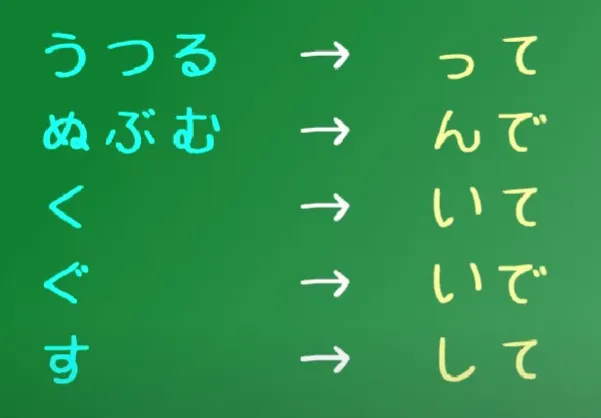
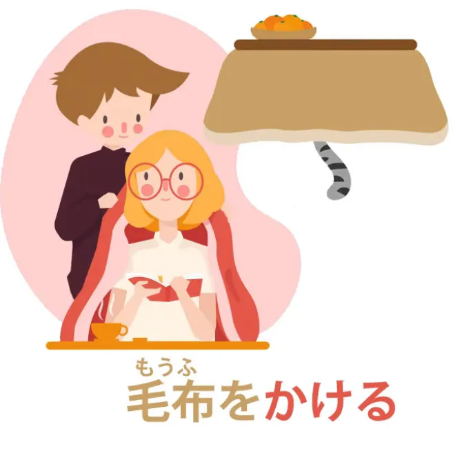

Trong bất kì câu Tiếng Nhật, dù phức tạp đến nhường nào, cũng có thể được quy về câu nền tảng.
Trong mọi câu Tiếng Nhật đều có hai thành phần cơ bản nhất hay còn được gọi là câu chính (Theo Cure Dolly thì nó là core sentence, nhưng mình sẽ gọi nó là câu chính). Hãy thử hình dung nó như một đoàn tàu. Cấu trúc câu cơ bản bao gồm 2 phần: Toa tàu A và Đầu tàu B.
Có hai kiểu câu chính:
- A là B (Không phải hành động: Trạng thái, cảm xúc, định nghĩa.....) - A is B (Tiếng Việt mình không có từ nào tương ứng với "be" nên phần này mình đặt tạm là "A là B" và giải thích thêm).
- A thực hiện hành động B (Ngược lại) - A does B.
Bạn có thêm "phụ gia" vào bất kì A hay B, biến thành câu phức, thêm nội dung hay làm bất cứ điều gì thì cấu trúc câu chính vẫn chỉ được quy về A và B.
Sẽ có các kiểu câu chính trong Tiếng Nhật như sau:
- Câu động từ: さくらがあるく - Sakura đi bộ (Khi động từ chính là Đầu tàu B)
- Câu hệ từ: さくらが日本人だ - Sakura là người Nhật (だ gần tương đương với です, có những điểm khác nhau nhất định mà ta sẽ bàn tới sau). Về cơ bản chữ だ này được coi là một dấu bằng, kiểu さくら = 日本人 (A là B - A is B ở trên)
- Câu tính từ: ペンが赤い/あかい - Bút màu đỏ (Tại sao không có だ ở đây? Là do chức năng của だ đã được tích hợp vào trong tính từ rồi. Nghe khá khó hiểu nhưng bạn về cơ bản sẽ không được thêm だ nếu B là tính từ).
Bonus thêm một video khác:
Danh từ trong tiếng Nhật
Danh từ là một trong những loại từ phổ biến và linh hoạt nhất trong tiếng Nhật. Ngoài danh từ thông thường, còn có những "siêu danh từ" (super-nouns) có những năng lực đặc biệt riêng.
I. Siêu danh từ
Một số danh từ trong tiếng Nhật có thể hoạt động như các từ loại khác trong ngữ cảnh cụ thể. Dưới đây là ba loại siêu danh từ phổ biến:
1. Adjectival nouns (còn gọi là “な adjectives”)
Chúng không phải là tính từ thực sự. Đây là danh từ nhưng có thể hoạt động như tính từ khi đi trước một danh từ khác, bằng cách thêm な.
-
Ví dụ:
- 不思議だ (là điều kỳ lạ)
- 不思議な屋敷 (ngôi biệt thự kỳ lạ)
Một danh từ bình thường không thể làm được điều này.
2. する nouns
Đây là những danh từ có thể kết hợp trực tiếp với động từ する để tạo thành một động từ ghép.
-
Ví dụ:
- 勉強をする = học (theo dạng đầy đủ, có tân ngữ)
- 勉強する = học (rút gọn, trực tiếp)
Điểm đặc biệt: Có thể lược bỏ trợ từ を mà vẫn hợp ngữ pháp.
3. Adverbial nouns
Là những danh từ có thể được sử dụng như trạng từ, thường bằng cách thêm に. Tuy nhiên, trong nhiều trường hợp, に có thể bị lược bỏ.
-
Ví dụ:
- 静かにする = hành động một cách yên tĩnh
- ゆっくりに歩く = đi chậm rãi
- ゆっくり歩く = đi chậm rãi (bỏ に vẫn được)
- ゆっくりする = thư giãn, thong thả
Lưu ý: Rất nhiều danh từ loại này kết thúc bằng 「り」, nhưng không phải tất cả.
II. Danh từ ghép
1. Định nghĩa
Tiếng Nhật thường ghép trực tiếp hai danh từ để tạo thành một từ mới mang nghĩa riêng biệt, thay vì dùng cấu trúc A の B.
-
Ví dụ:
- 懐中（かいちゅう）= trong túi
- 時計（とけい）= đồng hồ
- 懐中時計（かいちゅうどけい）= đồng hồ bỏ túi
Cách này tương tự như cách ghép từ trong tiếng Anh: bookshelf, classroom, notebook, v.v.
2. Rendaku (連濁) – hiện tượng biến âm
Khi danh từ thứ hai được ghép vào, âm đầu của nó đôi khi sẽ biến đổi (thêm "ten-ten"), ví dụ:
- 時計 → どけい
- 空（そら）→ 青空（あおぞら） chứ không phải あおそら
Âm đầu như k, s, t... sẽ đổi thành g, z, d... theo một số quy tắc ngữ âm nhất định. Tuy nhiên, không phải lúc nào cũng áp dụng được – vẫn có ngoại lệ.
III. Tóm tắt
| Loại danh từ | Mô tả | Ví dụ |
|---|---|---|
| Thường | Danh từ thông thường | 本, 車, 人 |
| Adjectival | Có thể dùng với な để bổ nghĩa | 不思議な話 |
| する noun | Ghép với する để thành động từ | 勉強する, 運動する |
| Adverbial | Dùng như trạng từ (với hoặc không có に) | ゆっくり歩く |
| Ghép | Hai danh từ ghép thành từ mới | 青空, 懐中時計 |
Ghi nhớ nhanh là: Every verb ends in an -う row kana – and it has to be a kana, it can’t be included in kanji.
Lấy ví dụ từ ngữ pháp Tiếng Anh trước, trong ngữ pháp Tiếng Anh sẽ có ba kiểu thì để chỉ thời gian: quá khứ, hiện tại và tương lại. Nhưng trong Tiếng Nhật, trên thực tế, chỉ có hai kiểu thì: quá khứ và "bất quá khứ" (non-past tense)
Thì bất quá khứ trong Tiếng Nhật thường thể hiện những sự kiện/hành động trong tương lai. Ví dụ như いぬがたべる - Con chó sẽ-ăn; さくらがあるく - Sakura sẽ-đi-bộ (Nghe thiếu tự nhiên bởi vì nó thiếu tự nhiên thật).

So, the Japanese non-past tense is very similar in the way it functions to the English non-past tense. If you understand one you can pretty much understand the other. Most of the time, the Japanese non-past tense refers to future events
Còn để thể hiện hành động đang diễn ra ở hiện tại, ta sẽ sử dụng いる. いる có nghĩa là in relation to animals and people. Ví dụ như: さくらがあるいている - Sakura đang đi bộ.
Khi chuyển về dạng này thì nó thành động cơ trắng (hay bạch động cơ cho hay nhỉ?):
A white engine is an element that could be an engine but in this case it's NOT the engine of this sentence. It's modifying, or telling us more about, one of the core elements of the sentence.

Một thắc mắc của cá nhân mình:
? Không biết mình có sai không nhưng thử tra từ điển đơn ngữ thì nó lại là: 〔もと、（動かずに、じっとその所に）すわる意〕. Dịch nôm na thì có nghĩa là "Không cử động, đứng ở yên chỗ đó"?
Để thể hiện quá khứ: Chỉ cần thêm た. So, いぬがたべる -> いぬがたべた.
(Có nhiều cách thêm た khác nhau, cách thêm た cũng sẽ tương tự cách thêm て. Sẽ được nói thêm trong bài 5)
Các nhóm động từ
Động từ Ichidan (一段)
Nhóm động từ đầu tiên được gọi là nhóm Ichidan (一段 - Bậc một) hay động từ đuôi いる/える (Có một số người gọi là động từ đuôi -る nhưng nó chưa đúng). Muốn thay đổi thì chỉ cần thay -る bằng て hoặc た.
Động từ Ichidan luôn kết thúc bằng -いる/-える (Các động từ có âm kana kết thúc thuộc hàng い hoặc hàng え cộng thêm -る.)

Động từ Godan (五段)
Nhóm động từ thứ hai được gọi là nhóm Godan (五段 - Bậc 5). Có thể kết thúc bằng bất kì đuôi う, bao gồm cả -いる hoặc -える. Và cả -おる, -ある và -うる (Phần lớn động từ đuôi いる/える là Ichidan, có một số nhỏ là Godan, bạn có thể xem thêm video này của Cure Dolly để tìm hiểu thêm).
Nhóm động từ bất nguyên tắc
Chỉ có hai động từ bất nguyên tắc thôi, đó là くる (tới) and する (làm).

Động từ có thể chuyển sang một số thể như Thể て](Thể%20て.md) hoặc thể た (Về cơ bản cách "chia" cũng sẽ như thể て), hay có thể chuyển đổi Các thân từ cho động từ để ghép với các trợ động từ (helper verb khác). Cũng có thể có [Động từ ghép (Ghép hai động từ để tạo ra một động từ với nghĩa mới)
Động từ + Thể て
Về cơ bản thì ba nhóm động từ là vậy, bây giờ sẽ chuyển sang phần chuyển đổi thể động từ. Cách làm cho Ichidan thì siêu đơn giản, chỉ cần bỏ -る và thêm て hoặc た. Còn với Godan thì phức tạp hơn chút xíu.

Nhóm Godan 1 - UTSURU/うつる: Bỏ -う, -つ hoặc -る, rồi thay bằng -って.
- わらう thành わらって (Waratte);
- もつ thành もって (Motte);
- とる thành とって (Totte).

Nhóm Godan 2: Bỏ ぬ, ぶ, む rồi thay bằng -んで, với thể た thì là -んだ.
- しぬ (Động từ đuôi -ぬ duy nhất) thành しんで / しんだ;
- のむ thành のんで / のんだ
- あそぶ thành あそんで / あそんだ.

Nhóm Godan 3 và 4 - Nhóm く và ぐ. Bỏ -く và thay bằng -いて hoặc -いた (Với ぐ thì thành いで).
- あるく thành あるいて / あるいた.
- およぐ thành およいで.

Nhóm Godan 5 - Nhóm -す. Bỏ -す và thêm -して
- はなす thành はなして;
- ます thành まして, đổi về quá khứ thì thành ました.

Ngoại lệ: Với động từ bất quy tắc (Chỉ có hai)
- くる (come) thành きて; する (do) thành して.
- いく – the verb いく (to go) – because it ends in -く, you would expect it to become いいて nhưng いって mới đúng.

Bonus thêm một video:
Câu ghép và thể て
Trong Tiếng Nhật, thể て có rất nhiều cách dùng khác nhau. Một trong những cách dùng quan trọng là dùng để nối các mệnh đề lại với nhau, tạo thành câu ghép. Khi động từ ở cuối một mệnh đề được chuyển sang thể て, nó báo hiệu rằng còn có một mệnh đề khác theo sau.

Ví dụ: おねえちゃんはつまらない本をよんでいてあそんでくれなかった. Đây là một câu ghép có hai mệnh đề.
Mệnh đề thứ nhất: おねえちゃんはつまらない本をよんでいて: "Chị gái đang/đã đọc một quyển sách nhàm chán". Động từ chính là よんでいる (đang đọc), chuyển sang thể て là よんでいて. Thể て ở cuối mệnh đề thứ nhất (よんでいて) có vai trò nối câu, tương tự như thêm từ "và..." vào cuối mệnh đề đó trong Tiếng Việt.
Thể て + Trợ động từ
Người Nhật thường hay nói kết hợp trợ động từ lắm, một số ví dụ có thể kể đến: 彼は死んちゃう（死んでしまう）。
しまう is talking about going ahead and doing something, something happening by accident;
Trong tiếng Nhật, ta có ba loại đầu máy:
- đầu-う: Câu động từ (verbs)
- đầu-だ: Câu danh từ (nouns)
- đầu-い: Câu tính từ đuôi い (い-adjectives)
Nhưng điều quan trọng nhất là: cả ba loại đầu máy này đều có thể được dùng như tính từ – tức là dùng để bổ nghĩa cho danh từ, dù đó là động từ, danh từ hay tính từ.
NHƯNG: Every adjective has to end in the kana い
Tính từ đuôi い
Một câu đơn giản như:
ペンがあかい。→ Cây bút đỏ.
Trong đó, あかい không đơn thuần là “màu đỏ” mà là “là màu đỏ” (is-red). Khi ta chuyển phần “đầu máy” này ra phía trước danh từ (làm tính từ), ta có:
あかいペン → Cây bút màu đỏ
Ở đây, あかい đã mất vai trò làm động từ chính (không còn là "câu hoàn chỉnh") mà chỉ là phần bổ nghĩa cho danh từ ペン. Thử viết một câu hoàn chỉnh dựa trên đó
あかいペンがちいさい。→ Cây bút đỏ thì nhỏ.

Dùng động từ như tính từ
Đừng lo về các tính từ đuôi な vội – chúng thực chất là danh từ, ta sẽ nói sau. Ở đây, ta nói đến việc biến động từ thành phần bổ nghĩa cho danh từ.
Ví dụ:
しょうじょがうたった。→ Cô bé đã hát. うたったしょうじょ → Cô bé đã hát (the girl who sang)
Bây giờ đây không còn là một câu hoàn chỉnh, nhưng ta có thể thêm vào phần chính:
うたったしょうじょがねている。→ Cô bé đã hát thì đang ngủ.

Dùng danh từ như tính từ (tính từ đuôi な)
Ví dụ:
いぬがやんちゃだ。→ Con chó nghịch ngợm.
Muốn đưa phần “nghịch ngợm” ra trước “con chó” để bổ nghĩa, ta cần chuyển だ thành な:
やんちゃないぬ → Con chó nghịch ngợm
Một câu đầy đủ là
やんちゃないぬがねている。→ Con chó nghịch ngợm đang ngủ.

Lưu ý: Không phải danh từ nào cũng dùng được theo kiểu này. Chỉ một số danh từ đặc biệt (hay được gọi là tính từ đuôi な) mới dùng được như vậy. Dù gọi là “tính từ đuôi な”, chúng vẫn là danh từ chứ không phải tính từ thực sự.
の [no]
の [no] giống như cái ['s] (Sở hữu cách thì phải) bên Tiếng Anh. Ta dùng の để chỉ sự sở hữu hoặc phân loại.
Nếu có ai thắc mắc "khi nào dùng な và khi nào dùng の?" thì câu trả lời là chịu :)). Nói chung là càng học nhiều thì càng nhớ nhiều trường hợp. Mà cũng không cần thiết phải học lắm nếu sử dụng bình thường vì về cơ bản người ta vẫn sẽ hiểu nghĩa thôi.
Cách "chia" tính từ
-い and add whatever we're going to add, the specific adjectival modifications all come from the か-き-く-け-こ row.
Trợ từ
Khi ta nói "trợ từ" hay "particles", ý của ta là に、へ、で、が。。。chúng ta cũng có thể kết hợp hai trợ từ với nhau, hay còn được gọi là Trợ từ đôi
Trợ từ logic
Trợ từ logic là những trợ từ cho ta biết cấu trúc logic của một câu – ai làm gì với ai, bằng gì, ở đâu, khi nào, v.v. Nói cách khác, chúng cho ta biết điều gì thực sự đang xảy ra trong câu.
Trái lại, trợ từ は chỉ dùng để nêu chủ đề của câu – tức là nói "chúng ta đang bàn về cái này", chứ không nói gì về hành động hay mối quan hệ trong câu.
Điểm cần nhớ: trợ từ logic luôn gắn với danh từ. Nếu bạn thấy một từ nào đó đi kèm trợ từ logic, thì từ đó đang được dùng như một danh từ. Và khi một trợ từ logic đã gắn vào danh từ, hai thành phần đó phải được xem như một cặp không thể tách rời – chúng đi cùng nhau để tạo nên ý nghĩa của câu.
(Trợ từ Logic khác, trợ từ không logic cũng khác)
- Trợ từ が - Một trong những trợ từ quan trọng nhất và luôn phải có trong câu
- Trợ từ で
- Trợ từ に
- Trợ từ へ
Trợ từ non-logical
Thì ta có は、も - Hai trợ từ non-logical, để thể hiện chủ đề.
Trợ từ と](Trợ%20từ%20と.md) (Không biết nữa) với [Trợ từ の thì hơi khác thì phải.
Trợ từ は và も
I. Trợ từ は – đánh dấu chủ đề (topic)
1. Chức năng cơ bản
- は đánh dấu chủ đề (topic) của câu – tức là "về cái này thì..."
- Phần theo sau は được gọi là comment – tức điều muốn nói về chủ đề đó.
Ví dụ:
私は学生です。 → "Còn tôi thì là học sinh."
2. Chủ đề và chủ ngữ
- Rất thường xuyên chủ đề trùng với chủ ngữ.
- Khi đó, từ đứng trước は vừa là chủ đề vừa là chủ ngữ, nhưng không làm thay đổi chức năng gốc của nó.
は có thể topicalize một chủ ngữ, nhưng điều đó không có nghĩa là nó không còn là chủ ngữ. Nó là chủ đề + chủ ngữ cùng lúc.
Ví dụ:
鳥は空を飛んでいる。
→ “Còn chim thì đang bay trên trời.” (tập trung vào "chim")
II. Tác dụng của は
1. Nhấn mạnh thông qua topic hóa
- Khi bạn muốn tập trung vào một chủ thể để đưa ra nhận xét về nó, dùng は.
Ví dụ:
鳥が空を飛んでいる。→ chim đang bay trên trời (trung lập)鳥は空を飛んでいる。→ còn chim thì (trái với những thứ khác), đang bay
2. Dùng để đối chiếu (contrast)
は thường ngầm mang tính đối chiếu: “về A thì như vậy, còn B thì sao đó”.
Ví dụ:
料理は上手。→ Nấu ăn thì giỏi (ngầm hiểu: các mặt khác có thể không)金はないが、ツテはある。→ Không có tiền, nhưng có mối quan hệ私は怖い。→ Riêng tôi thì sợ (ngầm so với người khác)
3. Thay đổi chủ đề
- Khi thay đổi chủ đề trong cuộc hội thoại, dùng は để chuyển trọng tâm sang đối tượng mới.
Ví dụ:
アフリカはライオンはいるがトラはいない。
→ Ở châu Phi, sư tử thì có, nhưng hổ thì không.
III. Trợ từ も – "cũng"
1. Dùng để nói “cũng là chủ đề”
- も cũng đánh dấu chủ đề, nhưng khác với は, nó giữ nguyên mối liên hệ với chủ đề trước đó.
- Không dùng も nếu chưa có chủ đề được nói đến trước đó.
も nối tiếp chủ đề cũ, với ý rằng "điều tôi nói sau đây cũng đúng với chủ đề mới này như đã đúng với chủ đề trước đó."
Ví dụ:
ウサギが穴に飛び込んだ。アリスも飛び込んだ。
→ Con thỏ nhảy xuống hố. Alice cũng nhảy xuống.
Ở đây:
- Chủ đề ban đầu là “thỏ”.
- Khi chuyển sang “Alice” với も, ta ngầm nói rằng Alice cũng hành động như thỏ.
2. Dùng trong liệt kê với nghĩa "cũng"
Ví dụ:
私も行きます。→ Tôi cũng đi.リンゴも好き。→ Cũng thích táo.
IV. So sánh nhanh: は vs が vs も
| Trợ từ | Vai trò | Tình huống sử dụng | Ghi chú |
|---|---|---|---|
| は | Chủ đề | Khi muốn nói “còn về…” | Có thể hàm ý đối chiếu |
| が | Chủ ngữ mới | Khi giới thiệu điều chưa nhắc tới | Dùng để xác định, nhấn mạnh ai làm gì |
| も | Chủ đề tương đồng | Khi muốn nói “cũng vậy” | Gắn với chủ đề trước đó |
V. Ghi chú thêm
- Mọi câu tiếng Nhật đều có が-marked subject và は-marked topic, dù đôi khi không hiển thị rõ.
Ví dụ:
アメリカ人です。
→ Ngầm hiểu: zeroは zeroがアメリカ人です。
→ Tôi là người Mỹ (tôi là chủ đề và là chủ ngữ luôn)
- Khi giới thiệu một nhân vật mới, dùng が:
おじいさんがいた。(có một ông lão) Sau đó, nếu tiếp tục nói về ông ấy → dùng は:このおじいさんは…
Trợ từ が
✅ I. Chức năng chính
- が đánh dấu chủ ngữ (subject) – người/vật thực hiện hành động hoặc mang đặc điểm được nói tới trong câu.

✅ II. Phân biệt 2 cách dùng: Bình thường vs Nhấn mạnh (Emphatic)
🔹 A. Cách dùng thông thường（普通の「が」）
- Kết nối chủ ngữ với vị ngữ một cách trung tính.
- Không hàm ý nhấn mạnh đặc biệt.
Ví dụ:
-
子供たちが走った。 → Bọn trẻ chạy.
-
鳥が空を飛んでいる。 → Chim đang bay trên trời.
-
料理が苦手。 → Tôi dở nấu ăn. (Bản thân "cooking" là thứ tôi không giỏi)
📌 Lưu ý: Dù có thể có sắc thái nhấn nhẹ, phần lớn trường hợp, đây là câu thông báo đơn thuần.
🔹 B. Cách dùng nhấn mạnh（共感・強調の「が」）
- Dùng để xác định rõ "ai/cái gì" là người thực hiện hành động, thường trong đối thoại, tương phản, hoặc khi đính chính.
Ví dụ:
-
あなたがメリーさん？ → Bạn là Mary à?
-
A: 彼がやったの？ B: そう、彼が。 → A: Là anh ta làm à? → B: Đúng, anh ta.
-
私じゃない、向こうが悪い！ → Không phải tôi, là bên kia sai!
-
彼らが世界を救った。 → Chính họ đã cứu thế giới.
📌 Đây là kiểu "が nhấn mạnh" (empathic が) – hay còn gọi là focus が.
✅ III. So sánh với 「は」
| は | が | |
|---|---|---|
| Chức năng | Đánh dấu chủ đề (topic) | Đánh dấu chủ ngữ (subject) |
| Nghĩa ngầm | “Còn về… thì…” / “Riêng…” | “Chính là…” (trung tính hoặc nhấn mạnh) |
| Ví dụ | 料理は苦手。 → Riêng nấu ăn thì tôi dở | 料理が苦手。 → Tôi dở món nấu ăn |
📌 Khi dùng は, câu sẽ mang tính bình luận về chủ đề. 📌 Khi dùng が, câu mang tính trình bày sự thật về chủ thể, hoặc chỉ rõ ai/cái gì.
✅ IV. Một số lưu ý đặc biệt
🔹 Khi có 2 が gần nhau trong mệnh đề định ngữ:
- Có thể thay が → の trong mệnh đề phụ để tránh trùng lặp: → お金がいるわけ → お金のいるわけ
🔹 Câu văn nghệ thuật, đối thoại cảm xúc:
- Tạm ngừng sau が để tạo sắc thái nhấn chung, không nhất thiết là "emphatic が": → 鳥が、空を飛んでいる。 → Con chim ấy, nó đang bay trên trời…
✅ V. Tổng kết nhanh
| Dạng dùng | Mục đích | Ví dụ | Ghi chú |
|---|---|---|---|
| Thông thường | Nêu chủ ngữ | 子供が走った | Không nhấn mạnh |
| Nhấn mạnh | Xác định chính xác “ai/cái gì” | 彼がやった | Dùng trong đối thoại |
| So với は | が = chủ thể hành động は = chủ đề bình luận | 料理が苦手 vs 料理は苦手 | が trung tính hoặc nhấn mạnh, は làm câu mang tính đối chiếu |
Trợ từ の
1. Sở hữu: “của”
- Dùng để nối 2 danh từ, biểu thị quan hệ sở hữu, xuất xứ, đặc trưng…
Ví dụ:
- 彼の車 = xe của anh ấy
- 東京の大学 = đại học ở Tokyo
2. Danh từ hóa mệnh đề / động từ: biến hành động thành danh từ
Ví dụ:
- 日本語を勉強するのは楽しい。= Việc học tiếng Nhật thì vui.
- 泣くのをやめて。= Đừng khóc nữa.
👉 Tương đương với “việc…” hoặc “cái việc mà…”
3. Thay thế が trong mệnh đề định ngữ (modifying clause)
Sensei, I don't understand the use of の in 「そんなにお金のいるわけがない」Isn't お金 a noun already which is modified by そんなに? So why is the の needed?
📌 Cấu trúc:
[Chủ ngữ]の[động từ hoặc cụm từ] + [danh từ chính]
Dùng khi cụm phía trước bổ nghĩa cho danh từ phía sau. Thường dùng の thay cho が trong mệnh đề bổ nghĩa để diễn đạt tự nhiên và liền mạch hơn, nhất là khi có 2 が gần nhau.
Ví dụ:
-
お金のいるわけがない。 = Không lý nào lại cần tiền (mệnh đề "お金がいる" bổ nghĩa cho "わけ") = = お金がいるわけがない。
-
犬の食べた辞書 = Cuốn từ điển mà con chó đã ăn mất = = 犬が食べた辞書
💡 Lưu ý:
- Thường chỉ thay が → の khi cụm đó là chủ ngữ trong mệnh đề bổ nghĩa.
- Không thay được nếu trong mệnh đề đó có を hay các trợ từ khác.
Ví dụ KHÔNG hợp lệ:
- 私のラーメンを食べたレストラン ❌ → Không được, vì "を" không thay được.
Nhưng:
- 私の食べたレストラン ✔ = Nhà hàng mà tôi đã ăn
4. Tạo cụm danh từ mang tính khái quát hoặc bổ sung ngữ cảnh
Ví dụ:
- 朝のパリに響くのは鐘だよ。 → Cái vang lên trong Paris buổi sáng là tiếng chuông. → 「朝のパリに響くの」= danh từ hóa cụm đó làm chủ ngữ
5. Trình bày đặc điểm / mô tả (giống “cái mà …”)
Ví dụ:
- 普段から飄々として、決して本心を見せることのないラプラス → Laplace, người không bao giờ để lộ bản tâm → 「本心を見せることのない」= “(cái việc) không để lộ bản tâm”
📌 Ở đây 「のない」= phủ định của danh từ hóa 「本心を見せること」
6. Cách dùng khác (không thuộc mệnh đề):
- Đứng cuối câu (の) để làm nhẹ giọng, hoặc thể hiện cảm xúc, thường trong hội thoại thân mật, nhất là nữ giới và trẻ con: → 行きたくないの？ = Không muốn đi hả?
📌 Tổng kết nhanh
| Mục đích | Ví dụ | Ghi chú |
|---|---|---|
| Sở hữu | 彼の車 | “của” |
| Danh từ hóa | 勉強するのは楽しい | Biến hành động thành danh từ |
| Thay が trong mệnh đề bổ nghĩa | 犬の食べた辞書 | Tự nhiên, tránh lặp が |
| Làm chủ ngữ trong câu phức | 響くのは鐘だ | Đóng vai trò danh từ |
| Phủ định đặc điểm | 本心を見せるのない人 | “Người không để lộ bản tâm” |
| Câu hỏi cảm thán | 行かないの？ | Mềm mại, thân mật |

Chúng ta biết rằng に trong một câu diễn đạt logic thường dùng để đánh dấu đích đến cuối cùng của một hành động.
Ví dụ: (zero が)さくらにボールをなげた có nghĩa là: Tôi ném quả bóng về phía Sakura.:
- Quả bóng được đánh dấu bằng を vì nó là thứ mà tôi thật sự ném đi.
- Tôi được đánh dấu bằng が, dù có xuất hiện trong câu hay không, vì tôi là người thực hiện hành động ném.
- Sakura được đánh dấu bằng に, vì cô ấy là mục tiêu của hành động đó – theo nghĩa đen.
に đánh dấu “đích đến”
Trợ từ に hầu như luôn luôn đánh dấu một loại mục tiêu nào đó. Vì vậy, nếu ta đi đến đâu đó, gửi cái gì đó đi đâu, hoặc đặt vật gì đó ở đâu, thì nơi chốn đó sẽ được đánh dấu bằng に. Ví dụ: Nếu A đi tới B, thì B được đánh dấu bằng に, vì B là đích đến, mục tiêu của hành động di chuyển đó. → (zero が)こうえんにいく: Tôi đi đến công viên.
Do đó, に dùng để đánh dấu đích đến mang tính vật lý, cụ thể của sự di chuyển. Nhưng nó cũng có thể dùng để đánh dấu những mục tiêu trừu tượng hơn.
Ví dụ: (zero が)おみせにたまごをかいにいく → Tôi đi đến cửa hàng để mua trứng (Cụm かいにいく mang nghĩa "đi để mua", hay "đi với mục đích là mua"). Ở đây ta có thể thấy:
- おみせにいく → đánh dấu đích đến vật lý (cửa hàng)
- たまごをかいにいく → đánh dấu mục tiêu hành động (mua trứng) Và cũng có thể có hai từ được đánh dấu bằng に trong cùng một câu – một chỉ nơi đến, một chỉ mục tiêu ý định.
に còn đánh dấu "nơi tồn tại"
Ngoài việc đánh dấu nơi đi đến hay đích của hành động, に cũng được dùng để chỉ nơi một người hay vật đang hiện diện. Ví dụ:
- おみせにいく → Tôi đi đến cửa hàng
- おみせにいる → Tôi đang ở cửa hàng Như bạn thấy, nơi tồn tại cũng là một mục tiêu, vì để một vật hay người ở đâu đó, trước hết họ/đồ vật đó phải đã đến nơi đó rồi → に có thể chỉ cả mục tiêu tương lai (nơi sẽ đến) và mục tiêu đã đạt được (nơi đang ở).
Ví dụ với vật thể: ほんはテーブルのうえにある → Quyển sách ở trên bàn → に đánh dấu vị trí (mục tiêu tồn tại) của quyển sách.
に đánh dấu đích của sự biến đổi
Một cách dùng khác nữa của に là đánh dấu mục tiêu của một sự biến đổi. Tức là, cũng như khi A đi tới B, thì に đánh dấu B là nơi A đến, khi A biến thành B, thì に cũng đánh dấu B là điều mà A trở thành. Ví dụ: さくらはかえるになった → Sakura đã biến thành con ếch. Hoặc ことし(zero が)十八さいになる → Năm nay (tôi) trở thành 18 tuổi.
Một số ghi chú khác
So sánh trợ từ này với Trợ từ で
- 日本語でどう言う・何って言う？ (How do you say X in japanese?)
- 日本語（で・を）話している時声が大きくなる (I speak louder in japanese)
- 〇を日本語でなんていうの
=> で here indicates method, indicates what you are using to do the thing
What can you do in Japan? 日本（に・で）出来ることは？ (The nuance is hard to say in this case lol, just use に by default)
Trợ từ で can neutrally specify location（e.g I met him at the coffee shop. に feels like you are pointing at that location. it sounds like the topic is travelling ie. you aren't there already (In Japan, what can you do vs the neutral What can you do in japan)
Maybe に is just for attributing attributes - and shouldn't be used for specifiying location. Dưới đây là ví dụ:
- 日本に欠点がない
- テーブルにバールがあります
- 森に魔女がいます
Không dùng に để chỉ địa điểm thực hiện hành động. Có thể chỉ đích đến (địa điểm, hướng đi) hoặc dùng に với ある cũng được.
Ví dụ: 屋上に帽子が飛んだ. but not 屋上に紅葉が飛んでる (there are leaves fluttering on the rooftop) should use で
に focuses on where something was made or happened (あった), or like with 森に家を建てた it works cause you created a thing so 森 specifies where that thing was created to
で specifies "The presence" where you build it, not "the target / destination" so 森で家を建てた should be working but it indicates the "動きが行われる場所".

The two exceptions (so far) are for continuous living/attending
- 東京に住んでいる. Chứ không phải là: (X) 会社に勤めている
- Và existence, like in the above picture: 図書館に辞典がある
「で」は場所、「に」は動作の生じる環境を指しています。 「に」＋いる・ある、「で」＋その他の動詞
Trợ từ へ
Chữ này viết là へ (he), nhưng khi dùng làm trợ từ thì phát âm là “え”. Đây là một trợ từ rất đơn giản – chỉ có một chức năng duy nhất. Khi nói “A đi tới B”, ta có thể dùng に để đánh dấu B. Nhưng cũng có thể dùng へ.
へ chỉ dùng để chỉ phương hướng đi tới. Nó không thể dùng để chỉ nơi đang ở, hoặc mục tiêu đã đạt. Nó chỉ mang nghĩa: đang đi tới đâu đó – một hướng di chuyển.
へ để trả lời câu hỏi: "Đi về hướng nào?" → Khác với に là へ chỉ nói đến phương hướng, không nhất thiết phải là điểm đến cụ thể. Ví dụ: "về hướng nhà Sakura".
Trợ từ を
✅ I. Chức năng cơ bản
- を đánh dấu tân ngữ trực tiếp (direct object) – tức là đối tượng bị tác động bởi hành động.
📌 Hỏi: 👉 “Hành động đó tác động lên ai/cái gì?” → Trả lời chính là phần đi với を.
✅ II. Cấu trúc điển hình
| Mẫu câu | Diễn giải |
|---|---|
| [Danh từ] を [động từ tha động từ] | Ai đó làm gì đó lên đối tượng |
✅ III. Ví dụ cơ bản
| Câu | Nghĩa | Phân tích |
|---|---|---|
| パンを食べる。 | Ăn bánh mì | "パン" là cái bị ăn |
| 本を読む。 | Đọc sách | "本" là cái bị đọc |
| 映画を見る。 | Xem phim | "映画" là cái bị xem |
| ドアを開ける。 | Mở cửa | "ドア" là cái bị mở |
✅ IV. Các cách dùng đặc biệt khác
🔹 1. Chỉ nơi khởi điểm (xuất phát)
Khi đi với các động từ chỉ di chuyển, 「を」có thể chỉ điểm xuất phát, nơi đi qua.
Ví dụ:
- 家を出る。= Rời khỏi nhà
- 教室を出て、廊下を歩いた。= Ra khỏi lớp, đi qua hành lang
- 川を泳ぐ。= Bơi trên sông
📌 Không phải "tác động", mà là "di chuyển qua" hoặc "rời khỏi" một nơi → vẫn dùng を.
🔹 2. Danh từ hóa + をする (hoặc を + する động từ)
Dùng để biến danh từ thành hành động.
Ví dụ:
- 勉強をする。= Học bài
- 運動をする。= Tập thể dục
- 話をする。= Nói chuyện
📌 Trong những câu này, を không chỉ tác động vật lý, mà nối danh từ hành động với động từ "する".
🔹 3. Cảm xúc/tác động tâm lý
Một số động từ biểu thị cảm xúc, cảm nhận cũng dùng を để chỉ đối tượng bị tác động (về mặt tinh thần).
Ví dụ:
- 愛を感じる。= Cảm nhận tình yêu
- 苦しみを耐える。= Chịu đựng nỗi đau
- 音楽を楽しむ。= Tận hưởng âm nhạc
✅ V. So sánh nhanh với が / に
| Trợ từ | Câu hỏi | Ví dụ | Chức năng |
|---|---|---|---|
| を | Hành động tác động lên gì? | パンを食べる | Tân ngữ trực tiếp |
| が | Ai/cái gì làm hành động? | 猫が魚を食べた | Chủ ngữ |
| に | Tác động lên ai/cái gì (gián tiếp)? | 先生に質問する | Đối tượng tiếp nhận |
✅ VI. Tổng kết nhanh
| Dạng dùng | Ý nghĩa | Ví dụ | Ghi chú |
|---|---|---|---|
| Tác động trực tiếp | Ai/cái gì bị ảnh hưởng | 本を読む | Tha động từ |
| Di chuyển qua/xuất phát | Rời khỏi / đi qua nơi nào | 家を出る、道を歩く | Không nhầm với から |
| Với する | Danh từ hóa hành động | 勉強をする | Rất phổ biến |
| Cảm xúc / tâm lý | Cảm nhận lên đối tượng | 音楽を楽しむ | Trừu tượng vẫn dùng を |
✅ Mẹo ghi nhớ:
Hễ hành động "tác động thẳng vào cái gì đó" → dùng を. Kể cả tác động là thể chất (ăn, mở cửa) hay trừu tượng (cảm nhận, chịu đựng) → vẫn là を.
Nếu bạn muốn, mình có thể tiếp tục viết bản tương tự cho:
- に vs で
- は vs も
- と vs や
- を vs に (so sánh trực tiếp)
Bạn cần mình làm tiếp phần nào không?
Trợ từ で
I. Chức năng cơ bản
Trợ từ で thường trả lời cho các câu hỏi:
- “Hành động xảy ra ở đâu?”
- “Bằng phương tiện gì?”
- “Trong phạm vi nào?”
II. Các cách dùng phổ biến của で
1. Chỉ địa điểm xảy ra hành động
Dùng để chỉ nơi mà hành động diễn ra (khác với に, vốn chỉ nơi tồn tại hay điểm đến).
Ví dụ:
- 学校で勉強します。 → Học ở trường.
- 図書館で本を借ります。 → Mượn sách ở thư viện.
Lưu ý: Không dùng で với các động từ chỉ sự tồn tại như いる・ある・住んでいる・勤めている.
2. Chỉ phương tiện, cách thức, công cụ
Dùng để chỉ phương tiện, công cụ, ngôn ngữ… được dùng để thực hiện hành động.
Ví dụ:
- 電車で会社へ行きます。 → Đi làm bằng tàu điện.
- 箸で食べます。 → Ăn bằng đũa.
- 日本語で話します。 → Nói bằng tiếng Nhật.
3. Chỉ nguyên liệu, vật liệu
Dùng để chỉ chất liệu cấu tạo nên vật.
Ví dụ:
- この机は木で作られています。 → Cái bàn này được làm bằng gỗ.
4. Chỉ lý do, nguyên nhân
Dùng khi hành động xảy ra do tai nạn, sự kiện, sự cố…
Ví dụ:
- 事故で電車が遅れました。 → Tàu bị trễ vì tai nạn.
5. Chỉ phạm vi, giới hạn
Dùng để chỉ ranh giới, phạm vi không gian hoặc thời gian mà trong đó hành động xảy ra.
Ví dụ:
- 世界で一番美味しいラーメン。 → Mì ramen ngon nhất thế giới.
- この部屋でたばこを吸わないでください。 → Vui lòng không hút thuốc trong phòng này.
- 3年間で100万円貯金しました。 → Tiết kiệm được 1 triệu yên trong 3 năm.
6. Chỉ số lượng người tham gia
Dùng để chỉ số người cùng thực hiện một hành động.
Ví dụ:
- 5人で旅行に行きます。 → Đi du lịch với 5 người.
- みんなで踊る。 → Mọi người cùng nhau nhảy.
7. Chỉ thời gian cần thiết để hoàn thành
Dùng để diễn đạt mất bao lâu để làm xong việc gì.
Ví dụ:
- 1時間で終わります。 → Sẽ xong trong vòng 1 tiếng.
III. Lưu ý quan trọng
-
Không dùng で với các động từ chỉ sự tồn tại hoặc trạng thái như:
- あります (có vật)
- います (có người)
- 住んでいます (đang sống)
- 勤めています (đang làm việc cho)
IV. Tổng kết nhanh
| Cách dùng | Ý nghĩa | Ví dụ |
|---|---|---|
| Địa điểm | Hành động diễn ra ở đâu | 学校で勉強する |
| Phương tiện | Dùng cái gì để làm gì | 電車で行く |
| Chất liệu | Làm bằng gì | 木で作る |
| Lý do | Tại sao xảy ra | 事故で遅れた |
| Phạm vi | Trong giới hạn nào | 世界で一番 |
| Số người | Ai cùng tham gia | 5人で行く |
| Thời gian cần | Mất bao lâu | 1時間で終わる |
Ghi chú: Trợ từ と trong tiếng Nhật
I. Lưu ý chung
- と không phải là trợ từ logic đơn thuần (như を, に, で...) hay non-logical (như は).
- Nó là một loại trợ từ đặc biệt, có thể gắn sau danh từ hoặc cả mệnh đề.
- Chức năng linh hoạt: vừa dùng để liệt kê, vừa để trích dẫn nội dung.
II. Các cách dùng chính
1. Dùng để liệt kê ("và")
- と nghĩa là “và” – theo cách liệt kê chính xác, không bỏ sót.
- Khác với や (mang tính ví dụ, không đầy đủ).
Ví dụ:
- ペンとえんぴつを買いました。 → Tôi đã mua bút và bút chì. (và chỉ vậy thôi)
- ペンやえんぴつを買いました。 → Tôi đã mua bút, bút chì và có thể cả thứ khác nữa.
2. Dùng để trích dẫn (quotation particle)
- Dùng để đánh dấu nội dung lời nói, suy nghĩ, cảm xúc...
- Cấu trúc: 「nội dung」+ と + động từ (nói, nghĩ, hỏi, v.v.)
Ví dụ:
- 「おそい！」と言って、はしり出した。 → Nói "chậm quá!" rồi chạy đi.
- 死にたいと思った。 → Tôi đã nghĩ rằng muốn chết.
Các động từ thường đi với と: 言う, 思う, 聞く, 答える, 叫ぶ, 考える, 感じる,...
3. Dùng trong câu điều kiện
- Cấu trúc: V1 + と + V2
- Diễn tả một kết quả tự nhiên, hiển nhiên, tất yếu xảy ra khi hành động trước diễn ra.
Ví dụ:
- 春になると、花が咲きます。 → Hễ mùa xuân đến thì hoa nở.
- ボタンを押すと、ドアが開きます。 → Nếu nhấn nút thì cửa sẽ mở.
Lưu ý: Không dùng để ra lệnh, mong muốn (giống cấu trúc としたら hoặc たら).
4. Dùng để diễn tả sự thay đổi trạng thái tức thì (văn học, mô tả)
- Diễn tả hành động xảy ra ngay sau khi một hành động khác xảy ra.
Ví dụ:
- ドアを開けると、猫が飛び出した。 → Vừa mở cửa thì con mèo phóng ra.
IV. Tổng kết nhanh
| Dạng dùng | Ý nghĩa | Ví dụ |
|---|---|---|
| Liệt kê | Và (chính xác) | パンとミルク |
| Trích dẫn | Nói rằng..., nghĩ rằng... | 死にたいと思った |
| Điều kiện | Nếu, hễ mà... | 春になると花が咲く |
| Chuyển trạng thái | Vừa... thì... | 開けると飛び出した |
| So sánh | A và B | 日本と中国 |
V. Ghi chú bổ sung
-
Khác biệt với や: と = "và (toàn bộ)" や = "và (ví dụ)"
-
So với は・が・を: と có tính liên kết và dẫn nội dung, không mang chức năng chủ ngữ hoặc tân ngữ chính như が・を.
Ghi chú: Trợ từ から trong tiếng Nhật
I. Ý nghĩa cơ bản
Trợ từ から dùng để chỉ điểm xuất phát – nghĩa là “từ” (nơi chốn, thời gian, nguyên nhân…).
- Nó đánh dấu phần khởi đầu, nguồn gốc, nguyên nhân hoặc nơi xuất phát của một hành động hay trạng thái.
- Có thể hiểu から là "from" trong tiếng Anh.
II. Các cách dùng chính
1. Chỉ nơi chốn xuất phát
Dùng khi một vật hoặc hành động bắt đầu từ một địa điểm cụ thể.
Ví dụ:
- 学校から帰りました。 → Tôi đã trở về từ trường.
- 棚の一つから瓶を取り下した。 → Lấy cái chai xuống từ một trong các kệ.
2. Chỉ thời gian bắt đầu
Dùng để nói hành động bắt đầu từ thời điểm nào.
Ví dụ:
- 午前9時から働きます。 → Làm việc từ 9 giờ sáng.
- 明日から夏休みです。 → Từ ngày mai là kỳ nghỉ hè.
3. Chỉ nguyên nhân, lý do (nghĩa bóng)
Dùng khi muốn nói “bởi vì...”, nhấn mạnh nguyên nhân gây ra hành động hoặc trạng thái.
Ví dụ:
- 寒いからコートを着る。 → Vì lạnh, nên mặc áo khoác.
- 頭が痛いから学校を休みました。 → Vì đau đầu, nên nghỉ học.
Cách hiểu sâu: から vẫn mang nghĩa "điểm khởi nguồn" – nhưng trong trường hợp này, khởi nguồn là lý do khiến hành động xảy ra.
Ghi chú: Trợ từ か trong tiếng Nhật
I. Ý nghĩa phổ biến nhất: Đánh dấu câu hỏi
1. Câu hỏi trực tiếp
Trợ từ か được đặt ở cuối câu để biểu thị rằng đó là một câu hỏi, nhất là trong văn viết hoặc kính ngữ.
Ví dụ:
- 行きますか？ → Bạn sẽ đi chứ?
- お名前は何ですか？ → Tên bạn là gì?
✅ Lưu ý: Trong hội thoại hàng ngày, tông giọng cao ở cuối câu thường đủ để tạo thành câu hỏi — không nhất thiết cần thêm か. Tuy nhiên, か vẫn được dùng trong văn nói trang trọng và văn viết để thể hiện rõ ràng rằng đó là một câu hỏi.
II. Cách dùng thứ hai: Đóng khung một mệnh đề như một câu hỏi (nhúng)
Trợ từ か có thể biến cả một mệnh đề thành một "câu hỏi trong câu", tương đương với từ “liệu” trong tiếng Việt hoặc "whether/if" trong tiếng Anh.
Ví dụ:
- 彼が来るか分かりません。 → Tôi không biết liệu anh ấy có đến hay không.
- 彼女がゆうれいを見たかのように震えた。 → Cô ấy run rẩy như thể đã thấy ma vậy. (Ở đây, mệnh đề “彼女がゆうれいを見た” được “đóng gói” bởi か để làm thành “một loại câu hỏi”: Có phải cô ấy thấy ma không? → để dùng trong cấu trúc “như thể là…”)

III. Cách dùng mở rộng: Biểu thị phủ định gián tiếp (～ばかりか)
Trong mẫu ngữ pháp ～ばかりか, か giúp biểu thị phủ định nhẹ gián tiếp, mang nghĩa “không chỉ... mà còn...”.
Cấu trúc:
- V/A + ばかりか、Bも... → Không chỉ A, mà còn B
Ví dụ:
- 歌ったばかりか、踊った。 → Cô ấy không chỉ hát mà còn nhảy.
- 日本語ばかりか、英語も話せます。 → Không chỉ tiếng Nhật, mà còn nói được tiếng Anh.

3. Liệt kê lựa chọn: AかB
Diễn đạt sự chọn lựa giữa hai (hoặc nhiều) khả năng.
Ví dụ:
- コーヒーか紅茶を飲みますか？ → Bạn muốn uống cà phê hay trà?
- 明日行くか、来週行くか決めましょう。 → Hãy quyết định xem đi ngày mai hay tuần sau.
Active & Static/Inert words
- Static words are nearly all nouns, and they never change at all. They can't change in any way.
- Active, changeable words consist of the three kinds of word that can make the engine of a sentence, that's to say, verbs, adjectives, and the copula.

Tính từ
Danh sách các stem trong tính từ
 Chúng ta còn nói thêm về:
Chúng ta còn nói thêm về:
- The くstem (The く-stem attaches the -ない helper adjective, negativizing the adjective)
- The か stem (かっ): attach the past-helper -た, so we say -かった: おいしかった (that was delicious)
- The け stem (けれ): attach the helper -ば, which is the conditional (なければいけない)
- zero-stem: for attaching things like the -そう helper noun or helper verbs like がる・ほしがる、おいしそうだ。美味しいすぎる。
Hệ từ
Trong だ、です、である、でございます
Có mỗi cái だ nên có thể chuyển thành だった, thêm -ろ thì thành volitional helper だろう, hoặc thành で (Thể て)
Rule 1
The first rule of Japanese word order is: The Engine always goes at the end of the sentence.
Rule 2
The second rule: Anything that modifies any-THING must go before it.
If we say いちばで _(zeroが)_ 青いドレスを買った, we're saying I bought a blue dress at the market.

Chia nhỏ câu
In an A does B sentence, the nouns marked by the main logical particles other than が, that is, by を, に, で, and へ, are all modifiers for the verb.
But the main verb-sentence logical particles, を, に, で, and へ, do one thing and one thing only. They modify the verb; they tell us more about it.

Trích từ bài: Chia động từ (Bài 7.5)
Thực tế là: Không phải là chia động từ, mà là kết hợp thêm trợ động từ (helper verb) vào động từ gốc (đã được đổi thân từ). Bạn có thể xem video trên đây hoặc đọc phần nội dung bên dưới. Tất cả động từ tiếng Nhật kết thúc bằng một kana thuộc hàng う:
- う, く, す, つ, ぬ, ぶ, む, る (godan). VD: かう, buy; きく, hear; はなす, speak; もつ, hold; しぬ, die; とぶ, fly; のむ, drink.
- -る (ichidan). VD: とる, take.
Động từ thay đổi bằng cách chuyển âm cuối (godan) hoặc bỏ る (ichidan) → tạo ra các "sticky stem" (thân từ liên kết). Chính là thứ dùng để liên kết các trợ động từ như たい, ます và vân vân.

Thân từ い

Cách tạo: Chuyển kana cuối từ dòng う → dòng い:
- かう → かい
- きく → きき
- はなす → はなし
Dùng để:
- Thêm trợ động từ ます (Tôn kính ngữ, khiêm nhường ngữ) hoặc たい (muốn làm gì): かいます, ききます, はなします, かいたい, ききたい, はなしたい.
- Tạo danh từ kết hợp với trợ danh từ: かいもの（mua sắm）→ 買い+物, のみもの（đồ uống）→ 飲み+物 hoặc はなしかた（cách nói）→ 話し+方 (Đây là các động từ Godan rồi). Đối với Ichidan thì chỉ cần bỏ る là xong: たべる → たべ. Có thể thành: たべます, たべたい, たべもの
Thân từ あ

Cách tạo: Chuyển kana cuối từ dòng う → dòng あ:
- かう → かわ（ngoại lệ duy nhất!）
- きく → きか
- はなす → はなさ
Dùng để làm:
- Thân từ cho trợ tính từ ない (phủ định): かわない, きかない, はなさない hoặc cho:
- Thể sai khiến (せる、させる): Với godan + せる (かう → かわせる) còn ichidan thì bỏ る + させる (たべる → たべさせる)
- Thể receptive (れる、られる): Với godan (động từ nhóm 1): đổi sang あ-stem → + れる còn với ichidan (động từ nhóm 2): bỏ る → + られる
Thân từ え
Được tạo bằng cách đổi う → え. Ví dụ: かく thành かけ, のむ → のめ, はなす → はなせ. Đối với ichidan (る-verbs): chỉ cần bỏ る → gắn て/ろ
We use the え-row sticky stem để tạo Thể khả năng (る、られる) của động từ, which means you “can do” the verb. The helper verb, which is stuck onto the え-row sticky stem, is る / られる. So, we have かえる, can buy; きける, can hear; はなせる, can speak, and so forth; plus たべられる, can eat.
Thân từ お
Được tạo bằng cách đổi う → お + う. Ví dụ: かく → かこう, のむ → のもう, はなす → はなそう. Với ichidan (る-verbs): bỏ る + よう (たべる → たべよう)
And what we do with this sticky stem is attach う, and, as you know, う when attached to お generally lengthens the お. So かう doesn’t become kao-u, it becomes かおう/kaō;
きく becomes きこう/kikō; はなす becomes はなそう/hanasō. かう becomes かおう, let’s buy; きく becomes きこう, let’s listen, let’s hear; はなす becomes はなそう, let’s talk. Để tạo nên Thể ý chí In the ichidan form, we add よう to the end of the ichidan sticky stem. (And ofc. delete る). So たべる becomes たべよう, let’s eat. One peculiarity of the volitional form is that you can also make it by changing the form of ます to use the volitional in its formal (polite) mode.
So, いきましょう, let’s go.
Đây là một bảng để sử dụng khi cần chia.
Bài này nói về diễn đạt ý muốn trong Tiếng Nhật
1. Diễn đạt mong muốn sở hữu bằng「ほしい」
Giả sử bạn muốn một thứ gì đó. Ví dụ: こねこがほしい。 "こねこ" nghĩa là "mèo con" (こ = con nhỏ, ねこ = mèo), còn "ほしい" nghĩa là "muốn có".
Nhưng có một điều quan trọng cần chú ý: ほしい không phải là động từ, mà là tính từ đuôi い. Và điểm đáng lưu ý nhất là: Chủ thể trong câu không phải là "tôi muốn con mèo", mà là "Con mèo khiến tôi cảm thấy mong muốn"
Câu đầy đủ sẽ là: わたしはねこがほしい。(Tạm dịch: "Với tôi thì con mèo là điều đáng mong muốn"). Nói cách khác, trong mối liên hệ với tôi, con mèo là thứ được mong muốn – và nó được đánh dấu bằng trợ từ が.
2. Diễn đạt mong muốn thực hiện hành động bằng「たい」
Khi bạn muốn làm điều gì đó, bạn sử dụng đuôi -たい, cũng là một tính từ đuôi い, chứ không phải động từ. Ví dụ: わたしはクレープがたべたい。 Thoạt nhìn thì có vẻ "tôi" là người muốn ăn, nhưng về mặt ngữ pháp, thì người “muốn” không phải là tôi, mà là “bánh crepe” mang tính chất được mong muốn bởi tôi. Nói một cách chuẩn hơn: “Với tôi, bánh crepe là thứ mang tính khơi gợi ham muốn được ăn.” Điều tương tự xảy ra với những tính từ diễn đạt cảm xúc như「こわい」(sợ / đáng sợ). Ví dụ như: おばけがこわい = "Con ma đáng sợ" (nghĩa là tôi thấy con ma đáng sợ). Nhưng nếu chỉ nói こわい, thì hiểu ngầm là “Tôi sợ” – chủ ngữ là "tôi", được ngầm hiểu qua ngữ cảnh. Vậy nên, nếu không có danh từ nào được đánh dấu bằng が, thì chủ thể ẩn (zero pronoun) mặc định là tôi (わたし).
3. Khi muốn diễn đạt mong muốn của người khác – dùng「たがる」
Chúng ta không thể dùng「ほしい」hay「たい」cho người khác, vì ta không thể cảm nhận được cảm xúc của người khác, nên không thể khẳng định họ đang thực sự muốn gì. Do đó, ta cần một cách diễn đạt khác.
Cách làm là: Bỏ い ở cuối tính từ, thêm がる, tạo thành một động từ mang nghĩa "có vẻ như", "biểu hiện ra là".
Ví dụ: さくらがケーキをほしがる。 → "Sakura có vẻ muốn bánh kem" / "Sakura thể hiện ra là đang muốn bánh kem".
Dù Sakura có nói thẳng với bạn rằng cô ấy muốn bánh, thì bạn vẫn dùng「ほしがる」– vì bạn chỉ thấy lời nói hoặc hành vi của cô ấy, chứ không cảm nhận được cảm xúc bên trong cô ấy.
| Mẫu câu | Dùng cho ai? | Ý nghĩa |
|---|---|---|
| ～がほしい | Chính mình | Muốn sở hữu thứ gì đó |
| ～たい | Chính mình | Muốn làm điều gì đó |
| ～たがる | Người khác | Có vẻ muốn / Thể hiện ra là muốn… |
Thể khả năng với động từ godan (五段) & ichidan (一段)
Dạng -る chỉ gắn vào thể え của động từ godan. Nó không bao giờ dùng độc lập. Nhờ đó, rất dễ nhận ra đây là thể khả năng. Ví dụ: 読む (đọc) → 読める (đọc được)
Với động từ ichidan, cách chia còn dễ hơn nữa: chỉ cần bỏ đuôi -る rồi thêm -られる. Ví dụ: 食べる (ăn) → 食べられる (ăn được)
| Động từ | Thể khả năng |
|---|---|
| くる (đến) | こられる (đến được) |
| する (làm) | できる (có thể làm/khả thi) |
| Ví dụ: にほんごができる → Tiếng Nhật là "có thể" → tức là "Biết tiếng Nhật / Có thể sử dụng tiếng Nhật". Lưu ý: không dịch sát thành "Tôi có thể làm tiếng Nhật", mà hiểu đúng hơn là: "Tiếng Nhật là điều khả thi (đối với tôi)" |
Xét câu sau: ほんがよめる Sách là chủ ngữ (được đánh dấu bằng が), nên người thực hiện hành động không được nhắc đến.
Câu này không phải là "Tôi có thể đọc sách", mà là: "Sách có thể được đọc / Sách là thứ có thể đọc được (bởi tôi)"
Đây là một điểm ngữ pháp khá đặc biệt trong Tiếng Nhật, diễn tả việc ai đó thực hiện một hành động "vì lợi ích của người khác".

(Từ "cho lên" (give up) và "cho xuống" (give downwards) không hẳn là cách dịch đúng, mọi người có thể nhìn hình nha)
くれる (kureru): Diễn tả hành động "cho xuống" (từ người khác cho mình hoặc người thân của mình). Khi đi với thể て của một động từ khác (động từ ở thể て + くれる), nó có nghĩa là ai đó làm gì đó vì lợi ích của người nói hoặc người trong nhóm của người nói.
Nghĩa đơn ngữ là:〔人が自分と対等か下の立場の相手に物を〕与える。
Ví dụ: あそんでくれなかった (あそぶ - chơi + てくれる - làm cho + なかった - phủ định quá khứ) có nghĩa là "đã không chơi (vì lợi ích của Alice)". Alice là người nhận được hành động "chơi" này, và vì Alice là người trong cuộc hoặc là người kể chuyện, nên dùng くれる.
“くれる” means to “give”, and it specifically means "give downwards". And the reason we say “give downwards” in Japanese is because we are always polite to people. So we always represent ourselves as being below other people and other people as being above ourselves.
あげる (ageru): Diễn tả hành động "cho lên" (từ mình cho người khác). Khi đi với thể て của một động từ khác (động từ ở thể て + あげる), nó có nghĩa là người nói làm gì đó vì lợi ích của người khác.
Nghĩa đơn ngữ là: 自分（の側の者）に何らかの△利益（恩恵）を与えるような行為をすることを表わす。
Ví dụ: 書いてあげます (書く - viết + てあげる - làm cho người khác) có nghĩa là: Tôi sẽ viết cho bạn (vì lợi ích của bạn).
If we do something for someone else's benefit, we turn that action into te-form and add "あげる", which means to "give upward", in other words, to give to you, to give to another person.
Ghi chú: Trợ từ と trong tiếng Nhật
I. Lưu ý chung
- と không phải là trợ từ logic đơn thuần (như を, に, で...) hay non-logical (như は).
- Nó là một loại trợ từ đặc biệt, có thể gắn sau danh từ hoặc cả mệnh đề.
- Chức năng linh hoạt: vừa dùng để liệt kê, vừa để trích dẫn nội dung.
II. Các cách dùng chính
1. Dùng để liệt kê ("và")
- と nghĩa là “và” – theo cách liệt kê chính xác, không bỏ sót.
- Khác với や (mang tính ví dụ, không đầy đủ).
Ví dụ:
- ペンとえんぴつを買いました。 → Tôi đã mua bút và bút chì. (và chỉ vậy thôi)
- ペンやえんぴつを買いました。 → Tôi đã mua bút, bút chì và có thể cả thứ khác nữa.
2. Dùng để trích dẫn (quotation particle)
- Dùng để đánh dấu nội dung lời nói, suy nghĩ, cảm xúc...
- Cấu trúc: 「nội dung」+ と + động từ (nói, nghĩ, hỏi, v.v.)
Ví dụ:
- 「おそい！」と言って、はしり出した。 → Nói "chậm quá!" rồi chạy đi.
- 死にたいと思った。 → Tôi đã nghĩ rằng muốn chết.
Các động từ thường đi với と: 言う, 思う, 聞く, 答える, 叫ぶ, 考える, 感じる,...
3. Dùng trong câu điều kiện
- Cấu trúc: V1 + と + V2
- Diễn tả một kết quả tự nhiên, hiển nhiên, tất yếu xảy ra khi hành động trước diễn ra.
Ví dụ:
- 春になると、花が咲きます。 → Hễ mùa xuân đến thì hoa nở.
- ボタンを押すと、ドアが開きます。 → Nếu nhấn nút thì cửa sẽ mở.
Lưu ý: Không dùng để ra lệnh, mong muốn (giống cấu trúc としたら hoặc たら).
4. Dùng để diễn tả sự thay đổi trạng thái tức thì (văn học, mô tả)
- Diễn tả hành động xảy ra ngay sau khi một hành động khác xảy ra.
Ví dụ:
- ドアを開けると、猫が飛び出した。 → Vừa mở cửa thì con mèo phóng ra.
IV. Tổng kết nhanh
| Dạng dùng | Ý nghĩa | Ví dụ |
|---|---|---|
| Liệt kê | Và (chính xác) | パンとミルク |
| Trích dẫn | Nói rằng..., nghĩ rằng... | 死にたいと思った |
| Điều kiện | Nếu, hễ mà... | 春になると花が咲く |
| Chuyển trạng thái | Vừa... thì... | 開けると飛び出した |
| So sánh | A và B | 日本と中国 |
V. Ghi chú bổ sung
-
Khác biệt với や: と = "và (toàn bộ)" や = "và (ví dụ)"
-
So với は・が・を: と có tính liên kết và dẫn nội dung, không mang chức năng chủ ngữ hoặc tân ngữ chính như が・を.
Hay còn được gọi là: thể bị động (受身形), nó đúng hơn là trợ động từ mang nghĩa "bị" hoặc "được" – hay gọi là trợ từ tiếp nhận (receptive helper verb) cũng được.
 Nó là một Động từ phụ gắn vào stem あ (a-stem) của động từ chính. Bao gồm có hai dạng:
Nó là một Động từ phụ gắn vào stem あ (a-stem) của động từ chính. Bao gồm có hai dạng:
- 「れる」dùng cho godan.
- 「られる」dùng cho ichidan.
Nó mang nghĩa "bị" hoặc "được" – tức là nhận lấy hành động (động từ chính) ấy. Có thể so sánh với get trong Tiếng Anh: get hành động gì đó, kiểu như get done, get cleaned, .etc.
「さくらがしかられた。」---「叱る（しかる）」= la mắng -> Gốc dạng あ là 「叱ら」-> Thêm 「れる」 vào thành 「叱られる」= bị la -> Quá khứ là 「叱られた」= đã bị la → Sakura đã bị la mắng.
 「水が飲まれた」→ Nước đã bị uống.「飲む」= uống → 「飲ま」 là gốc → 「飲まれる」= bị uống. Chủ thể thật sự là nước, vì nước là thứ bị uống, là đối tượng "nhận lấy hành động".
「水が飲まれた」→ Nước đã bị uống.「飲む」= uống → 「飲ま」 là gốc → 「飲まれる」= bị uống. Chủ thể thật sự là nước, vì nước là thứ bị uống, là đối tượng "nhận lấy hành động".
Một câu đầy đủ
さくらはだれかにかばんがぬすまれた。

Hãy luôn nhớ rằng, các trợ từ (particles) sẽ không bao giờ bị thay đổi chức năng, dù ở bất kể trường hợp nào.
Who is the receiver of the action? It's the person who's marked by が, and that's the bag. The bag is what received that stealing, so the bag is the subject of the sentence. The bag is the one who did れる, who did got.
Giải thích cho cái に.... (Không hiểu cách giải thích trên video lắm)

に marks the target of where I’m going. Now in a れる/られる sentence, the target doesn’t change, but れる/られる changes the direction of what’s happening to the speaker. 私が優さんに蹴られた。”I received a kick from yuko”. Or in plain English “I was kicked by Yuko. Why then does に change? It doesn’t. It is still marking the target. られる changes the flow, but it is still from the speaker’s perspective. The target is making an action or some sort of movement towards the speaker.
Một cách giải thích hay khác từ phần bình luận:
Imagine if this was a fighting game and the に particle marked the enemy fighter in red. Normally the に particle means all your attacks go to the red opponent. But れる/られる changes from you throwing punches. To you being punched. From your perspective. He’s still your target. Your opponent. But you’re target is れる/られる ing you. And now you’re dead lol. Never throughout the fight did the perspective change, you’re still the player, fighting the に opponent. れる/られる only changes you hitting the opponent, to you being hit by the opponent. It’s like a fixed camera. You can’t take player two’s perspective. You can only see through player one’s eyes. You are either beating your opponent, or receiving blows from your opponent. All the while he is still your opponent. Your target.
迷惑受け身 (Phiền)
「さくらはだれかにかばんがぬすまれた。」means Sakura's **bag** got stolen by someone or, literally, In relation to Sakura, **bag** got stolen by someone. But we can also say 「さくらがだれかにかばんをぬすまれた。」 This is the nuisance receptive. So what does this sentence mean in English? Very simple: **Sakura** got her bag stolen
Ghi them
こんにちは! もしかしてこちらに 引っ越してこられた(passive form of kuru)方ですか? (引っ越してこられた方 to 引っ越してきた方) passive tense can be used to add politeness/respect
Now, we can turn any adjective into an adverb in Japanese very easily. All we do is we take the regular い ending adjective and use its stem く.
 So 早い becomes 早く. 早い is an adjective describing a thing; 早く is an adverb describing an action. So: ウサギは早く走って...
So 早い becomes 早く. 早い is an adjective describing a thing; 早く is an adverb describing an action. So: ウサギは早く走って...
 But 「急に」what does that mean? Well, 急 is a noun and it means
But 「急に」what does that mean? Well, 急 is a noun and it means sudden.
And when we put に onto the end of it we turn that into an adverb as well. So here we have two kinds of adverbs. We can form an adverb from an adjective by simply using its く-stem. And we form an adverb from a noun by adding に.

Một ví dụ là 出る(でる) and 出す(だす).

The base form is
出る(でる)and that means simplycome outoremerge, and that's the self-move version. The other-move version is出す(だす)and that meanstake outorbring out: cause something to come out. / Take something out etc…
ある (aru) và する (suru): Nền tảng của 自動詞 và 他動詞
ある và する là hai động từ cơ bản nhất, là nền tảng cho các động từ 自動詞 và 他動詞 khác.
ある (aru):
- Nghĩa là "tồn tại", "có". Đây là động từ hoàn toàn hướng vào bên trong, chủ thể chỉ tự tồn tại. Được xem là "mẹ" của tất cả động từ 自動詞.
あるis the mother of all self-move words. It simply meansbe. So it's a completely inward-directed verb. You can't be or exist something else; you can only be and exist in yourself. It's fundamentally and absolutely inward-directed, self-directed.
する (suru):
- Nghĩa là "làm". Hành động "làm" luôn cần một đối tượng để tác động vào (làm cái gì đó). Được xem là "cha" của tất cả động từ 他動詞.
する, on the other hand, meansdo. So they meanbeanddo. Andするin itself, just doing, can never exist on its own, you have to be doing something. So this is the father of all other-move verbs.
Các quy tắc
Tuy không phải lúc nào cũng có quy tắc tuyệt đối (Dolly có nói là PHẦN LỚN), nhưng có một số quy tắc phổ biến giúp nhận biết đâu là 自動詞 và đâu là 他動詞 trong các cặp động từ có liên quan đến nhau:

1. Quy tắc đuôi -す (-su): Nếu một động từ trong cặp kết thúc bằng -す (Hoặc せる), đó thường là 他動詞. Đuôi -す này có liên quan đến する. Ví dụ như từ 出す (dasu - lấy ra, đưa ra): 他動詞 (vì có đuôi -す) hay từ 落とす (otosu - làm rơi, đánh rơi): 他動詞 (vì có đuôi -す).
2. Quy tắc đuôi あ-stem + -る (aru): Nếu một động từ trong cặp kết thúc bằng âm -ある, đó thường là động từ 自動詞 (The usual pattern here is -える to -ある). Ví dụ như 上がる (あがる), which means rise up/get up
3. Quy tắc chuyển đổi -う sang え-row + -る (-eru): Việc thay đổi âm cuối của động từ từ hàng う (u) sang hàng え (e) và thêm る có thể chuyển đổi một động từ 自動詞 thành 他動詞 hoặc ngược lại.
4. Động từ kết thúc bằng -む chuyển thành -める: Động từ có đuôi -める thường là động từ 他動詞.
Trong quy tắc 4 còn có thêm một số cặp nữa như:
- ぶ to -べる – -べる is always the other-move version
- And also -つ/-てる – the -てる is always the other-move pair.
 The only ones that we really can't tell which way they are going is -く and -ぐ, to -ける and -げる, -う to -える, and those る-ending verbs that don't fit either of the first two laws.
The only ones that we really can't tell which way they are going is -く and -ぐ, to -ける and -げる, -う to -える, and those る-ending verbs that don't fit either of the first two laws.
Ăn cắp từ bài # Toàn bộ kiến thức về Tôn kính ngữ, khiêm nhường ngữ N3 JLPT cần phải biết
Kính ngữ là gì
Kính ngữ là một loại “ngữ pháp” phổ biến trong tiếng Nhật, nhằm thể hiện sự kính trọng hoặc tôn trọng cho vị trí hay cấp bậc khi được dùng trong việc đề cập đến một người nào đó. Cũng giống như tiếng Việt, cách nói chuyện trong tiếng Nhật sẽ khác nhau tùy vào đối tượng giao tiếp. Khi nói chuyện với người lớn tuổi hoặc bề trên sẽ có kính ngữ.
Với bạn bè thân thiết bạn có thể nói: よろしく hoặc よろしくね！(Rất hân hạnh được gặp bạn). Tuy nhiên với những người mới gặp, chưa quá thân bạn nên dùng: よろしくお願(ねが)いします hoặc どうぞよろしくお願いします. Với tình huống cần thể hiện sự trang trọng, lịch sự ở mức cao nhất: よろしくお願いいたします。 hoặc どうぞよろしくお願いいたします。どうぞよろしくお願い申（も）し上（あ）げます。
Qua các ví dụ trên, chúng ta đã thấy cách dùng từ khác nhau sẽ thể hiện được mối quan hệ khác nhau giữa người nghe cùng với người nói. Người Nhật rất xem trọng việc giao tiếp và ăn nói đúng mực, vì thế việc sử dụng kính ngữ khi cần thiết được xem là điều không thể thiếu khi bạn học tiếng Nhật.
3 mức độ lịch sự khác nhau
TRƯỜNG HỢP 1: Giữa 2 người thân thiết với nhau, chúng ta sẽ dùng thể ngắn. Thể này áp dụng trong các mối quan hệ như sau:
– Người trên nói với người dưới (ví dụ như giám đốc – nhân viên, thầy cô giáo – học sinh, v.v…). – Sử dụng trong gia đình (ví dụ như cha mẹ với con cái, anh chị em trò chuyện với nhau). – Các mối quan hệ giữa đồng nghiệp cùng công ty hoặc bạn bè với nhau.
TRƯỜNG HỢP 2: Trường hợp cần thể hiện sự lịch sự vừa phải. Chúng ta sẽ dùng thể ~masu (丁寧語 – Teineigo) trong các mối quan hệ như sau:
– Sử dụng với người đã có chút quen biết, tuy nhiên quan hệ ở mức bình thường, không thân thiết, địa vị thường ngang nhau. Ví dụ như đó là nhân viên tại quán ăn, người đưa thư, người thu ngân siêu thị v.v…) – Người dưới nói chuyện với người trên (tuy nhiên chỉ trong trường hợp thân thiết).
VD: Kouhai – senpai, học sinh với giáo viên…
TRƯỜNG HỢP 3: Cần thể hiện sự trang trọng, tôn kính nhất. Dạng này được thể hiện trong các quan hệ như sau:
– Khi bạn dùng để nói với nhà phỏng vấn khi đi xin việc. – Khi bạn là học sinh và sử dụng với giáo viên, hiệu trưởng. – Khi muốn tỏ thái độ tôn kính với người nghe, ví dụ như với người lớn tuổi hơn, người già,.. – Nhân viên sử dụng với khách hàng, với sếp hoặc đối tác kinh doanh. – Và trong những trường hợp cần sự trang trọng khác…
C – TÔN KÍNH NGỮ – 尊敬語
Trong các dạng kính ngữ tiếng Nhật, thì Tôn kính ngữ được dùng khi nói về hành động hay trạng thái của người trên mình. Chẳng hạn, khi nói về hành động hay trạng thái của thầy cô giáo hoặc cấp trên thì phải dùng Tôn kính ngữ.
Các DẠNG ĐẶC BIỆT
| Động từ (V-ます) | Tôn kính ngữ (尊敬語) |
|---|---|
| います行きます来ます | いらっしゃいます おいでになります |
| くれます | くださいます |
| します | なさいます |
| 知っています | ご存(ぞん)じです |
| 死(し)にます | お亡(な)くなりになります |
| 食べます飲みます | 召(め)し上(あ)がります |
| 見ます | ご覧(らん)になります |
| 言います | おっしゃいます |
Các dạng có quy tắc
お + い-stem + になります。

"Thể bị động"
- 山田先生はさっきでかけられました。Thầy Yamada vừa ra ngoài.
- 社長はアメリカへ出張(しゅっちょう)されました。Giám đốc đã đi công tác ở Mỹ rồi.
Cách 3: Yêu cầu, đề nghị lịch sự:
- 召し上がってください。Xin mời anh/chị dùng (đồ ăn).
- おっしゃってください。Xin mời anh/chị nói.
- ここにお名前をお書きください。Xin vui lòng viết tên vào đây.
- お名前をご確認ください。Xin vui lòng kiểm tra lại tên. (確認する: かくにんする: kiểm tra, xác nhận)
Các trường hợp đặc biệt:

Tôn kính ngữ của Danh từ, Tính từ hay Phó từ.
Người ta sẽ thêm tiền tố 「お」hoặc 「ご」vào trước danh từ, tính từ hoặc phó từ để biểu thị sự tôn kính.
Với những từ thuần Nhật người ta sẽ thêm tiền tố 「お」trước từ đó. Ví dụ: お国、お名前、お元気、お忙しい….
Với những từ có nguồn gốc từ tiếng Hán sẽ được thêm tiền tố 「ご」. Ví dụ: ご家族、ご意見、ご心配…..
KHIÊM NHƯỜNG NGỮ – 謙譲語
Sử dụng khiêm nhường ngữ trong trường hợp này để bày tỏ sự kính trọng đối với người đối diện.
Các DẠNG ĐẶC BIỆT
| Động từ (V-ます) | Khiêm nhường ngữ (謙譲語) |
|---|---|
| ～ です | ～でございます |
| 会います | お目(め)にかかります |
| あげます | 差(さ)し上(あ)げます |
| あります | ございます |
| います | おります |
| 言います | 申(もう)します 申(もう)し上(あ)げます |
| 行きます 来ます | 参(まい)ります 伺(うかが)います |
| 聞きます | 伺(うかが)います |
| します | いたします |
| 知っています | 存(ぞん)じています 存(ぞん)じしております |
| 知りません | 存(ぞん)じません |
| 食べます 飲みます | いただきます |
| 尋(たず)ねます | 伺(うかが)います お邪魔(じゃま)します |
| 見ます | 拝見(はいけん)します |
| もらいます | いただきます |
"CHIA ĐỘNG TỪ" cho 謙譲語
い-stem + します・いたします
Ví dụ:
- 来週のスケジュールをお送りします。Tôi xin gửi lịch trình của tuần tới.
- この機械(きかい)の使い方をご説明いたします。Tôi xin giải thích về cách sử dụng của cái máy này.
LỊCH SỰ NGỮ – 丁寧語
| 普段 Thông thường | 改まった言葉遣い Trang trọng |
|---|---|
| 僕・わたし Watashi / Tôi | わたくし Watakushi |
| 今 Ima / Bây giờ | ただ今 Tadaima |
| 今度 Kondo / Lần này | この度 Kono tabi |
| このあいだ Konoaida / Mấy hôm trước | 先日 Senjitsu |
| きのう Kinou / Hôm qua | さくじつ（昨日） Sakujitsu |
| きょう Kyou / Hôm nay | 本日 Honjitsu |
| あした Ashita / Ngày mai | みょうにち Myounichi |
| さっき Sakki / Lúc trước, lúc nãy | さきほど Sakihodo |
| あとで Atode / Sau đây | のちほど Nochihodo |
| こっち Kocchi / Phía này, phía chúng tôi | こちら Kochira |
| そっち Socchi Phía các vị, phía kia | そちら Sochira |
| あっち Acchi / Phía đó | あちら Achira |
| どっち Docchi / Phía nào, bên nào | どちら Dochira |
| だれ Dare / Ai | どなた Donata |
| どこ Doko / Ở đâu | どちら Dochira |
| どう Dou /Như thế nào | いかが Ikaga |
| 本当に Hontou ni / Thật sự là | 誠に Makoto ni |
| すごく Sugoku / Rất | たいへん Taihen |
| ちょっと Chotto / Một chút, chút xíu | 少々 Shoushou |
| いくら Ikura / Bao nhiêu | いかほど Ikahodo |
- ～さん → ～様（さま）
- Thêm 「お」hoặc「ご」trước danh từ:「お」thường thêm trước danh từ là chữ Nhật, còn 「ご」thường thêm trước danh từ là chữ Hán.
Ngoại lệ: お電話（おでんわ）、お食事（おしょくじ）、お化粧（おけしょう）、お勉強（おべんきょう）、お仕事（おしごと）、お部屋（おへや）、お時間（おじかん）、ご飯（ごはん）
| Dạng thường | Lịch sự ngữ | Tôn kính ngữ | Khiêm nhường ngữ | Ý nghĩa |
|---|---|---|---|---|
| 見る | 見ます | ご覧になる | 拝見する | nhìn, xem |
| 会う | 会います | お会いになる | お目にかかる | gặp |
| ある | ござる | là, ở | ||
| いる | おる | いらっしゃる | おる | . |
| 来る /行く | 参る | おいでになる | 伺う /参る | Đến / Đi |
| 知る | 存じている | ご存じ | 存じあげる | biết |
| 食べる /飲む | 頂く | 召しあがる | 頂く | ăn/uống |
| もらう | もらいます | 頂く /頂戴する | nhận | |
| やる あげる | あげます | 差しあげる | đưa, cho (người nhận được tôn trọng) | |
| くれる | くれます | くださる | . | đưa, cho (người đưa được tôn trọng) |
| する | します | なさる | 致す | làm |
| 言う | 言います | おっしゃる | 申し上げる 申す | nói |
| 着る | 着ます | お召しになる | mặc | |
| 寝る | 休みます | お休みになる | ngủ | |
| 死ぬ | 亡くなる | お亡くなりになる | chết |
Lưu ý
Trong tiếng Nhật có sự phân biệt giữa khái niệm “người nhà” (うち) và “người ngoài” (そと).
Người Nhật có xu hướng sử dụng kính ngữ đối với người được coi là “người ngoài” (luôn hạ mình, khiêm nhường khi nói về mình, về “người nhà”). Ngoài các thành viên trong gia đình được coi là “người nhà”, thì đồng nghiệp, những người làm cùng công ty, hay tổ chức mà mình thuộc về cũng được coi là “người nhà”.
Tổng hợp danh sách các cấu trúc khác
敬語
お / ご~する
〜する(自分の行動を相手に丁寧に言うときに使う) 試験の結果は、はがきでお送りします。
お / ご~になる
〜です(他の人の行動や状 況 について丁寧に言うときに使う) 社長は商品を売り出す前に、まずは自分でお試しになる。
お / ご~くださる
〜してくれる おばさんがお送りくださったみかん、昨日受け取りました
お / ご〜いただく
〜してもらう この度はご協 力 いただき、心 より感謝しております。
お / ご〜申し上げる
~を言う 今後とも、よろしくお願い申し上げます。
〜ございます
~です / ~があります せっかくのお誘いですが、週末は予定がございます。申し訳ありません。
~ております
~しています 当店は、年中 休まず営 業 しております。
〜と申します
(名前)と言います 建築部の村上と申します。よろしくお願いいたします
お目にかかります
会います 来月、お目にかかれることを楽しみにしています。
伺います
行きます・聞きます それでは、来週 月曜日の朝9時に伺いますね。
山にのぼろうとする, this means **try to climb** mountain
Well, のぼろう Thể hiện ý chí tới việc LEO.
ケーキを食べようとする - **try to eat** the cake - Không biết bạn có làm được không, nhưng cứ làm thôi.
Không biết mình có làm được không, nhưng cứ thử thôi.
Trong câu 山にのぼろうとする, trợ từ と ở đây được sử dụng để gói trọn cái câu ở trước nó, rồi đưa vào hành động sử dụng động từ する.
Để hiểu hơn về cái trên thì hãy nhìn thử cái: ホッとした (It's the sound effect of breathing a sigh of relief: ホッ) -> Chúng ta enact the idea, the feeling expressed in ホッ, the sigh of relief.
Một ví dụ khác: さくらを日本人とする - regarding Sakura as a Japanese person / taking Sakura as a Japanese person.
Hoặc かばんをまくらとする (かばん is bag, まくら is pillow = using your bag as a pillow.)
in English it would usually be translated simply as as or for. Or being in the role of
Thể sai khiến: Khiến cho người khác phải làm hành động mà đi kèm (đằng trước trợ động từ せる/させる)
 Now, the receptive
Now, the receptive れる/られる is closely related to ある; the causative せる/させる is closely related to する.
Chúng không chỉ có hai động từ, mà còn có hai subjects khác nhau
 Động từ
Động từ れる được "thực hiện" bởi nước, tức nhận được cái "hành động uống" thực hiện bởi con chó. Do れる nằm ở cuối, nó mới là B trong câu core.
Điều này tương tự với thể sai khiến: Hai chủ thể, thực hiện hai hành động khác:
_(zeroが)_ 犬を食べさせた = **I caused** the dog to eat

を hay là に
Một lưu ý rằng: As it is, we always know that in a せる/させる sentence, a causative sentence, which also has an object of the action itself, that object will always be marked by を, and the target or object of the causation, the thing be made to do something or allowed to do something or facilitated in doing something, will be marked by に.

Causative receptive
Bỏ -る từ せる hoặc させる rồi thêm られる
Một ví dụ: 私はブロコリを食べさせられた – I **got made to eat** broccoli.
 Động từ 1 và 3 cùng actor, động từ cause thì thuộc một actor khác.
Động từ 1 và 3 cùng actor, động từ cause thì thuộc một actor khác.
それ・その・そんな・そう (Dùng hình ảnh là chính)
ここ, そこ, あそこ, どこ
 Ví dụ như:
Ví dụ như: Where is this place? ここはどこ? - As for this place, where?
これ, それ, あれ, どれ
 The れ-group is
The れ-group is これ, それ, あれ, どれ. And the thing here is that the -れ means a thing. こ- means a place, a location, and it can actually be written with the kanji for 所 - place. -れ is related to ある. ある means to be; this -れ means a being
Một ví dụ nhỏ có thể kể đến là: これは一体どういうことでしょうか？
この, その, あの, どの
 Now, this is the same の that we see in
Now, this is the same の that we see in この/その/あの/どの. So if we take a very basic textbook phrase like これは _(zeroが)_ ペンだ, we're saying, this - this being - _(it)_ is a pen. But if we say, **このペン** _(zeroが)_ は赤い - **This pen** _(it)_ is red. このペン - the here pen, the pen that belongs to the class of things that are here.
こんな, そんな, あんな, どんな
 So, we could say,
So, we could say, **こんな食べ物**が好きです - I like **food like this**. **そんなこと**がひどい - **That kind of thing**'s unkind/cruel.
こう, そう, ああ, どう
 Now, when we use こ-そ-あ-ど on their own and lengthen them with -う (or in the case of あ-, with an extra -あ) so they become
Now, when we use こ-そ-あ-ど on their own and lengthen them with -う (or in the case of あ-, with an extra -あ) so they become こう, そう, ああ, どう, then we are talking about the way something is or happens.
So what we are really saying is _(zeroが)_ **そう**だ/**そう**です - _(It)_ is **like that**. If we say, **そう**する we mean do **like that**;
てある・ている
What about -てある? ある also means be, so the meaning is in fact very similar. It also means to be-in-a-state of that verb. Chúng ta sẽ lấy hai câu ví dụ: 窓が開い**ている** và 窓が開け**てある**.
Ở ví dụ đầu tiên, cái 窓が開いている có nghĩa là cửa sổ đang mở, đúng theo nghĩa đen luôn, đang tồn tại ở trạng thái mở -> So 開く (the one up) means be open yourself, whatever you are, a box or whatever; 開ける (the one down) means open the box, open the door etc.
 Nhưng còn
Nhưng còn 窓が開け**てある** (we are using the other-move version of 開く, which is 開ける (bottom one)) -> it was open because somebody else opened it:
- Dùng dạng tha động từ (other-move) của động từ
- Dùng ある thay vì いる.
 Cái đầu tiên để chỉ là "bản thân nó mở" (the window was open – we're not implying that anybody opened the window). Còn cái thứ hai thì không, nhưng the window is doing the action, which is
Cái đầu tiên để chỉ là "bản thân nó mở" (the window was open – we're not implying that anybody opened the window). Còn cái thứ hai thì không, nhưng the window is doing the action, which is ある: the window is existing in a state of having been opened by somebody else.
ておく
-ておく means to put the action in place.
So you're placing the action, you're putting it into place, you're setting it up. And that's why it tends to have the secondary meaning of do in advance or do for another purpose, because you are setting up that action and the implication is that you want the effect of that action to remain in place for whatever future purposes it may have.

窓を開けておく – open a window so that it will stand open for the future, so that it will then be open, put into place the action of opening the window
The -ておく here doesn't mean do it for a purpose, it doesn't mean do it in advance. It means do the action and leave its results in place/put the action in place and leave it in effect. Similarly, people say, It's all right to leave a baby to cry sometimes – 泣かせ**ておく**
でも = で (て-form của だ) + も
Ví dụ: アリスは空っぽのびんでも下へ落としては悪いと思った。=== "Dù cái lọ rỗng, Alice vẫn nghĩ rằng làm rơi nó xuống là không tốt." (でも means something like as much as it was (an empty jar) / even though it was (an empty jar))
- 「でも」: nghĩa là "dù là", "ngay cả khi là".
- 「も」: trợ từ bao gồm, thêm vào.
- 「でも」 diễn đạt ý "mặc dù... vẫn", hoặc "ngay cả khi là...".
ケーキを食べてもいい？ → "Tôi ăn bánh cũng được chứ?" (If I go as far as to, chữ も thường để nhấn mạnh số lượng lớn)
While も is the additive, including particle, は is the subtractive, excluding particle. So, while -ても means as much as, -ては means as little as!!!
We tend to use -ても in positive contexts – If I do **as much as** this, will it be all right? But we use -ては in negative, forbidding contexts – don't even do **as little as** that. So we often say, -**ては**だめ – **do that is** no good / **do that is** bad / if done (action), no good.
ては = thể て + は
Dùng trong câu mang tính cảnh báo, tiêu cực.「は」: trợ từ loại trừ, hạn chế (trái với も) → "chỉ cần làm A là đã không tốt rồi". 落としては悪い → "Chỉ cần làm rơi là đã không ổn rồi." (even as little as dropping it would be bad)
ては nối hai mệnh đề → kết quả xấu
雨が降っては公園に行けない。→ "Vì mưa nên không thể đến công viên." (với sắc thái tiếc nuối). Dùng ては ở đâu để chỉ "chính vì cái lý do đấy, just because" (thì nó là non-inclusive mà)
Nếu chỉ nói: 雨が降って公園に行けない → khách quan, chỉ sự việc. Nhưng với: 雨が降っては公園に行けない → nhấn mạnh sự không mong muốn của kết quả.
Chọn trợ từ cũng khá ảo đấy
パンを食べた, we're sayingI ate breadパンは食べたĂn bánh, và không gì khácパンを食べなかった- we're sayingI didn't eat breadパンは食べなかった- Bánh mì, thì không ăn, nhưng có thể đã ăn cái khác
ても / でも
-ても, on the other hand, when it links two sentences, doesn't indicate a negative result or a positive result. It indicates an unexpected or contrasting result to the first. VD: 雨が降っても公園に行く === Even though/As much as it is raining, we're going to the park (= But)
- 「だって」 không thật sự là một "từ"
-
Mặc dù từ điển nói 「だって」 có nhiều nghĩa như: bởi vì, nhưng, thậm chí, ai đó đã nói rằng..., thực tế đây không phải là một từ độc lập.
-
「だって」 = だ (copula) + って (viết tắt của ～という) → mang nghĩa "ai đó nói rằng...".
2. 「だって」 = “Ai đó đã nói rằng…”
-
Ví dụ: 明日は晴れだって → Nghe nói ngày mai trời sẽ nắng.
-
Trong đó:
-
「晴れ」 là danh từ = trời nắng.
-
「だって」 = nghe nói là… → dùng để truyền đạt lời người khác.
-
3. 「だって」 = “Nhưng mà…”
-
Khi đứng đầu câu, 「だって」 thường mang cảm giác hơi trẻ con, phản bác hoặc hơi cãi lý.
-
Ví dụ:
A: さくらがきれいだね (Sakura xinh ghê ha?)
B: だって頭が弱い (Nhưng mà cổ ngốc mà). -
Phân tích:
-
「だ」 ám chỉ phát biểu trước đó (Sakura xinh),
-
「って」 = "bạn nói đó đúng rồi",
-
Nhưng câu sau lại mang ý phản biện → tương tự như cách tiếng Anh dùng "but".
-
4. So sánh với 「ですね」
-
「ですね」 cũng không mang nghĩa rõ ràng nếu đứng một mình.
-
Nhưng thực tế, nó ngầm hiểu là:
「そうですね」／「本当ですね」＝ Phải đó ha / Đúng vậy nhỉ
→ Cho thấy cả 「だ」 hay 「です」 thường ngầm gắn với nội dung vừa được nhắc đến trước đó.
5. Phân biệt 「だから」「ですから」 và 「それから」
-
「から」 = vì, theo nghĩa “từ A suy ra B”.
-
「だから」「ですから」 = bởi vì như vậy nên...
- Rút gọn từ: 「それは本当だから」＝ Vì điều đó là đúng.
-
KHÔNG nên dùng 「それから」 để nói "vì vậy", vì:
- 「それから」 = sau đó, mang nghĩa thời gian → từ thời điểm đó trở đi.
6. 「だって」 = “Bởi vì…”
-
Trong hội thoại, 「だって」 có thể dùng để giải thích lý do giống như "because".
-
Ví dụ:
A: 宿題が全然進んでないね (Bài tập chẳng làm gì hết ha)
B: だって話しかけてばかりなんだもん！ (Tại cậu cứ nói chuyện với tớ suốt còn gì!) -
Tương tự như “because” trong tiếng Anh, người nói không phủ nhận phát biểu trước, mà đưa ra lý do biện minh hoặc làm sáng tỏ.
Tổng kết:
-
「だって」 thực chất là dạng rút gọn của cấu trúc truyền đạt lời nói (～という) chứ không phải là một từ độc lập.
-
Nó có thể mang nhiều sắc thái: "nghe nói là", "nhưng mà", "bởi vì", tùy theo vị trí trong câu và ngữ cảnh hội thoại.
-
Phân biệt cẩn thận với 「だから」「ですから」 (vì thế) và 「それから」 (sau đó) để tránh nhầm lẫn.
The helper noun そう, which can mean either likeness or hearsay, either that something seems like something or that we are stating not our own view or opinion but something we've heard. So そう means like that, which makes it of course a very good candidate for describing something seeming like something.
(Những từ trên đều có nghĩa là "kiểu như"?)
そう với nghĩa là "trông kiểu như"
Xóa âm kana ở cuối rồi thêm そう vào là xong -> sẽ thành danh tính từ (adjectival noun):
だfrom the だ-engine - theだ(Về cơ bản là danh từ)なfrom the だ / な-engine. (Danh từ đuôi な)いfrom the い-engine.**- And from the verb engine, we take that last う-row kana. And we just put -そう onto them. VD:
- 元気そうな学生, we're saying a lively looking-is student/ a lively seeming-is student.
- それはそれで面白そうな話ですわね。
 (Chính vì lý do đó mà trong đoạn 面白そうな話 lại có な, chỉ đi được với danh tính từ??? thì phải)
(Chính vì lý do đó mà trong đoạn 面白そうな話 lại có な, chỉ đi được với danh tính từ??? thì phải)
そう = nghe nói là
This is not what happens when we're talking about hearsay. When we're talking about hearsay, we use そうだ or そうです after the entire, complete sentence.
さくらが日本人だ**そうだ**. What we're saying here is **I've heard that** Sakura is a Japanese person

らしい
らしい, which is a helper adjective. Cách ghép thì đơn giản là just put らしい after the word or after the completed logical clause.
Cũng như そう:
- if we put it after a single word we are talking about our impressions of that particular object.
- if we put it after a completed clause, we are saying it seems to be that way.
Điểm khác nhau giữa らしい & そうだ/です
Cần phải thêm だ trước そうだ, nghĩa là: we've heard that that sentence is the case.
 あの動物はウサギだそうだ (I've heard that that animal is a rabbit) -> Điều mà ta nghe từ người khác.
あの動物はウサギだらしい (It seems that animal is a rabbit) -> seems is more used to guess based on the information you have (Đoán dựa trên thông tin mà bản thân mình có)
あの動物はウサギだそうだ (I've heard that that animal is a rabbit) -> Điều mà ta nghe từ người khác.
あの動物はウサギだらしい (It seems that animal is a rabbit) -> seems is more used to guess based on the information you have (Đoán dựa trên thông tin mà bản thân mình có)
Một số điều khác về
For example, we can say that something has the qualities of something.
男**らしい**男is amanly man, a man who possesses the qualities of a man.- If we know that she's a teacher and we say,
さくら先生は先生**らしい**, we mean that she behaves like a teacher.
-> らしい we are getting into much more subjective areas. We're not simply guessing whether something is in fact delicious or interesting, which we can confirm by experience. We're talking about our impressions and beliefs and subjectivities surrounding the phenomenon
っぽい
らしい will tend to imply that the quality is what something ought to have. -っぽい often tends to imply the opposite. (basically, it tends to imply an undesirable quality)
Some notes
(Youは)X?上手になったそう. It's okay, but I wouldn't actually use たそうです to say this at all because it sounds like you're quite astonished by the information. Just みたいですね or んですね would work
 Mức thấp và chung nhất là: らしい・そうだ・そうです・っぽい
Mức thấp và chung nhất là: らしい・そうだ・そうです・っぽい
ようだ can go much further. It can make an actual metaphor or simile.
まるで風のように走った - ran just like the wind. Literally, まるで means roundly
Bàn về ようだ một chút, ví dụ như trong まるでゆうれいを見たかのような顔をした - She had a face (or made a face) exactly as if she had seen a ghost, Trợ từ か được sử dụng ở đây để gói toàn bộ nội dung vế trước thành một mệnh đề (?) nghĩa kiểu như: "Như thể".
Từ まるで được được đi kèm lắm.
Bản thân từ よう is a form or a likeness - やまのよう is the form of a mountain, 風のよう is the form or likeness of the wind
Còn みたい is the less formal cousin of よう and broadly means the same thing and broadly can be used in the same ways. It's an adjectival noun just like that よう, can be used with に to make it an adverb or with な to make it a before-the noun adjective just as any adjectival noun can be. The main things to remember about it is simply that it's less formal.
You can use it with a complete sentence in order to conjecture that that statement is the case, but you can't use it with か to use a complete sentence as a simile. You have to use かのようだ/かのように for that.
Một số ví dụ như:
- まるで何事もなかったかのように立ち上がった。: Đứng lên như thể không có chuyện gì vậy.
- 借りてきた猫のように大人しくなった。: Trở nên ngoan ngoãn (kiểu như?) một cách khó tả...
- 人をマッドサイエンティストみたいに言わないでください: Đừng có nói người ta như thể là mấy nhà bác học điên...
Dùng cực nhiều trong Light Novel :)). Đọc thử một cuốn và cảm giác như cứ đọc 2 câu là một câu dùng のように ấy. À khoan đã phải là ように vậy thôi mới đúng chứ!
ばかり về cơ bản là danh từ, nghĩa là just or nothing but. Ví dụ như:
来たばかり-I just came(Vừa mới đến)食べたばかり-I just ate. Now, what we're literally saying here is that I ate such a short time ago - milliseconds ago - that nothing else has happened in between eating and now (Vừa mới diễn ra, mà chưa có hoạt động nào khác xen vào giữa "lúc ăn" và "hiện tại") What we are attachingばかりto is a completed action (Ví dụ như: それはまだ始まったばかりだった。). And what we are saying is how long ago it happened. We're saying it happened a very very short time ago.
Now, the next use of ばかり: expresses that there is a great deal of something. Ví dụ như: 東京は外人ばかりだ - In Tokyo there's nothing but foreigners. Hoặc 分からないことばかりだ。(Toàn chỗ mình không hiểu nổi). Hoặc đi với thể て thì nó sẽ kiểu như: しかし、嘆いてばかりはいられない。(Nhưng mà, cứ càm ràm suốt là không được rồi).
Một cách dùng khác kiểu "not only" của ばかり: うたったばかりか、おどった - she didn't just sing, she also danced. Phần quan trọng ở đây là Trợ từ か, còn có thể "throw things into the negative" -> So if we say ばかり we're saying only that is the case and if we say ばかりか we're saying not only that is the case.
ばかりに is an explanatory conjunction (Thường là から or ので). It's not just saying that something happened because of something, it's saying that it happened JUST because of something. Again we can liken ばかり to English just.
耳が大きいばかりに、 誰も遊んでくれない - Just because my ears are big, no one will play with me.

Nghĩa gốc của ように
「ように」là một cách kết cấu mang tính so sánh, ví dụ, mục đích, hoặc kết quả (Sẽ bàn thêm ở bên dưới), và thường xuất hiện sau động từ hoặc hình dung từ. Bản chất của những từ này đều đi về một điểm, đó là "kiểu như". Một số ví dụ:
- 彼女は驚いたように目を見開いた: Cô ấy (彼女) mở to mắt (目を見開いた) ra như thể (hoặc kiểu như... ように**) rất ngạc nhiên (驚いた) Cách hiểu cốt lõi là "theo cách giống như...", "theo kiểu như...", từ đó mở rộng ra nhiều nghĩa tùy ngữ cảnh.
Nếu có thể nói theo cách hiểu của bản thân thì từ ように sẽ tách ra làm よう và に (に là kiểu đánh dấu cái đích đến của hành động, và よう thì để ám chỉ tính "chưa chắc chắn"). Một ví dụ cho bản thân
ようになる
So when we have a logical clause plus ようになる, we're saying that something became or entered the state of being or the form of that logical clause (よう là danh từ). Ví dụ như: 彼を信じるようになった nghĩa là I came to believe him. 彼を信じる (or zeroが彼を信じる) --I believe him -- is a logical clause, and we're saying that I moved into the state, I became the state of that logical clause
Giải thích: よう là danh từ; the logical clause becomes the adjectival, the descriptor, for that noun, so we know that any verb-engine together with the logical clause it heads can become an adjectival so we're not saying のよう, we're NOT saying the likeness of something else here
ようにする
ようにする is to make something enter a state. It doesn't enter it by itself; somebody's making it enter the state. So if we say よく見えるにする -- よく見える means to look good, so よく見えるようにする is to make someone or something look good.
 (
(Please make it so that you lock the door (this is important, so please make it be that way) hay "Please turn the circumstance from one in which you don't lock the door into one in which you do lock the door."). If you choose ようにする over ことにする you're inherently leaving a little room for doubt.
Một cách dùng khác là: Now, related to this is when you may say something about yourself, usually related to something you do regularly, such as saying 毎日歩くようにする. And that means literally, [I] (try to) make it so that [I] walk every day
"Để mà" - không phải là một cấu trúc ngữ pháp mới: よく見えるように口紅をつける -- "in order that she will look better (or I will look better, or someone will look better), apply lipstick" (口紅をつける is simply replacing the する)
Không như sử dụng よう (Trong ように) thì cái này để ám chỉ tính "chắc chắn". Một số ví dụ mở bài như:
フランスで留学することになった, we're sayingIt became the thing of studying in France
Trong Tiếng Nhật có không ít cách để nói về Điều kiện (Kiểu như If hay When bên Tiếng Anh).
Trợ từ と
(we'd be dealing with a fact)
冬になると寒くなる – When it becomes winter (or, if it becomes winter) it gets cold. So why is this connected with the exclusive and function of と?
-> It is connected with it because what we are saying is that only one possibility exists, only one result can follow from what we're talking about (Từ một khả năng -> Chỉ có một kết quả có thể follow theo đó).
Nói quá chẳng hạn: それを食べると病気になる – If you eat that, you will get sick.
Chỉ mang tính "hyperbole"
なら
Put -なら after what we say and that turns it into a conditional (Không biết có phải là cái này thì hay đi với danh từ còn cái kia hay đi với động từ hay không?)
さくらなら, できる and that means If it's Sakura, it will be possible
駅なら, あそこです (Nhà ga thì ở kia)
(No doubt?)
Trong Tiếng Nhật có không ít cách để nói về Điều kiện (Kiểu như If hay When bên Tiếng Anh).
Trợ từ と
(we'd be dealing with a fact)
冬になると寒くなる – When it becomes winter (or, if it becomes winter) it gets cold. So why is this connected with the exclusive and function of と?
-> It is connected with it because what we are saying is that only one possibility exists, only one result can follow from what we're talking about (Từ một khả năng -> Chỉ có một kết quả có thể follow theo đó).
Nói quá chẳng hạn: それを食べると病気になる – If you eat that, you will get sick.
Chỉ mang tính "hyperbole"
なら
Put -なら after what we say and that turns it into a conditional (Không biết có phải là cái này thì hay đi với danh từ còn cái kia hay đi với động từ hay không?)
さくらなら, できる and that means If it's Sakura, it will be possible
駅なら, あそこです (Nhà ga thì ở kia)
(No doubt?)
ば / れば
Là một phần trong Câu điều kiện
Cách "chia"
Đi với động từ + thân từ え
一段：-る and add the ichidan form, -れば （例：たべるー＞たべれば）
五段：えーstem＋ば （例：話すー＞話せば）
Với một số động từ bất quy tắc thì: 来る becomes 来れば and する becomes すれば
Với tính từ thì: -い and use the helper -ければ (-い and add whatever we're going to add, the specific adjectival modifications all come from the か-き-く-け-こ row.).

Làm cái quái gì vậy
So this is the special characteristic of ば/れば, that it's dealing with hypotheticals (Coi nó na ná câu điều kiện loại hai trong Tiếng Anh?)
Mẹo vặt cuộc sống
Tip for learners: the "ba", "reba" form finally clicked for me when someone pointed out that it doesn't matter if a verb is godan or ichidan, you just remove the final "u" of the verb and replace it with "eba", even the irregular verbs Suru (Sureba) and Kuru (Kureba). So much easier to remember !!!
(Ghi chú từ mục bình luận: Chỉ thực hiện khi A đúng (?)) I think "provisional conditional" would refer to the hypothetical nature of ば・れば - the fact that it is usually referring to condition B as something provisional - i.e. only applying if A is true. This of course can be done with other conditionals too (as there is quite a bit of interchangeability) but it is the particular specialty of ば・れば
(Một số ghi chú khác)
It is 行けない but it isn't usually written with the kanji. LIterally it means "can't go" and often also used is ならない (won't become) or なれない (can't become). All these expressions are similar to English "that won't do". Not literally meaning much but used to mean "no good/not acceptable/not possible) So literally this is "Why if I don't go can't it go" = "why if I don't go won't it do" = "why is it not acceptable for me not to go" = "why do I have to go".
たら
Cách tạo thể này: form a verb or an adjective into its -た/-だ past form (this is the only conditional that can be used about past events)
家に帰ったらさくらがいた, we're saying When I returned to the house, Sakura was there
Ở đây たら nhấn mạnh vào cái "điều gì đã xảy ra khi điều kiện được đáp ứng" còn -ば/れば, which throws more stress on the question of whether or not the condition will be fulfilled or even the fact that it wasn't fulfilled.
Most of the conditionals are interchangeable in many cases, but if we're talking about a condition which we're fully expecting to be fulfilled, we're really saying more when than if, we're most likely to use -たら.
We sometimes use the forms -ったら and -ってば with a small っ before them to indicate exasperation. So we might say さくらったら or さくらってば.
For example, we might say もう言ったってば, which is I've already said that, haven't I?
LƯU Ý: The context in which たら is used can often imply that B follows causally from A, but たら in itself doesn't necessarily carry that implication. You will find plenty o sentences where A does not cause B and たら is used..
Biểu thị giới hạn
だけ
だけ means limit.
VD: 千円だけ持っている, what I'm saying is "I have a thousand yen limit / A thousand yen is the limit of what I have". だけ is a noun, and when we put 千円 behind it, we're using 千円 as the modifier to the noun だけ.
Có hai điểm được rút ra là:
- 千円だけ ở đây là một Danh từ ghép, với 千円 là modifier cho danh từ chính là だけ.
- だけ ở đây chỉ để chỉ cái giới hạn... Một trong những ví dụ điển hình để hiểu rõ cấu trúc này là できるだけ - Tới cái giới hạn của sự có thể (できるだけ早く終わらせましょう。)
留学した*だけあって*英語はうまい: Precisely because and only because she studied abroad, her English is excellent. (Cái だけあって ở đây chỉ đơn giản là だけ＋ある - Có cái giới hạn, trong cái giới hạn của cái fact đã được cho đấy)
しか
しか means more than (Trái ngược lại với だけ). Nghe có vẻ không đúng nhưng trên thực tế, しか chỉ được sử dụng với câu phủ định và khi đó nó sẽ thành not more than.
千円しか持っていない (1 nghìn yên - nhiều hơn - đang "cầm" - thì không phải: Hiểu theo đúng cấu trúc)
I only have a thousand yen / (千円だけ持っている) or we might say I don't have any more than a thousand yen / (千円しか持っていない). And you can see the difference between those two, and the difference is exactly the same in Japanese.
ばかり

のみ
のみ is very easy because all it means is だけ in its simplest sense.
So we say パンだけ売る / パンのみ売る. They both mean the same thing. They mean only sells bread without any special implication.
Thực ra nếu nhìn nhận một cách đúng đắn hơn thì một mệnh đề logic về cơ bản là một câu (Cấu trúc câu nền tảng, A subject and a predicate. A 主語/しゅご and a 述語/じゅつご - Một câu cần có chủ ngữ và vị ngữ). Nhưng trong các câu phức, sẽ không dễ gì để có thể xác định được hai phần trong core sentence (B thì sẽ luôn dính ở cuối, nhưng còn A thì sao).
 Cần nhớ rằng trong câu phức thì: sentences where there is more than one logical clause have to be connected by some kind of conjunction
Cần nhớ rằng trong câu phức thì: sentences where there is more than one logical clause have to be connected by some kind of conjunction
 This is the important point:
This is the important point: It (The A-car is it), or the zero-car, does not have to be clearly definable, either in English or in Japanese. What it means here is the circumstance / things in general (would have been good)
So, to get directly to the question, how do we find the end of a logical clause? Now, the main logical clause, the head clause of the sentence, is always the last one, and we can find the end very easily because the end of the logical clause is the end of the sentence.
Thử phân tích một câu 私がさくらに話した日本語ができる留学生は (zeroが) 五輪金メダルを獲得した女性と結婚した (1) 私がさくらに話した (Không phải là một mệnh đề logic, vì nó không có bất kì liên từ nào để liên kết -> Được coi là một modifier cho cái 2) (2) 日本語ができる (Phần này tương tự như cái (1))+留学生+は (Cái (1) sẽ bổ sung nghĩa cho cái hai này). Ở đây được đánh dấu bằng は -> Chủ đề. Tại sao lại biết nó là chủ đề?

より
Its basic physical meaning is from.

Now, より means from in a very different sense. The directional metaphor is concentrating not on the origin of A from B, but in the distance or difference of A from B. So, if we say さくらはメアリよりきれいだ we're saying that from Mary Sakura is pretty.
Chúng ta sử dụng より để lấy A là điểm khởi đầu cho việc so sánh đấy. Lấy một ví dụ như
メリットよりもデメリットの方が大きい
Ở đây chúng ta không nói là メリット ít, nhưng nếu xét メリット là điểm khởi đầu cho so sánh, thì デメリット lại nhiều hơn (Đó là lý do tại sao lại nói 方が, nhưng it works perfectly well to say exactly the same thing without that ほう. And we use より in other contexts)
ほう
 It's a noun. That's why we have
It's a noun. That's why we have のほう. And its literal meaning is a direction or a side.

一方
Another case in which we see ほう is in the expression 一方, which means `one side.
When we say 一方 before going into something else, is really referring back to what we were talking about before, whatever that was. And we're saying All that was the one side; and now we're going to look at the other side.
一方 should probably, strictly speaking, be 一方で (Phổ biến nên bỏ で đi cũng được).
この辺りは静かな一方で不便だ-- "It's quiet around here, but it's inconvenient / on the one hand, it's quiet around here, but it's inconvenient."- そういうメリットがある_一方_で、デメリットもある。
One other use of 一方 that we should mention is that it can also be used after a complete verbal clause to show that something that is happening is continuing in one direction.

この村の人口が減る一方だ -- "This village's population is just declining and declining / ... just goes on declining."
A まま is a thing; it's a noun. A “まま” is an unchanged condition.
We can say “自然のままの森” – that’s “a forest in its natural (unchanged) state”.

Một điều mà ta có thể làm với “まま” là ta có thể bỏ “で”. VD: “そのまま食べられる?”
There’s a use of “まま” that you’ll probably come across quite often, and that is “思いのまま” or “心のまま”. And what this means is “in the unchanged condition that’s in our thoughts” or “...in our hearts”.
And they said “思いのままに動けない” – “we are unable to move in the unchanged condition of our thoughts”
我が/わが means I or we and it can be put next to a noun to denote possession of it. So we can say わが家, which means my house or our house.

わがまま means my unchanged condition, but this clearly is influenced by expressions like 思いのまま or 心のまま. So this わがまま means my unchanged condition implying my will, wanting the world to go in accordance with my will, wanting the world to be 思いのまま, 心のまま.
-ちゃう or -ちゃった is in fact a contraction of the past tense of the word しまう, which means to finish or complete (-てしまった gets contracted down to -ちゃった).
It can be used for things that we did by accident or that we wish we hadn't done. The way I would put this, the way I would translate this into English, because this is the English expression that I think covers practically all cases of -ちゃった, is the word done. 忘れちゃった -- I done forgot; 猫踏んじゃった -- I done trod on the cat; スーパーヒーローになっちゃった -- I done became a superhero.
We’re saying that it happened, it’s done, it’s completed, it’s a fact, and the implication generally speaking is that we didn’t expect it to be a fact or it wasn’t what most people would normally have expected to be a fact, but it is. It “done happened”.
Không chỉ nói về "done" trong quá khứ, mà còn "done" trong tương lai, kiểu như: 夏休みが終わってしまう and that means the summer vacation will done end (Kì nghỉ hè sẽ kết thúc mất!!!!!)
It will just be and go and end. That's what'll happen and it'll be done and there's nothing we'll be able to do about it.
NOTE: One point I'd like to reinforce since I think I under-emphasized it in the video. "Done" is near-perfect for understanding ○○てしまう. In the non-past if you are ever confused, you just need to put it into the past to check. So for example (to take the future examples in the video) for 笑っちゃうだろう just put it into the past "(I told you and) you done laughed". どんどん飲んじゃう - "I done drank one after another". If it works in the past it works, in the future in the same way, even though that doesn't have a direct English equivalent. By the way, this was my 99th video, so we're coming up to the 100th next week!
Rule 1
The first rule of Japanese word order is: The Engine always goes at the end of the sentence.
Rule 2
The second rule: Anything that modifies any-THING must go before it.
If we say いちばで _(zeroが)_ 青いドレスを買った, we're saying I bought a blue dress at the market.
Chia nhỏ câu
In an A does B sentence, the nouns marked by the main logical particles other than が, that is, by を, に, で, and へ, are all modifiers for the verb.
But the main verb-sentence logical particles, を, に, で, and へ, do one thing and one thing only. They modify the verb; they tell us more about it.
Một phần lý do khiến もらう khó hiểu là vì nó thường được xếp chung với あげる và くれる, như thể ba từ này thuộc cùng một nhóm và hoạt động theo một cơ chế giống nhau. Đến một mức độ nào đó thì điều này đúng – nhưng nếu cứ tiếp cận theo kiểu đó, thì càng học lại càng rối.
Nhắc lại nhanh: くれる và あげる
Như chúng ta đã biết
- あげる là cho ai đó, tức là đưa gì đó ra khỏi mình hướng tới người khác.
- くれる là ai đó cho mình hoặc cho người trong nhóm mình (gia đình, bạn bè thân, nhóm mình thuộc về).
Chữ “cho” ở đây có thể là “cho một vật”, như một món quà, hoặc “cho một hành động”, tức là làm gì đó giúp người kia – hay ngược lại, người kia làm gì đó giúp mình.
Một lưu ý nhỏ – nhưng quan trọng – là: dù cho lên (あげる) và cho xuống (くれる) nghe có vẻ mang tính tôn kính hay khiêm nhường (kiểu như mình tôn người ta thì mới cho lên, người ta thương mình thì mới cho xuống), nhưng cách hiểu này gần như chỉ còn ý nghĩa lịch sử. Thời nay, có thể xem đây như khái niệm "upload" và "download":
- あげる = upload = từ mình đưa lên người khác
- くれる = download = từ người khác đưa xuống cho mình.
Tuy nhiên, đừng nhầm lẫn rằng chúng là dạng kính ngữ (敬語). Thực tế:
- あげる KHÔNG phải là cách nói lịch sự. Nếu bạn dùng nó với người bề trên, rất dễ gây mất lòng. Vì ～してあげる có nghĩa là tôi làm giúp anh/chị – mà nếu bạn nói với sếp là "Tôi sẽ giúp anh chuyện đó", nghe sẽ như kiểu “tôi ban ơn” cho họ, và điều đó bị xem là thô lỗ.
- くれる có thể mang hàm ý biết ơn, nhưng không phải là khiêm nhường ngữ.
- Cả hai đều KHÔNG nằm trong hệ thống kính ngữ (けいご).
Vậy còn もらう?
Chữ Hán là 貰う, nhưng nhiều văn bản thường để hiragana. Điều đầu tiên cần nắm: khi もらう đi với động từ (dưới dạng ～てもらう), thì nó tương phản mạnh với くれる.
- くれる nhấn mạnh người cho là người chủ động: họ tự nguyện làm gì đó cho mình.
- もらう thì nhấn mạnh người nhận là người chủ động: mình chủ động xin ai đó làm gì cho mình.
Đây là lý do mà もらう đôi khi được dịch là “tôi nhờ ai đó làm gì cho mình” hay “tôi được ai đó làm gì đó cho mình”, và trong nhiều trường hợp, cách dịch này khá chính xác.
Và đây là điều cực kỳ quan trọng:
もらう, về bản chất, rất giống với thể bị động -れる / -られる. Cả hai đều là các cách nói về hành động xảy ra với mình từ phía người khác. Nhưng có một điểm khác biệt then chốt:
| Cấu trúc | Ý nghĩa chính |
|---|---|
| ～てもらう | Tôi nhờ ai đó làm gì đó cho mình. → chủ động xin |
| ～られる / れる (thể bị động) | Ai đó làm gì cho mình hoặc làm gì xảy đến với mình → mình không chủ động |
Ví dụ:
お医者さんに見てもらう
Tôi sẽ được bác sĩ khám cho. (Tôi chủ động đến bác sĩ, nhờ bác sĩ khám.)
Khác với:
お医者さんに見られる
Tôi bị bác sĩ nhìn thấy. (Chỉ đơn thuần hành động xảy ra với mình, không nói ai chủ động.)
Liên kết với thể sai khiến (使役)
Bây giờ, hãy nhìn một ví dụ thú vị:
学生でも下宿させてもらえませんか。
Câu này thường gây bối rối cho người học mới. Nhưng nếu hiểu từng phần, sẽ thấy nó rất rõ ràng:
- させる = cho phép / bắt ai đó làm gì đó (thể sai khiến).
- させてもらう = “Tôi được ai đó cho phép mình làm gì đó.”
- Nguyên câu: “Ngay cả khi là sinh viên, tôi có thể xin phép được ở trọ không?”
Hiểu từng phần:
- Tôi xin chủ nhà “cho phép tôi ở trọ”.
- Tôi nhận được hành động cho phép từ chủ nhà.
→ Vì vậy: させてもらう = nhận được sự cho phép để làm gì đó từ người khác. Tức là: mình chủ động xin, người kia chấp thuận.
Rất nhiều câu có bộ đôi もらう (Thể て) với trợ động từ của thể sai khiến (the causative helper verb -せる/-させる) -> Chúng ta có được させてもらう
Một ví dụ như 読み聞かせる, có nghĩa là đọc (読み) và khiến cho (せる) nghe (聞か, thân từ a).
Chúng ta cũng có thể nói 聞かせてもらえますか, dịch một cách nôm na là bạn có thể cho tôi nghe được không?
聞かせて -- Khiến tôi nghe; もらえる -- Thể khả năng của もらう (Ở đây nghĩa là "có thể nhận hành động kia" được không)
Có thể nhận được "khiến tôi nghe" không? Okay nghe khá là thiếu tự nhiên nhưng nó nên đúng là như vậy
Một ví dụ khác như là (zeroが) メガネを合わせてもらった
This gets translated as I was fitted for glasses, but what it literally means is to receive the glasses being caused to fit.
So it's the glasses that are being caused. They're the ones that are being させる-ed, but I am the one receiving their being caused to fit. So it doesn't have to be me personally receiving being caused.
(Dù vậy nhưng vẫn thấy ảo thật đấy, cũng chỉ hiểu mang máng thôi nên chưa viết rõ ra được)
📘 Nhóm động từ “thị - thính” bất quy tắc: 見る, 見られる, 見える, 聞く, 聞ける, 聞こえる
見られる là thể khả năng của 見る, là động từ ichidan, và 聞ける là thể khả năng của 聞く, một động từ godan.
I. Tổng quan
Các động từ chỉ giác quan như "nhìn" (見る) và "nghe" (聞く) trong tiếng Nhật có nhiều biến thể về ngữ nghĩa và ngữ pháp — một số theo quy tắc, một số "bất quy tắc" (về hình thức hoặc bản chất chuyển động).
II. ✨ Hai nhóm chính:
| Nhóm | Dạng động từ | Ý nghĩa chính | Ghi chú |
|---|---|---|---|
| ✅ Thể khả năng (regular potential) | 見られる (ichidan), 聞ける (godan) | Có thể nhìn/nghe về mặt vật lý, khách quan | Có thể chia tiếp như các động từ thường |
| 🌀 Dạng “tự phát” (self-move) | 見える, 聞こえる | Cái gì đó "tự động" lọt vào mắt/tai → trở nên thấy/nghe được | Không mang cảm giác chủ động |
III. 🔍 Phân tích chi tiết
1. 見られる vs. 見える
| 見られる | 見える |
|---|---|
| Nghĩa: Có thể nhìn (về mặt năng lực, cơ hội). | Nghĩa: Nhìn thấy (do vật tự “lọt vào” tầm mắt – không chủ động). |
| Dạng khả năng của 見る. | Dạng bất quy tắc – "self-move form" (Cure Dolly). |
| Có thể có tân ngữ: 見られる + 何を. | Không đi với tân ngữ. |
| Chủ động – “tôi nhìn được Sakura”. | Bị động/tự phát – “tôi thấy Sakura hiện ra”. |
Ví dụ:
-
さくらを見られる日を楽しみにしている。 → Mong chờ ngày có thể (chủ động) nhìn thấy Sakura.
-
芝居が見える。 → (Vở kịch trở nên thấy được – ví dụ: vì người trước vừa bỏ cái mũ ra).
2. 聞ける vs. 聞こえる
| 聞ける | 聞こえる |
|---|---|
| Nghe được (vì tai khỏe, điều kiện cho phép, đối phương nói rõ). | Tiếng động “tự động lọt vào tai” – không do chủ ý. |
| Chủ động: tôi có thể nghe. | Tự phát: âm thanh nghe thấy được. |
| Có thể dùng với tân ngữ. | Không có tân ngữ. |
Ví dụ:
-
ラジオが聞ける部屋。 → Căn phòng nơi ta có thể nghe radio (có tín hiệu tốt).
-
遠くから音楽が聞こえる。 → Âm nhạc vang vọng tới tai từ xa (mình không bật, nhưng nghe thấy).
IV. 🌀 Sự khác biệt tinh tế
"Tự phát" ≠ “Thể bị động”
-
見える / 聞こえる không phải bị động, mà là những gì tự lọt vào giác quan, giống như thể bạn không cố ý, nhưng nó vẫn xảy ra.
-
So với dạng khả năng như 見られる / 聞ける, các động từ "tự phát" mang màu sắc cảm nhận, rất tự nhiên và gần với cách người Nhật mô tả thế giới.
V. 🌸 Ứng dụng trong nghĩa ẩn dụ
Các động từ “tự phát” này có thể dùng để mô tả cảm nhận chủ quan, ví dụ:
| Câu | Nghĩa ẩn dụ |
|---|---|
| 若く見える | Trông có vẻ trẻ |
| カエルに見える | Trông giống con ếch |
| 奇妙に聞こえる | Nghe kỳ lạ (nghĩa là: lời nói/hành động nào đó gây cảm giác kỳ quặc) |
👉 Trong những trường hợp này, không thực sự thấy hay nghe theo nghĩa âm thanh/hình ảnh, mà là cảm giác nhận được từ sự vật/sự việc đó.
VI. 📝 Về 見れる và ら抜き言葉
- Trong văn nói hiện đại, nhiều người dùng 見れる thay vì 見られる – được gọi là "ら抜き言葉" (ngôn ngữ rút bỏ ら).
- Tuy không sai về mặt giao tiếp, nhưng đây không phải là chuẩn ngữ pháp, đặc biệt trong văn viết hoặc môi trường trang trọng.
📌 Tổng kết
| Nhóm | Đặc điểm chính | Chủ động / Tự phát | Có tân ngữ không? | Có thể dùng ẩn dụ? |
|---|---|---|---|---|
| 見られる / 聞ける | Thể khả năng | Chủ động | ✅ Có | ❌ Không |
| 見える / 聞こえる | Dạng “tự lọt vào” | Tự phát | ❌ Không | ✅ Có |
体言 (THỂ NGÔN) và 用言 (DỤNG NGÔN) hay "static words" và "active words" (words that can transform, that can modify)
Nouns, on the other hand, can't modify at all. You can't do anything with the last kana of a noun or any other part of a noun in terms of grammatical modification.
But you can add logical particles to a noun and you can also add the copula だ or です to a noun. So, we have two sets of words: the 用言, the active words which you can modify by changing the final kana and adding something but you can't add logical particles or the copula to these,
and nouns and also pronouns and other noun-like entities, 体言 or static words, which you can't modify but you can add logical particles or the copula.
So for example when we add the soft copula な to an adjectival noun like 綺麗/きれい we have 綺麗な, and 綺麗な is regarded as a unit in itself.
And that's obvious, because once you've attached the copula to it, we can in fact modify it. The copula has a て-form, which is で, so 綺麗な can become 綺麗で in order to conjoin it to something else.
We can also modify 綺麗だ into, say, 綺麗だった. So, once we attach the copula to a noun, we have a 用言, an active unit, and as I'm sure you have already worked out by now, this means that the three engines, the three possible ways of ending a sentence, are all 用言, or active units.
A deeper look into the particle で
Because the truth is not that で is absolutely restricted to verb-sentences, A-does-B sentences, although most of the time it is. What it's restricted to is clauses that modify 用言. And the 用言, as we know, can be a verb, but it can also be an adjective or even an adjectival noun-plus-copula.
Ví dụ: 「そのとき、白いウサギがとおりすぎた。」 「とおりすぎた」là dạng quá khứ của động từ ghép được tạo bởi hai động từ:
- 「とおる」(通る): đi ngang, đi qua
- 「すぎる」(過ぎる): vượt qua, quá → Ghép lại thành 「とおりすぎる」(通り過ぎる): đi ngang qua, vượt qua rồi. Đây là cách ghép động từ rất phổ biến trong tiếng Nhật: dùng dạng い-stem của một động từ để nối với động từ khác, tạo ra ý nghĩa mới.
Cá nhân mình không biết gọi là từ nhiều nghĩa có đúng không, nên để cập nhật sau. Một lời khuyên của Cure Dolly khi học kiểu từ này:
Learning laundry-lists of different usages is no use at all. Encounter usages as you go along with your immersion, but use your understanding of the underlying metaphor to make it easier to learn them. The proper context of words is communication, not lists.
Một số trợ động từ (helper verb) hay được kết hợp sau đó:
- 込む
- 出す
It's to do with cramming, that it's to do with filling, that it's to do with thoroughness, completeness, or with locking away, then we can understand how these other words are going to work when we hear them.
But 思い込む, 落ち込む, doesn't necessarily have this feeling of "packing feelings in" or "dropping and packing in". Rather, it feels that a person HIM OR HERSELF is being surrounded by, enthralled with, infatuated with, mired in these feelings.
When I hear someone is 落ち込むing, I get this feeling that they are lost in these feelings of depression or self-pity. If someone is 思い込むing, they are surrounded by thoughts about something. (As opposed to have their mind stuffed with these thoughts, which I suppose also works.)
Another verb I have encountered is 座り込む. The feeling I get from this compound verb is to sit down and get comfortable, in a way that shows no signs of getting up. It does not feel like "stuffing sittings in" as much as it feels like sitting down and be caught up in these feelings of comfort, ignoring everything around me.
I specifically heard this be told to a newbie teacher watching kids play in a classroom. 座り込まないで！ And the feeling I got was "Don't sit down and get all comfortable! You're supposed to be watching the children, not sitting down and ignoring everything around you!"
(Sẽ bổ sung thêm ví dụ sau)
Các ví dụ
込んでいる has this feeling of being "crowded, packed, replete with" people.
Ý hiểu cơ bản về 出す là "flow outward" in some abstract sense... and it kind of just looks like arrows so it's easy to remember.
Just remember it as the outward vector as it were.
TODO: Cần review lại sớm.... (Không biết bao giờ)
Là mấy cái kết hợp trợ từ kiểu như には, にも, -とは, のが Kể cả khi kết hợp vào thì chúng vẫn sẽ thực hiện đúng nhiệm vụ gốc mà chúng (Trợ từ cần thực hiện)
Quy tắc 1: Không thể kết hợp giữa hai trợ từ trong 5 "trợ từ logic" (They mark each noun with its function in the sentence). Mỗi cái lại có một nhiệm vụ riêng. Nhưng có thể kết hợp với trợ từ non-logical, kiểu như は với も ấy (You can combine these because they don't clash logically).
Primary & secondary particles
Lưu ý: が and を, don't combine with non-logical particles (が is the primary particle: - cần có trong mọi câu, を is the secondary particle: đánh dấu tân ngữ).
(Không biết tại sao Dolly thêm phần này vào nma)
If I say I walk, I sing, I eat -> intransitive (I'm doing the verb and I'm not doing it to anything else). It has no direct object. If I say I sing a song or I read a book or I eat bread -> transitive because the verb has a direct object.
Ví dụ: We don't say さくらを話す, which would be the equivalent in English of I talk Sakura. We say さくらと話す or さくらに話す. if we use the を particle, it's directly transitive. If we use another particle, like -と or に, it's indirectly transitive.
Nhiều lắm nhưng liệt kê qua thì có: かい、だい,、ぜ、ぞ、さ、から、し、ちょうだい
よ or ね or よね
かい
Về cơ bản là か (かい is simply a softened and colloquial form of か), nghe hơi rough chút (Theo kinh nghiệm Immersion của tui thì thường có nam giới mới dùng かい thôi):
Ví dụ:
- 「まあ、そういうことなら、おじさんがダミアンに話をつけてやろう」
- 「そ、そんなことができるのかい？」
- 「出来るぞ。おじさんは、こういう奴らとの話し合いが得意なんだ！」
Some sources say it's primarily masculine and that's kind of half-way true. You don't hear many younger female speakers using it, but you do sometimes hear older female speakers using it.
だい (& どうだい)
かい also has a partner, which is だい. だい is really だ plus かい.
Không hiểu lắm về cách dùng, ý là mang tính để hỏi? Hay là đóng vai trò như だ nhưng nghe nam tính?
And just about everything I've said about
かいalso applies toだい, except that there is a particular collocation,どうだい, which is much more widely used. So, if somebody's eating something and you sayどうだい?--what's it like? / how is it?-- and they might sayおいしい/美味しい!
ちょうだい
Có nghĩa kiểu ください nhưng chủ yếu là kiểu mà nữ giới mới dùng (Đi với thể て) 人聞きの悪いことを言わない_で__ちょうだい_。
ぜ、ぞ、さ
Now, ぜ and ぞ are very simple. They're just verbal exclamation marks which lend a little force to whatever it is you're saying (They're quite rough and really are masculine speechand they're the sort of thing you'll probably see more in anime and manga than you will in real life)
さ is similar but it's not nearly so rough. It's much more widely used
**It's important not to confuse
さ, the emphasis-lending sentence-ender,**toさあ, which comes at the beginning of a sentence and is more of a pause-for-thought kind of expression.
から
Mang giọng giải thích, nhẹ nhàng (hoặc ngược lại, damn.. tùy vào giọng). Ví dụ: 自転車に乗るのは禁止ですから [polite tone] = It's forbidden to ride a bicycle around here (but by adding the から to the end of it, they're kind of softening it, turning it into an explanation for you).
Conversely, they might say 自転車に乗るのは禁止ですから [stern tone], and that has a different implication. There, the 禁止 is being rammed home all the harder for that から.
し
Khác với から, nó ám chỉ không chỉ một lý do, mà còn nhiều lý do khác nữa
さくらが来ないし帰りますand this time we've put in the most important part, the real reason for our leaving, but by sayingしrather thanからwe're also sayingBecause Sakura isn't coming (and for other reasons) I'm leaving.What this does is take the pressure off Sakura. Although she may be the main reason, we're diffusing it a bit by suggesting that there are also other reasons
Nhiều lắm nhưng liệt kê qua thì có: かい、だい,、ぜ、ぞ、さ、から、し、ちょうだい
よ or ね or よね
かい
Về cơ bản là か (かい is simply a softened and colloquial form of か), nghe hơi rough chút (Theo kinh nghiệm Immersion của tui thì thường có nam giới mới dùng かい thôi):
Ví dụ:
- 「まあ、そういうことなら、おじさんがダミアンに話をつけてやろう」
- 「そ、そんなことができるのかい？」
- 「出来るぞ。おじさんは、こういう奴らとの話し合いが得意なんだ！」
Some sources say it's primarily masculine and that's kind of half-way true. You don't hear many younger female speakers using it, but you do sometimes hear older female speakers using it.
だい (& どうだい)
かい also has a partner, which is だい. だい is really だ plus かい.
Không hiểu lắm về cách dùng, ý là mang tính để hỏi? Hay là đóng vai trò như だ nhưng nghe nam tính?
And just about everything I've said about
かいalso applies toだい, except that there is a particular collocation,どうだい, which is much more widely used. So, if somebody's eating something and you sayどうだい?--what's it like? / how is it?-- and they might sayおいしい/美味しい!
ちょうだい
Có nghĩa kiểu ください nhưng chủ yếu là kiểu mà nữ giới mới dùng (Đi với thể て) 人聞きの悪いことを言わない_で__ちょうだい_。
ぜ、ぞ、さ
Now, ぜ and ぞ are very simple. They're just verbal exclamation marks which lend a little force to whatever it is you're saying (They're quite rough and really are masculine speechand they're the sort of thing you'll probably see more in anime and manga than you will in real life)
さ is similar but it's not nearly so rough. It's much more widely used
**It's important not to confuse
さ, the emphasis-lending sentence-ender,**toさあ, which comes at the beginning of a sentence and is more of a pause-for-thought kind of expression.
から
Mang giọng giải thích, nhẹ nhàng (hoặc ngược lại, damn.. tùy vào giọng). Ví dụ: 自転車に乗るのは禁止ですから [polite tone] = It's forbidden to ride a bicycle around here (but by adding the から to the end of it, they're kind of softening it, turning it into an explanation for you).
Conversely, they might say 自転車に乗るのは禁止ですから [stern tone], and that has a different implication. There, the 禁止 is being rammed home all the harder for that から.
し
Khác với から, nó ám chỉ không chỉ một lý do, mà còn nhiều lý do khác nữa
さくらが来ないし帰りますand this time we've put in the most important part, the real reason for our leaving, but by sayingしrather thanからwe're also sayingBecause Sakura isn't coming (and for other reasons) I'm leaving.What this does is take the pressure off Sakura. Although she may be the main reason, we're diffusing it a bit by suggesting that there are also other reasons
Essentially, iku means go from where the speaker is to somewhere else, and kuru means come from somewhere else to where the speaker is.
 Nhưng mà
Nhưng mà
 We can talk about someone
We can talk about someone 行く-ing from A to B when we are actually at C, but 来る must always mean movement toward C, the place where we are.
 VD: So
VD: So 持ってくる means bring (to the place where I am); 持っていく means take (from the place where I am). But the place where I am can actually be a time or it can actually be a mental state of identification.
So, a very simple example is we may say 雨が降ってきた -- and we have almost an equivalent English expression: we might say It came on to rain (Nếu từ đóng vai trò là trợ động từ thì thường sẽ không dùng Kanji)
 And the metaphor here is a time metaphor. Rain came towards us in time, from a time when it wasn't there to the time where we are, when the rain is there.
And the metaphor here is a time metaphor. Rain came towards us in time, from a time when it wasn't there to the time where we are, when the rain is there.
 If we say
If we say だんだん雨が降っていく, we're saying It's getting rainier and rainier and we're projecting into the future. いく is moving from where we are into the future (Tiếp tục mưa hơn, từ bây giờ cho đến một lúc sau - chẳng hạn). Chúng ta dùng いく để diễn tả sự tiếp tục (tiến lên) của thời gian, move forward, move away from us.
So, 雨が降っていく in this case implies that it has become rainy (降って来た) and that it's increasingly going to do so in the future.
Thử lấy một ví dụ "tinh tế hơn" một chút, ta có 勉強すれば、だんだん数学が分かってくる và thường dịch là if you study, you will come to understand mathematics (Nếu hiểu theo cách thường thì nên là いく chứ phải không?).
Nhưng 分かる does not mean understand. It means be understandable / be clear or literally what it actually means is do understandable.
 Một ví dụ khác
Một ví dụ khác
 we're saying
we're saying it became cold, and adding that kita (kuru) is relating it to us: It became cold (coming toward me or us). So what we're saying is not just that it became cold, but implying that it affects me or us subjectively: Samuku natte kita (Cái lạnh đấy đang đến với mình?).
By contrast, samuku natte itta is more objective. It doesn't involve us. It doesn't imply that it in any way affected me or us. It just happened. It became colder (Kiểu "Trời đang trở lên lạnh hơn" ấy).
Thử làm "bài tập phát"
(Chưa hoàn chỉnh và sẽ còn viết thêm)
The Null-Subject
Some languages are termed null-subject languages in linguistics, which doesn't really mean they haven't got subjects, it means that their subjects aren't always visible, which is exactly what we have in Japanese.
indeterminate subject
Now, there are cases where we have an indeterminate subject, and some people might try to argue that these at least are our mystical subjectless Japanese sentences. But actually they're no different from their English equivalents.
So we might say _(zeroが)_ 晴れそうだ, which means _(_**it**_)_ looks like being fine.
We can't see it, we can't hear it, but we know for a fact that it's there, because without it だ makes no sense at all.
わけ、そういうわけ、わけが分からない、わけない
わけ is a noun
Các ví dụ bằng Tiếng Anh
If I say “Sakura was out in the rain, and therefore she’s wet”, we are taking two known facts and stating the causal, the reasoning, connection between the two. If I say “Sakura is wet and therefore I reason that she was out in the rain”, we’re taking exactly the same piece of reason, the same causality, and working in the other direction.
We’re working from one known fact to another unknown fact that we use the reasoning to arrive at. But that piece of reasoning, that causal link, that fundamental underlying reasonality, is the same in both statements. In one case we’re working it forward, in the other case we’re working it backward, but that fundamental underlying causal logical reasonality, to coin a phrase, is the same.
(Hai câu trên về cơ bản là giống nhau, kiểu như cùng một đồng xu, nhưng lúc thì mặt ngửa, lúc thì mặt úp, nhưng về cơ bản thì vẫn là một đồng xu đấy)
Reasonality
So “わけ”, as we see, expresses a cause, a reason, and a conclusion or a logical judgement – all of those things. Đọc nghĩa Tiếng Nhật đi: どうしてそう△なる（である）かという事情・理由。
そういうわけ
- そういうわけでベッドの下に隠れた – By so-said reasonality I hid under the bed
そういうわけでした--so that's how it happened.そんなわけで宿題を忘れました– By such a reasonality I forgot my homework
わけ as “It’s not as if…” / “It’s not that” / “It doesn’t mean that…”
We take sentence A and then we’re saying that sentence B conclusion can’t be drawn from it. Kiểu không thể đưa ra kết luận từ A được:
“お金が足りない (Money-is-insufficient) わけ (reasonality) ではない (is-not)” “it isn’t that she’s short of money”
わけが分からない / 訳が分からない
it's meaningless, it's nonsense (Hay hiểu một cách nghĩa đen hơn là 訳 (Reasonality đấy) が 分からない (Không rõ ràng, the most literal sense of the word, do broken down / do analyzed))
わけない / 訳ない (訳がない)
“わけがない" hoặc gọn hơn là “わけない”. Phủ nhận sự tồn tại của một cái gì đó.
“x わけではない” Cái gì đó mình đang nói về thì "không phải cái わけ đấy". This is the simple difference between “ではない” and “がない”
We’re saying that no reasoning exists. “わけがない”: “there is no reasoning”. And therefore, since there is no reasoning, since it doesn’t compute, it can’t be the case.
VD: “さくらはウソをつくわけがない” – Sakura-tell-a-lie reasonality is non-existent “Sakura wouldn’t tell a lie” – there’s no way she’d tell a lie.
わけがない as there is no reason
そんなにお金の要るわけがない= there's no reason she would need that much money
Cũng có thể có nghĩa là "game là dễ": 日本語を話すのはわけがないことだ -- Speaking Japanese is easy, no problem (わけがない here? What we're saying is that there's really no reasoning needed).
かける
Nghĩa Tiếng Nhật là: 何かで支え（一部分を固定するようにして）、高所から落ちないようにする。(Theo Cure Dolly dịch thì nó na na giữa hai từ "hang" và "hook")
- かける: Tha động từ (other-move) – "móc vào", "treo vào", "gây ra", "kết nối vào".
- かかる: Tự động từ (self-move) – "bị vướng", "mắc vào", "treo lên", "bị dính vào".
Cả hai đều mang ý nghĩa trung tâm là một vật gì đó được giữ lại, dính chặt hoặc treo vào một chỗ nào đó. Hình ảnh trung tâm gần giống với việc móc vào hay treo lơ lửng
🌟 かける

- Là hành động móc, treo hoặc gài cái gì đó vào chỗ nào đó, thường là để giữ nó không rơi đi.
- Cảm giác của sự gắn chặt, kết nối, làm dính, hoặc bắt đầu một hành động nào đó.
| Câu | Nghĩa | Giải thích |
|---|---|---|
| メガネをかける | Đeo kính | Móc kính vào tai – kính "dính" vào đầu. |
| 魔法をかける | Gieo phép | Gieo/treo "phép" lên đối tượng – làm cho phép bám vào. |
| 迷惑をかける | Làm phiền | Gây phiền như “áp” điều gì lên người khác – tạo gánh nặng, kết dính. |
| 話しかける | Bắt chuyện | “Kết nối” vào người kia qua lời nói – chủ động gắn kết cuộc trò chuyện. |
Một số ví dụ khác có thể kể đến như:
- 食べかけたクッキー: Cái bánh bị ăn dở (“Móc dính vào” hành động ăn – ăn rồi nhưng chưa xong → đang dở dang). | ～しかける | (trợ động từ) bắt đầu làm gì đó nhưng chưa hoàn thành | Biểu hiện hành động đã “bắt đầu gắn vào” nhưng chưa xong. |
🌙 かかる
- Là kết quả của một thứ đã “bị treo”, “bị gắn vào”, hoặc “bị tiêu hao” (time is taken up, is suspended, is caught, in the act of learning Japanese. And the same with money. They take it, they make it adhere to themselves).
- Cảm giác không chủ động – bị bao phủ, bị vướng phải điều gì đó.
| Câu | Nghĩa | Giải thích |
|---|---|---|
| 時間がかかる | Tốn thời gian | Thời gian “bị treo vào” một việc → bị chiếm dụng, mắc vào. |
| お金がかかる | Tốn tiền | Tiền “bị dính vào” hoạt động đó – mất chi phí. |
| 詐欺にかかる | Bị lừa | “Vướng vào” bẫy lừa đảo – bị dính bẫy. |
| 電話がかかる | Điện thoại kết nối | Đường dây điện thoại “móc vào” hệ thống – kết nối được. |
Ví dụ "日本語を覚えるのに時間がかかる": Thời gian bị treo vào việc học tiếng Nhật.
This かける as a helper verb can be used in various circumstances to indicate an unfinished action, an action that has been engaged, hooked, and then not carried through to completion.
Ảo ma canada....
こと

The activity, the fact, of my having been to Japan in the past exists. (Cần phân biệt chút là từ "đi" kia là ở quá khứ, không phải non-past, nên để ám chỉ việc "đã đến Nhật").
In other words, we're saying I sometimes go to Japan / going to Japan is a fact that exists. If we say どんな人にも失敗することがある, we're saying everybody sometimes makes mistakes / whatever kind of person it may be, the fact of making mistakes exists (Ở đây dùng non-past, để ám chỉ điều này đang/sẽ/có thể xảy ra?).
You might go into one of those Penguin Cafés where the waiters and waitresses are all penguins and you may see a sign saying ペンギンをくすぐらないこと and that means Don't tickle the penguins. And the reason it's marked with こと is because this is a rule of the establishment. If you go into that café, you are duty bound not to tickle the penguins, ever, however tempting it may be, because it's a こと.
And what is a こと? In this case it's a decision which also means a rule or a regulation (Hiểu đúng hơn là こと -- a decided thing).
Một cái nữa chúng ta có (Ở bài 73): あなたのことが好きだ is fairly understandable if it were just あなたが好きだ (I like you), but actually what we're saying is that I like your こと. Nghĩa là: I like things about you or I like the thing about you.
どういうこと, そういうこと & ということ
どういうことis one that we often hear. It means, in a way,what kind of こと?そういうことでした(So that's how the situation was explained).- Now,
そういうことorどういうことdoesn't have to be something particularly recondite or difficult, but it tends to imply a greater depth of needed explanation than a simpleどんな. そんなこと: we have some kind of a negative reaction to it.
もの
If we say 冬は寒いものだ, what we're saying is "winter is cold, and that's just a thing, that's a thing, you have to come to terms with it". Someone says Ooh, it's cold and you say 冬は寒いものだ -- winter IS cold / winter's a cold thing.
we may say 希望のあるところには必ず試練があるものだ, and what we're saying there is Where there's hope, there's always a test, a test here meaning something we have to overcome, something we have to do in order to attain that hope.
It doesn't make logical sense, but what you're doing is making that statement and then emphasizing it and also putting a particular kind of stress on it by saying
ものだ–that's just how it is, it's a thing, that's something we have to understand, that's something we have to get used to, it's something that doesn't change, it's something that's inevitable:ものだ–it's a thing.
The ものだ we've just discussed has to be in the present tense because we're talking about generalization, and the present tense, as we know, isn't really a present tense.
What's the difference between saying 東京に行ったものだ and 東京に行ったことがある?
- The
ことがあるis simply a literal statement:The fact of my having been to Tokyo exists. 東京に行ったものだis in English like sayingI used to go to Tokyoand it has much more emotional weight. It's like sayingThis is a thing I used to do, this is something that used to happen
(Cần đọc lại sau... hiện giờ vẫn còn một số điểm chưa hiểu rõ lắm...)
Now, these are 開く, 開ける, 開く, 開ける. When we look at these at first they look like two self-move/other-move pairs, don't they? And up to a point they are.
The second thing we notice is that when you write them with kanji, you can't actually see the difference between あく/あける and ひらく/ひらける. Now this is partly because they are actually interchangeable in many cases and on the whole if it's not a case where it really needs to be ひらく/ひらける,
people will generally read あく/あける (Về cơ bản thì hai cặp này interchangable)
So first let's take the top two, あく・あける. あく is self-move. あくる is other-move. They both mean open. So, あく: a door opens, a bottle opens; あける: open a door, open a bottle.
開く (ひらく & あく)
The difference between あく and ひらく.
- They both mean
open.あくis officially speaking self-move, although we can see that there's a little bit of leeway here;ひらくis both self-move and other-move quite formally. - The difference between them has nothing to do with self-move or other-move. It has to do with the kind of opening that we're talking about. So if we talk about opening a bottle, taking the lid off a box, anything like that, it's definitely
あける. On the other hand, if we talk about a flower opening it's definitelyひらく. => So something that unfolds, opens out, isひらく. Something that simply becomes open instead of closed isあく・あける.
Now, there are various areas where these two are interchangeable, but even when they're interchangeable they stress one aspect rather than another.
And just a side note here: with an umbrella, which also spreads out and you might be inclined to say ひらく, we don't usually use that, it's generally さす for opening an umbrella.
開ける
Now, what about ひらける? The Japanese grammarians, or at least many of them, actually designate ひらける as the self-move version of ひらく.

The same with ひらける (Na ná trường hợp của 分かる). So it's used in cases like, for example, we often say 運が開ける, which means one's luck opens. Now, we could say 運が開く, and that would mean one's luck unfolds like a flower, becomes open, but ひらける implies not just unfolding but continuing to exist in that state of unfolded-ness.
The reason we would be more prone to say 店をひらく is partly because it's more other-move than ひらける and we're actually doing it to the shop, we're opening it; also because stress is on this act of opening the shop.
Tất cả đống dưới này đều là copula (Hay hệ từ). The simplest way of defining a copula is that it is a one way equals sign. Now, that is the simple explanation. But if we go a little deeper, what the copula actually does is place things in sets. さくらは日本人**です** means that Sakura belongs to the set Japanese person.
だ、です
And as we know, what the copula does is tell us that A is B. さくらが日本人**だ** means Sakura **is** a Japanese person. It only works one way around. A Japanese person is not necessarily Sakura. Sakura is a Japanese person. That's what we're being told by a copula sentence.
Khi thử tra từ điển cho です thì nghĩa của nó là「である」「だ」の丁寧表現で、相手に対して改まった気持ちを表す。(Có một số trường hợp hiếm hoi nó dùng khác, kiểu như trong tính từ thì nó là polite marker, hoặc trong một số trường hợp khác....). There's one case where です is used where it doesn't function as a copula, and that is the case of adjectives. です doesn't get dropped because it's formal speech. In the first place, we drop less in formal speech. Còn về だ thì kiểu nếu biết "3 kiểu câu" trong Tiếng Nhật thì bạn có thể bỏ だ!!?
(Cần phân biệt giữa copula với state-of-being trong Tiếng Nhật) If we believe that the Japanese copula, which is expressed by だ or です, and the state of being, which is expressed by いる or ある, are in fact the same, we've simply lost a fundamentally important distinction in Japanese.
である copula form
It's an old form of the copula and it's used in formal but not necessarily polite contexts. So it can be used for example in newspaper reporting where it's just being formal and objective, not particularly polite.
The famous novel I Am a Cat is, in Japanese, 我輩は猫である, and the reason it uses 我輩 for I and である for the copula conveys in Japanese, in a way that the English translation can't convey, the character of the cat in question, who has the personality of a rather 偉そう, a rather self-important gentleman who refers to himself as 我輩 and uses the rather archaic and formal but not particularly polite copula である.
でございます
でございます, and that's ultra-polite. It's 敬語, and you'll have this used to you in Japanese hotels and places like that.
Một số lưu ý về です
And a thing that です does in this case is that it can be added to adjectives. So we say 女の子がかわいい**です**.
 Now, this
Now, this です is not acting as a copula. It's simply a formality marker. The other, non-polite forms of the copula, だ and である, are not put onto the end of adjectives.
Active & Static/Inert words
- Static words are nearly all nouns, and they never change at all. They can't change in any way.
- Active, changeable words consist of the three kinds of word that can make the engine of a sentence, that's to say, verbs, adjectives, and the copula.
Tính từ
Danh sách các stem trong tính từ
Chúng ta còn nói thêm về:
- The くstem (The く-stem attaches the -ない helper adjective, negativizing the adjective)
- The か stem (かっ): attach the past-helper -た, so we say -かった: おいしかった (that was delicious)
- The け stem (けれ): attach the helper -ば, which is the conditional (なければいけない)
- zero-stem: for attaching things like the -そう helper noun or helper verbs like がる・ほしがる、おいしそうだ。美味しいすぎる。
Hệ từ
Trong だ、です、である、でございます
Có mỗi cái だ nên có thể chuyển thành だった, thêm -ろ thì thành volitional helper だろう, hoặc thành で (Thể て)
など
など essentially means pretty much what etcetera means in English, but the thing to bear in mind in formal language is that it has higher status than etcetera in English. In English, etcetera tends to be treated in many cases as a bit of a cop-out. It's a way of not really saying exactly what you mean. In Japanese it has much higher status. Its meaning spectrum is broader.
など in informal Japanese: In informal Japanese, など also has another use, which overlaps with the other two words we're going to look at. It can be used to mildly denigrate or belittle a word that it's attached to.
So we might say, タバコ**など**不要だ, which means I've no use for cigarettes. Now, タバコは不要だ would mean the same thing essentially (notice that など knocks out other particles).
The only difference here is that など is throwing that slightly disparaging light on cigarettes. It means I don't need that kind of thing -- that's something I don't need in my life
なんか
So, なんか is really a contraction of 何か/なにか (something)
And it’s the denigrating one we'll hear sometimes very strongly in cases where... well, let's say in an anime a younger sister is angry with her older sister. She may say, お姉ちゃん**なんか**大嫌い! (I really hate stuff like my big sister). You're throwing a very disparaging light on what it is you're talking about.
なんか used with oneself: And it often gets used of oneself, as in 私なんか, and this is often used to stress a perceived inferior position or a difficult position that one finds oneself in, for example, 私なんかまるで子供扱いだ (I'm treated just like a child).
なんか - contraction of なにか / 何か: Now, the fundamental meaning of なんか, as I said, is actually a contraction of なにか / 何か, which is something. **なんか**心配はある?, which just means **何か**心配はある or (Is there some worry? Is anything worrying you?).
なんか as something, somewhat to make things vaguer: So we might say **なんか**違う (something's different / something differs -- I'm not sure what it is, but something's different). なんか違う.
なんか as somehow / for some reason: Now, from that it goes on to meaning somehow. So we might say **なんか**好きじゃない (somehow, I don't like it / For some reason, I don't like it). **なんか**好きじゃない
なんか in very casual / sloppy speech as kinda x: So in very casual and (I would say) rather sloppy speech, you can hear なんか at the beginning of a sentence and then several times during the sentence: なんか this, なんか that. And when it's being used like that, it's really being used like kinda or like in English. And, just as in English, this is a sloppy way of talking. It's not good Japanese, but you may hear people talking like this in some anime, etcetera.
なんて
なんて is essentially a contraction of 何って and I've done another video about this -って, which is a contraction of -と or -という.
So, in its simplest and most basic use, it's used, for example, in saying **なんて**言った?, which means **what** did you say?. English speakers may be tempted to ask **なにを**いった? (what did you say?). But that's not natural Japanese.
なんて as What a (this) or What a (that): Now, you'll also see it a lot with a meaning of what in English as used in expressions like **What a** nice day!, **What a** stupid person!, **What a** beautiful flower! etcetera. And this is an abbreviation of なんという / 何という, but it's more often than not, even in not particularly casual speech, used as なんて. **なんて**美しい景色だ! (What beautiful scenery!)
なんて used in a belittling manner: Now, it's also used, as we said before, in this belittling manner attached to a noun. So, for example, we can say 試験**なんて**嫌いだ (I hate exams); お金**なんて**いらない (I don't want money).
なんて used to express surprise: And it can also be used at the end of a complete statement to express surprise. It can also be used at the end to express surprise or in some cases disbelief or doubt. So we might say, 冬に燕を見るなんて (see a swallow in winter + なんて). Hoặc một ví dụ khác là (だなんて): >こんなに素敵な物を作り出す人間の世界が悪いだなんて信じられない (だと is another good example because it also expresses shock or dismay in the same way that as だなんて)
And finally, we can use it in a way that comes right back more or less to the original meaning of -という, but adding a bit of vagueness to it.
So if we say 山田**なんて**人は知らない, we're saying I don't know anyone **called** Yamada. Now, the なんて here could be replaced simply with -という: 山田**という**人は知らない. Well, 山田**という**人は知らない is like saying in English simply I don't know a person **called** Yamada. But 山田**なんて**人は知らない is more like saying I don't know any character **called** Yamada.
Dưới đây là bản ghi chú đã được viết lại theo phong cách rõ ràng, dễ hiểu, giữ nguyên các đầu mục Markdown như bạn yêu cầu:
など
-
などvề cơ bản có nghĩa tương đương với "etcetera" (vân vân) trong tiếng Anh, nhưng trong tiếng Nhật,などcó vị thế trang trọng và ý nghĩa rộng hơn rất nhiều. -
Trong tiếng Anh, "etcetera" đôi khi bị coi là lười biếng hoặc không nói rõ ràng, còn
などtrong tiếng Nhật mang ý nghĩa mở rộng và liệt kê đầy đủ hơn. -
Trong tiếng Nhật không trang trọng,
などcòn có chức năng hạ thấp hoặc chê bai nhẹ nhàng đối tượng đi kèm. Ví dụ:タバコ**など**不要だ— "Tôi không cần mấy thứ như thuốc lá." (Ở đâyなどlàm giảm giá trị của "thuốc lá", thể hiện thái độ khinh thường, coi đó là thứ không quan trọng hoặc không cần thiết.)タバコは不要だ— cùng ý nghĩa nhưng không có sắc thái khinh thường.
なんか
-
なんかlà rút gọn của何か/なにか(cái gì đó, một cái gì đó). -
Nó thường dùng để hạ thấp, chê bai hoặc thể hiện cảm xúc tiêu cực, hoặc thể hiện sự không chắc chắn, mơ hồ.
-
Ví dụ thể hiện sự chê bai hoặc ghét bỏ:
お姉ちゃん**なんか**大嫌い!— "Tớ ghét cái thứ như chị gái tớ lắm!"
-
Dùng với chính mình để thể hiện sự tự ti hoặc khiêm nhường:
私なんかまるで子供扱いだ— "Tớ bị coi như trẻ con vậy."
-
なんかcòn giữ nguyên nghĩa "cái gì đó", ví dụ:**なんか**心配はある？— "Có chuyện gì đáng lo không?"
-
Dùng để làm câu nói mơ hồ, không rõ ràng:
**なんか**違う— "Có gì đó không đúng."**なんか**好きじゃない— "Không hiểu sao tớ không thích."
-
Trong tiếng nói đời thường, なんか có thể xuất hiện nhiều lần trong câu, như một từ nhấn nhá kiểu như "kinda", "like" trong tiếng Anh, nhưng đây là cách nói không chuẩn mực, mang tính xuề xòa, gặp nhiều trong anime hoặc hội thoại hàng ngày.
なんて
-
なんてlà rút gọn của何って, trong đó-ってlà rút gọn của-とhoặc-という. -
Cách dùng đơn giản nhất:
**なんて**言った？— "Bạn nói gì thế?" (Khác với câu không tự nhiên:**なにを**言った？)
-
なんてcó nghĩa tương đương với "What a (this/that)" trong tiếng Anh, dùng để cảm thán:**なんて**美しい景色だ！— "Cảnh đẹp quá!"**なんて**馬鹿な人だ！— "Thật là người ngốc!"
-
Dùng để chê bai, coi thường khi gắn với danh từ:
試験**なんて**嫌いだ— "Tớ ghét mấy thứ như thi cử."お金**なんて**いらない— "Tớ không cần tiền đâu."
-
Dùng ở cuối câu để thể hiện ngạc nhiên, không tin hoặc nghi ngờ:
冬に燕を見るなんて！— "Thấy chim én vào mùa đông sao!"こんなに素敵な物を作り出す人間の世界が悪いだなんて信じられない— "Không thể tin được rằng thế giới của con người lại tệ hại đến mức tạo ra thứ tuyệt vời như vậy!"
-
Dùng với ý nghĩa gần với
-というnhưng mang sắc thái mơ hồ hoặc thiếu chắc chắn:山田**なんて**人は知らない— "Tớ không biết ai tên Yamada cả." (Có thể thayなんてbằngというnhưngなんてmang sắc thái coi nhẹ hoặc không quan tâm.)
Nếu bạn muốn mình giúp giải thích thêm hoặc làm rõ phần nào, cứ nói nhé!
Nên nhớ, nó khác so với Thể sai khiến (せる、させる) nha!
Thể て
Dạng nhẹ nhàng, thân mật nhất trong số các dạng mệnh lệnh. Ví dụ: ちょっと待って là viết tắt của ちょっと待ってください. Dù mang tính yêu cầu, nhưng ít gây phản cảm do lịch sự và mềm mại. One that's least likely to be offensive, although it's still casual
Một ví dụ khác là: ちょっと待ってて - 待っている (đang chờ) được rút gọn trong て-form → yêu cầu người nghe tiếp tục ở trạng thái đang chờ.
ないで vs. なくて trong thể て. ないで là dạng bất quy tắc, nhưng rất phổ biến trong mệnh lệnh phủ định:
- 泣かないで – Đừng khóc
- 来ないで – Đừng đến

なさい
Gắn vào い-stem của động từ, dùng để ra lệnh nhẹ nhàng, thường bởi người có "quyền" (cha mẹ, thầy cô).
- 起きなさい – Hãy dậy đi
- 落ち着きなさい – Bình tĩnh lại đi
な – rút gọn của なさい. Nếu gắn vào い-stem, thì な = なさい: 準備しな = 準備しなさい – Hãy chuẩn bị đi
❗ Lưu ý: な cũng có thể là mệnh lệnh phủ định. Gắn trực tiếp sau động từ nguyên dạng để ra lệnh không làm:
- バカにするな – Đừng chế nhạo
- それを食べるな – Đừng ăn cái đó!
Phân biệt hai cái trên bằng cách kiểm tra nó gắn với gốc gì:
- Nếu là い-stem → nghĩa là rút gọn của
なさい→ ra lệnh làm - Nếu là nguyên dạng (thể từ điển) → là mệnh lệnh không làm
Thể mệnh lệnh え-stem (Imperative)
Mệnh lệnh trực tiếp.
Godan: chuyển sang え-stem còn với Ichidan: bỏ -る, thêm -ろ
- 黙る → 黙れ (Im đi! And this is really pretty forceful. It's stronger and potentially more offensive than うるさい!)
- 食べる → 食べろ (Ăn đi!)
のだ ・んだ
Khi kết thúc bằng のだ hay んだ, một mệnh đề logic hoàn chỉnh có thể trở thành một mệnh lệnh ngầm. 宿題をするのだ – Hãy làm bài tập! (giống như: “việc đó là phải làm bài tập đấy!”)
ように
Dạng cầu nguyện, cầu chúc, yêu cầu nhẹ nhàng. Thường dùng trong văn viết, diễn văn, nghi lễ, hoặc lời cầu mong:
- 無事に帰れるように – Mong rằng sẽ về bình an
- 失敗しないように – Mong đừng thất bại

Cần có một bài riêng về cái này vì nó khá rộng
であります
であります is obviously である with the ます helper verb attached.
でござる
でござる -- ござる is simply a polite, keigo version of ある, the verb of being. So ござる / ご座る is just ある in fancy form. You won't hear でござる very much at all because since it's an honorific form****these days it's nearly always used with the ます helper verb attached. But you will hear ござる perhaps in period drama and things like that. It's samurai talk.
でございます
でございます is the form of the copula that's used in keigo so you'll hear it in shops, you'll hear it in public announcements
Chính ló である
You could call it, in a way, the straight copula. だ sounds casual, です is polite, but である is just the copula. (Bản thân nó chỉ đơn giản là một hệ từ, không hơn không kém). Được dùng trong các văn bản học thuật, báo chí các thứ.
Bạn chỉ có thể dùng だ and です ở cuối mệnh đề logic. Cùng lắm thì ta có thể đặt danh tính từ (adjectival noun) + な kiểu như 花が**綺麗だ** (flower pretty-is) thì thành **綺麗な**花 (pretty-is flower).
So, suppose we want to say Sakura **who is** a university student. Now, we can say 大学生**の**さくら, which is the university student Sakura. But suppose we don't want to say that. Suppose we actually want to say Sakura who is a university student? (make a relative clause). So we say 大学生**である**さくら. (Sakura who is a university student) (Chỉ có mỗi cách này vì だ and です không làm được kiểu này). Hoặc or example, if you want to say the state of being round, you would say 円形**である**さま. Now, **さま is a state or condition.**We can't really use の here; 円形のさま doesn't really work. So we really have to say 円形**である**さま.
Dưới đây là bản viết lại ghi chú của bạn về である và các biến thể của nó — rõ ràng, hệ thống, và vẫn giữ nguyên các mục ### theo định dạng markdown như bạn yêu cầu:
Cần có một bài riêng về cái này vì nó khá rộng (Ghi chú của cá nhân mình)
であります
であります=である+ trợ động từ lịch sựます→ Đây là dạng lịch sự củaである, thường thấy trong văn nói trang trọng, bài phát biểu, thông báo chính thức. → Dùng trong ngữ cảnh lịch sự hơnです, nhưng không quá cổ kính nhưでございます.
でござる
ござるlà một dạng lịch sự, kiểu cổ của động từある(tồn tại). →でござるtương đương với “là” nhưng theo kiểu võ sĩ đạo hoặc cổ văn. → Ngày nay ít dùng, chỉ thấy trong phim thời kỳ (時代劇) hoặc văn viết cổ.
でございます
-
Đây là dạng lịch sự tiêu chuẩn trong kính ngữ (敬語) của
である. → Rất phổ biến trong ngữ cảnh dịch vụ khách hàng, nhà hàng, cửa hàng, sân bay... → Ví dụ:これは新製品でございます。→ "Đây là sản phẩm mới của chúng tôi ạ."
Chính ló である
であるlà dạng nguyên bản, trung tính và không mang sắc thái cảm xúc của hệ từ (だ,です). → Có thể gọi nó là copula “thuần túy”, không thân mật nhưだ, không lịch sự nhưです.
Dùng nhiều trong:
- Văn viết trang trọng,
- Bài báo, nghiên cứu học thuật,
- Văn bản pháp lý, v.v.
Tại sao không thể dùng だ hoặc です trong mệnh đề phụ?
だvàですkhông thể dùng trực tiếp trong mệnh đề phụ (mệnh đề quan hệ). → Chúng chỉ đứng được ở cuối câu hoặc cuối mệnh đề chính.
Ví dụ: ✅
花が**綺麗だ**→ "Hoa đẹp." → Biến danh từ:**綺麗な**花→ "Bông hoa đẹp"
Muốn nói “Sakura là sinh viên đại học” trong mệnh đề quan hệ?
❌
大学生のさくら→ "Sakura là sinh viên" (mô tả định danh trực tiếp) ✅大学生**である**さくら→ "Sakura người mà là sinh viên đại học" → Chỉであるmới dùng được ở giữa câu như một liên kết hệ từ.
Ví dụ học thuật:
円形**である**さま→ "Tình trạng có hình tròn / Trạng thái tròn" → Không thể dùngの:円形のさまnghe sai vìのkhông liên kết tính chất trừu tượng như vậy.
Tổng kết:
| Biểu thức | Ý nghĩa | Ngữ cảnh sử dụng |
|---|---|---|
| だ | Hệ từ thông thường, suồng sã | Văn nói thân mật |
| です | Hệ từ lịch sự | Văn nói lịch sự, giao tiếp hàng ngày |
| である | Hệ từ trung tính, trang trọng | Văn viết, nghiên cứu, pháp lý |
| であります | Lịch sự hơn である, thường dùng diễn văn | Phát biểu, thông báo, quân đội |
| でございます | Cực kỳ lịch sự (kính ngữ) | Dịch vụ khách hàng, thông báo |
| でござる | Cổ xưa, kiểu samurai | Phim thời kỳ, văn cổ |
Nếu bạn muốn mình tiếp tục triển khai bài riêng về copula trong ngữ pháp Nhật (bao gồm にある, たりする, hoặc so sánh toàn bộ である vs な形容詞), mình rất sẵn lòng hỗ trợ!
What is まい？
まい is a negative helper like ず and ぬ.
The first unusual thing about it is that unlike most helpers, it doesn't attach to one of the verb stems. It gets stuck straight onto the end of the verb in most cases. So if we want to put it onto 行く we just say 行くまい. Còn ichidan thì kiểu: 見る can become 見まい / みまい, but just as often it's 見るまい. With the two irregulars, 来る and する, they can be 来るまい and するまい, but they can also be こまい and しまい.
Không sử dụng được まい trong các trường hợp sử dụng thể ý chí khẳng định (It doesn't do all the things that a positive volitional does). Ví dụ như: You can't use it as a call to action: 行きましょう (let's go). (this example is positive volitional). You can't say 行くまい (let's not go) -- it doesn't mean that. So you can't use まい in let's-try-not-to-do-type constructions.
Một số cách dùng:
- Using まい to say that something is unlikely.
そんなことはあるまい(that's just not likely / I don't think such a thing is probable at all) hoặcこの降りでは彼はこまい(In this downpour, I doubt if he'll come). - It represents really our subjectivity about the likelihood of something. They're pointed at the thing that we consider unlikely.

- まい used for a strong decision or determination not to do something: So we can say
二度と行くまい(I won't go there again; literally, I won't go a second time). That's the other common meaning. - Attaching し to the まい construction: And this gives a construction that's somewhat comparable to the
it isn't as if...orit isn't like...construction in English. So if we say金持ちでは**あるまいし**which is roughly equivalent to the saying in Englishit's **not as if** we're rich, or世界が終わるわけが**あるまいし**(it's not as if the world is going to end).
あるまい is directly equivalent to ないだろう
in other words, A isn't B, I would conjecture, it seems likely etc.
And the interesting point here is that, as we see, with this conjectural use of the volitional in its positive, more usual form, we don't attach the volitional directly to the verb that we're conjecturing about.
So we don't say さくらはすぐに帰ろう. That doesn't mean Sakura will probably come. We say さくらはすぐに**来るでしょう** (or だろう) (Cái này là chỉ về phỏng đoán, không phải là "ý chí"). そんなことは**あるまい** is directly equivalent to そんなことは**ないでしょう**.
So, the most common use of まい is as the negative adjectival of these でしょう / だろう conjectural constructions.
Dưới đây là bản viết lại ghi chú của bạn về まい, được trình bày mạch lạc, rõ nghĩa và giữ nguyên định dạng markdown theo yêu cầu:
What is まい？
まい là một trợ từ phủ định giống như ず và ぬ.
Điểm đặc biệt đầu tiên là:
Không giống hầu hết trợ từ khác,
まいkhông gắn vào gốc của động từ, mà thường được gắn trực tiếp vào dạng từ điển (dictionary form).
- Ví dụ:
行く→行くまい見る(Ichidan) →見まいhoặc見るまい来る→来るまいhoặcこまいする→するまいhoặcしまい
Lưu ý:
まい không thể dùng trong các cấu trúc mang nghĩa "ý chí khẳng định" như:
行きましょう(let's go) → OK行くまい(let's not go) → ❌ sai ngữ nghĩa
Bạn không thể dùng
まいnhư một lời rủ rê "đừng làm gì đó". Nó không mang nghĩa "cùng nhau cố gắng đừng làm".
Các cách sử dụng chính của まい:
1. Diễn tả sự phỏng đoán mang tính phủ định (chủ quan)
-
そんなことはあるまい→ "Chuyện đó chắc không thể xảy ra đâu" → (Tôi cho rằng chuyện đó là khó xảy ra) -
この降りでは彼はこまい→ "Với trận mưa này thì chắc anh ta không đến đâu"
❗ Nó thể hiện quan điểm chủ quan của người nói về khả năng xảy ra của sự việc (rất giống
〜ないでしょう).
2. Diễn tả quyết tâm không làm một việc gì đó
二度と行くまい→ "Tôi sẽ không bao giờ quay lại lần thứ hai nữa"
Dạng này mang sắc thái tự hứa, tự cam kết mạnh mẽ.
3. Cấu trúc まいし = "đâu phải là..."
-
金持ちではあるまいし→ "Đâu phải là người giàu có đâu mà..." → (It's not like we're rich) -
世界が終わるわけがあるまいし→ "Đâu phải tận thế đâu mà..." → (It's not like the world is ending)
Đây là cách nói so sánh ngụ ý, như kiểu "đâu đến mức đó", "đâu phải chuyện lớn lao gì".
あるまい ≒ ないだろう
そんなことはあるまい→ "Chuyện đó chắc không có đâu" ≒そんなことはないでしょう
Điểm cần lưu ý thú vị:
Khi dùng dạng suy đoán (でしょう / だろう), chúng ta không dùng thể ý chí như 帰ろう, mà sẽ nói:
さくらはすぐに来るだろう(Sakura sẽ đến ngay - phỏng đoán)- ❌
さくらはすぐに来まい(sai ý nghĩa, không dùng để nói ý chí của người khác)
Tổng kết:
-
まいlà trợ từ phủ định mang tính chủ quan -
Dùng để diễn tả:
- Sự việc khó xảy ra (≒
〜ないだろう) - Cam kết không làm gì đó
- Dạng
〜まいし→ "Đâu phải là..."
- Sự việc khó xảy ra (≒
Nếu bạn muốn mình làm tiếp cho các trợ từ phủ định khác như ず, ぬ, hoặc mở rộng thêm まい trong ngữ pháp cổ hoặc văn viết trang trọng, mình rất sẵn lòng!
What is 次第？
This first one, which is the kanji we use in 次 (THỨ - Tiếp theo), and that's what it means, next. And this one, 第 (Đệ - thứ tự), which is the Japanese ordinal. Now, what's an ordinal? In Japanese, fortunately, we only have one ordinal for every number and it's 第, and we put it before the number, not afterwards.
So what it means is next thing in sequence / next thing in order (〜したらすぐに / 〜が終わったらすぐに). And one more thing we need to know about this word is that it generally works by attaching to another noun. And this gives us a kind of compound.
次第 as as soon as or immediately upon
分かり次第お電話します
What you see that we have here the い-stem of 分かる (do understandable), which is 分かり, and we're creating a compound noun, which means (Điều tiếp theo sau khi nó trở nên có thể hiểu được (分かり次第) là tôi sẽ gọi bạn (お電話します))
 Từ hình trên: So, "the next thing in sequence after the preparation's been completed is eat / As soon as the preparations for the meal are finished, we'll eat".
Từ hình trên: So, "the next thing in sequence after the preparation's been completed is eat / As soon as the preparations for the meal are finished, we'll eat".
次第 as depending upon
それは**天気次第**だ (Dịch là: Phụ thuộc vào thời tiết).
In Japanese what we're saying is that **follows directly from the weather**. And, as you see, it's a different way of putting it, but it means fundamentally the same thing. Một ví dụ khác là: 彼の答えは**気分次第**だ. Now, that means his answer **follows directly from his mood**. In other words, his answer depends on what mood he's in.
手あたり次第meanswhatever one can lay one's hands on / whatever comes to hand. So,**手あたり次第本**を読む(I read whatever book comes to hand). Reading a book follows directly from hand-touch of a book, literally.
Attaching 次第 to a person: So if we say **あなた次第**です, we're essentially saying it's **up to you** / it **follows directly from you**.
Tóm lại là:
Within the Japanese meaning spectrum, what あなた次第だ means is it follows directly from you: It's up to you, it's not up to anyone else, it doesn't follow from me, it doesn't follow from anybody else, it follows directly from you, it's up to you.
次第 as according to
From here we get meanings like according to: 値段は**品次第**で違う, which literally means the price differs **directly following the goods**. Một ví dụ khác: If we use an expression like 身分**次第**に暮らす, we're saying live **according to** one's station in life, **according to** one's means.
次第 as a process, a set of circumstances, a course of events
Now, in some cases, and this is where it becomes a little more extended, しだい (next in sequence) can represent the whole sequence. So in these cases it can mean things like a process, a set of circumstances, a course of events. So one might say, それはこんな**次第**だった (it was this kind of situation, it was this kind of a sequence of events).
Cái cấu trúc ngữ pháp
!!! This is simply the standard practice of taking a noun (次第 is a noun) and using it adverbially to describe a verb. (Về cơ bản chỉ là thêm に vào để sử dụng như trạng từ?)
And doing something 次第に, in a 次第 manner, is as a sequence of steps or gradually. So, チェシャ猫は**次第に**消えた (The Cheshire Cat disappeared gradually).
The real issue here, which doesn't tend to get explained, is that when 次第 is not modified by another noun and it's on its own acting as an independent adverb, that's when it has this meaning. So, in the example we saw earlier, 身分**次第に**暮らす, that isn't an example of this. It is being used adverbially, but what's modifying 暮らす is not 次第 on its own but the compound 身分次第.

Dưới đây là bản viết lại ghi chú về 次第, trình bày rõ ràng, mạch lạc, giữ nguyên các đầu mục ### như bạn yêu cầu:
What is 次第？
次第 được tạo từ hai chữ Hán:
- 次 (THỨ): nghĩa là "tiếp theo".
- 第 (ĐỆ): là tiền tố để tạo số thứ tự trong tiếng Nhật (giống như "thứ nhất", "thứ hai"...).
Ghép lại, 次第 mang nghĩa là "thứ tự kế tiếp" / "điều xảy ra ngay sau đó", thường dùng theo nghĩa "ngay sau khi" (〜したらすぐに / 〜が終わったらすぐに). Đặc điểm ngữ pháp: 次第 là một danh từ, thường gắn sau một động từ ở dạng い-stem để tạo thành danh từ ghép.
次第 as as soon as or immediately upon
Ví dụ:
分かり次第お電話します
→ "Tôi sẽ gọi điện ngay sau khi hiểu được."
(分かり là い-stem của động từ 分かる → tạo thành cụm danh từ 分かり次第)
Nghĩa đen: "Điều tiếp theo ngay sau khi trở nên hiểu được là: tôi sẽ gọi điện."
Một ví dụ khác:
準備ができ次第、食べましょう。 → Ngay sau khi chuẩn bị xong, chúng ta cùng ăn nhé.
次第 as depending upon
Ví dụ:
それは**天気次第**だ → "Cái đó phụ thuộc vào thời tiết."
Hiểu theo kiểu Nhật:
"Nó xảy ra như một kết quả trực tiếp của thời tiết."
Ví dụ khác:
彼の答えは**気分次第**だ
→ "Câu trả lời của anh ấy phụ thuộc vào tâm trạng."
Một cụm hay dùng:
手あたり次第本を読む→ "Tôi đọc bất kỳ cuốn sách nào vớ được." (Nghĩa đen: Việc đọc sách xảy ra theo thứ tự bất kỳ cuốn nào chạm vào tay.)
Khi gắn với con người:
あなた次第です
→ "Tùy bạn thôi / Còn tùy vào bạn."
(Nghĩa đen: Việc đó là kết quả trực tiếp từ bạn.)
次第 as according to
Dạng nghĩa này có thể hiểu là: "tùy theo / theo như" Ví dụ:
値段は**品次第**で違う→ "Giá cả thay đổi tùy theo mặt hàng."身分次第に暮らす→ "Sống tùy theo địa vị / hoàn cảnh bản thân."
次第ở đây cho cảm giác: “hành động xảy ra theo đúng như tính chất của danh từ đứng trước.”
次第 as a process, a set of circumstances, a course of events
Ở nghĩa mở rộng hơn, 次第 cũng có thể mang nghĩa là:
"quá trình, hoàn cảnh, chuỗi sự kiện".
Ví dụ:
それはこんな**次第**だった
→ "Sự việc là như thế đấy / Mọi chuyện đã diễn ra như vậy."
Cái cấu trúc ngữ pháp
次第là danh từ, nhưng khi thêmにthì nó được dùng như một trạng từ (adverbial noun).
- Ví dụ:
チェシャ猫は**次第に**消えた→ "Con mèo Cheshire dần dần biến mất." (次第に = từ từ, từng bước)
Lưu ý quan trọng:
Khi
次第không có từ nào đi trước bổ nghĩa, nó mang nghĩa trạng thái diễn tiến (gradually / step by step). Nhưng nếu là danh từ ghép (như身分次第), thì次第không còn nghĩa "gradually" mà là "tùy theo".
Nếu bạn muốn mình làm tiếp với các từ tương tự như: 通り, ほど, くらい, hoặc に応じて, cứ thoải mái nói nhé!
Bản thân cái しか
さくら**しか**いない。 (Nghĩa Tiếng Nhật là: それ以外はすべて否定する意を表す。)
しか: While が, you might say, selects an object, a noun, and marks it as the A-car, the subject of the sentence, しか selects that noun, inverts the selection and marks that as the A-car of the sentence.
In natural English we'd translate this as, There's nobody here but Sakura. So everything other than that selected noun is now the A-car of the sentence. So, さくら**しか**いない literally means **Everyone other than** Sakura is not here.
So しか inverts the selection, but it's also what you might call a smart invert: it selects for relevance.
しか in sentences with が-marked subject
In タオルが**一枚**しかありません, the subject is towels, then we have the counter 一枚 and that is marked by しか. So we're selecting one flat thing, one towel, and then inverting the selection to all towels.
So we're saying towels, **everything but one**, non-exists. In natural English, There's **only one** towel.
しかない (Colloquial)
Now, in an ordinary しか sentence obviously we just say この古い車**しかない**, which means in natural English There's only this old car. We're selecting the car, inverting the selection: **all cars other than** this old car **non-exist**.
Dưới đây là bản viết lại ghi chú của bạn về 「しか」, được trình bày rõ ràng, giữ nguyên các đề mục ### như bạn yêu cầu, đồng thời giải thích lại theo cách dễ tiếp cận hơn nhưng vẫn đầy đủ ý gốc:
Bản thân cái しか
Ví dụ: さくら**しか**いない。
→ Nghĩa: Ngoài Sakura ra thì không có ai cả.
Trong tiếng Nhật: それ以外はすべて否定する意を表す — nghĩa là tất cả những gì không phải là Sakura thì đều bị phủ định.
- Nếu như trợ từ
がdùng để chọn một danh từ làm chủ ngữ (như chiếc xe A-car trong ví dụ kinh điển của Cure Dolly), - thì
しかcũng chọn ra một danh từ — rồi phủ định toàn bộ phần còn lại.
しかlà một dạng “đảo ngược có chọn lọc”: nó chọn một đối tượng, rồi khẳng định rằng tất cả những gì không phải đối tượng đó thì không có / không xảy ra.
Ví dụ:
さくらしかいない → Dịch tự nhiên: Chỉ có Sakura ở đây.
Nhưng phân tích đúng bản chất: Tất cả những ai **không phải là Sakura** thì đều không có ở đây.
しか trong câu có chủ ngữ được đánh dấu bằng が
Ví dụ: タオルが**一枚**しかありません。
→ Dịch tự nhiên: Chỉ có một cái khăn.
Giải thích:
がđánh dấu chủ ngữ là "khăn".一枚là đơn vị đếm (counter) cho vật mỏng.しかgắn vào一枚→ nghĩa là: "ngoài cái khăn này ra thì không có cái nào khác."
Cấu trúc logic:
Chủ thể là "khăn", và trong tất cả các khăn, chỉ có một cái tồn tại → còn lại không có.
しかない（cách nói thường dùng trong hội thoại）
Ví dụ: この古い車**しかない**
→ Dịch tự nhiên: Chỉ có chiếc xe cũ này thôi.
Giải thích:
しかchọn đối tượng "chiếc xe cũ này".ないlà phủ định tồn tại.- Hiểu theo nghĩa đầy đủ: Ngoài chiếc xe cũ này ra thì không còn cái xe nào khác.
Cách dùng しかない rất phổ biến trong văn nói, thể hiện rằng ngoài lựa chọn đó thì không còn gì khác, không còn cách nào khác.
Nếu bạn cần mình tiếp tục với các cấu trúc tương tự như だけ, ばかり, hay so sánh giữa しか và các hình thức giới hạn khác, mình sẵn sàng hỗ trợ!
Dấu chấm 。
So, the first mark we're going to look at is the Japanese full stop or まる / 。. And this is really the exception to the rule, because it really is structurally clear. What it does is end a sentence.
Dấu phẩy 、
And that's kind of the opposite of a まる / 。, because it really is not a logical element in the sentence. It was adopted into Japanese, but unlike the English comma or other European commas, it has no logical rules. Ideas like sectioning off a subordinate clause with commas at each end, that doesn't exist in Japanese. You just put in a comma wherever you want to indicate a pause. And that's all it does.
Dấu hỏi / ？(はてな)
Now, in formal Japanese we have the question-marking particle か, which tells us that it's a question. But in informal Japanese we can use か but mostly we don't. Sometimes we use the question-marker の, but that's ambiguous because の can also be a statement marker.
The only way you can really tell a question from a statement in Japanese is the rising intonation, which of course you can't hear in text. And so the question mark has become a very useful tool for indicating that rising intonation, for telling us that this is a question, not a statement.
「 」
These look like little square brackets at the ends of a statement, and they work exactly the same as English quotation marks.
Now, sometimes you'll see double quotation marks like this, 『 』 and what they do is mark a quotation that occurs inside another quotation.
The side-marks
Trong sách, viết dưới dạng văn bản dọc
 What it is actually doing is either emphasizing that word or phrase or telling us that it's being used in a special sense. So what these little marks are really doing is something like putting something into italics in English.
What it is actually doing is either emphasizing that word or phrase or telling us that it's being used in a special sense. So what these little marks are really doing is something like putting something into italics in English.
Dưới đây là bản viết lại ghi chú của bạn về các dấu câu trong tiếng Nhật, được trình bày lại rõ ràng, hệ thống, và giữ nguyên các đề mục ### như bạn yêu cầu:
Dấu chấm 。（まる）
Dấu chấm tiếng Nhật – まる hay 。 – là một trong số ít dấu câu có chức năng rõ ràng về mặt ngữ pháp:
→ Nó đánh dấu sự kết thúc của một câu.
Không có điều gì mơ hồ ở đây – dấu 。 đơn giản là kết thúc một mệnh đề hoàn chỉnh, giống như dấu chấm trong tiếng Anh.
Dấu phẩy 、
Trái ngược với dấu 。, dấu phẩy 、 không có chức năng logic hay ngữ pháp bắt buộc.
- Nó được mượn từ hệ thống dấu câu của phương Tây, nhưng không tuân theo quy tắc rõ ràng nào như trong tiếng Anh (ví dụ như đặt dấu phẩy trước và sau mệnh đề phụ).
- Trong tiếng Nhật, bạn đặt dấu
、ở đâu cũng được, miễn là muốn tạo một ngắt nhịp hoặc ngắt ý để người đọc dễ theo dõi. - Nói cách khác,
、chỉ đơn thuần để biểu thị nhịp nghỉ trong câu, không thay đổi ý nghĩa hay cấu trúc.
Dấu hỏi ？（はてな）
-
Trong văn viết trang trọng, tiếng Nhật sử dụng trợ từ nghi vấn
かđể chỉ câu hỏi. Ví dụ:- 行きますか？ (Anh/chị sẽ đi chứ?)
-
Tuy nhiên, trong văn nói hoặc văn viết thân mật, người Nhật có thể dùng
か,の, hoặc thậm chí không dùng gì cả.
Vấn đề là:
のcó thể tạo thành câu hỏi, nhưng cũng có thể là cách diễn đạt bình thường → gây mơ hồ.- Vì vậy, trong văn viết hiện đại, dấu
？trở nên hữu ích để biểu thị rằng câu đó có ngữ điệu lên (tức là nghi vấn). → Dấu hỏi giúp thể hiện ý nghi vấn trong văn bản, khi không có âm thanh để nhận biết.
Dấu ngoặc kép 「 」
- Đây là dấu ngoặc kép tiêu chuẩn trong tiếng Nhật, dùng để trích dẫn lời nói, suy nghĩ hoặc bất kỳ đoạn văn nào.
- Chức năng tương tự như “ ” trong tiếng Anh.
Ngoài ra còn có dấu ngoặc kép đôi:
Dấu ngoặc kép kép 『 』
- Dùng khi trích dẫn một đoạn văn nằm bên trong một đoạn trích dẫn khác. → Tương tự như tiếng Anh dùng ' ' bên trong " ".
Dấu nhấn dọc – Side-marks
![[Pasted image 20250601170723.png]]
- Thường xuất hiện trong sách hoặc báo in theo chiều dọc.
- Được dùng để nhấn mạnh hoặc chỉ ra rằng một từ/cụm từ đang được sử dụng theo một nghĩa đặc biệt.
→ Tương đương với việc in nghiêng trong tiếng Anh (italics). Ví dụ:
- Chúng ta có thể side-mark từ 「自由」 để nói rằng ta đang nói về "tự do" trong triết học, chứ không phải nghĩa phổ thông.
Nếu bạn muốn mình hệ thống hóa toàn bộ các ghi chú liên quan đến dấu câu, trợ từ, hoặc dấu hiệu ngữ pháp đặc biệt trong tiếng Nhật, mình rất sẵn sàng hỗ trợ tiếp!
aliases:
- 限る・限り title: 限る・限り
限る・限り
"限る" is a verb meaning "limit" or "restrict" còn "限り" là dạng い-stem = danh từ.
"限り", on the other hand, concentrates on the boundaries of that enclosure, the edges beyond which the enclosure does not reach.
限る
“出席は招待者に限る”
"出席" chỉ giới hạn trong "招待者" (invited persons). Ngoài cái giới hạn đó, "出席" không tồn tại (Chỉ giới hạn cho những người được mời)
Hoặc cách dùng theo nghĩa đen “声の限りに呼んだ” (I called at the limit of my voice).
“夏はアイスクリイムに限る”
“Speaking of summer, when it comes to summer, it reaches its limit at ice cream”, in other words, ice cream is the furthest you can take summer
Một ví dụ mang màu nghĩa tương tự cái này là: “運動なら水泳に限る” = (if it’s exercise / if we’re talking about exercise, it reaches its limit with swimming [“水泳”] / swimming is absolutely the best kind of exercise).
And moving on from this we get expressions like “彼女に限ってそんなことはしない” -> “She is the very limit of people who wouldn’t do such a thing”.
限る used negatively (not limited to x)
Now, the concept of "限る" (limit) is often used negatively to show that something is not limited to a particular statement, a particular notion.
“辞書に書いてあることが常に正しいとは限らない”. And this "-とは限らない" essentially sums up the previous statement and says that’s not limited to being the case.
限り
- “私の知っている限りではそんな言葉はない” (the limit of what I know): “Up to the limit of what I know, there is no such word.”
その場限りことを言うmeans she says things on the spur of the moment
喧嘩はその場限りさ: But the point here is that quarrels should be limited to "その場" (the occasion, the event on which they arise). So if you quarrel with someone today you shouldn't be carrying on that quarrel tomorrow.
Very good advice.
Dưới đây là bản viết lại ghi chú của bạn về 限る và 限り, được sắp xếp lại rõ ràng, hệ thống và chuẩn hóa cách trình bày theo phong cách ngữ pháp học sâu – đồng thời giữ nguyên các đề mục ### như bạn yêu cầu.
限る vs 限り — “Giới hạn” trong nghĩa động từ và danh từ
限る là động từ mang nghĩa “giới hạn, hạn chế”. 限り là い-stem của 限る, và được dùng như một danh từ, chỉ ranh giới, giới hạn, hoặc mức tối đa của một điều gì đó.
限る – Động từ "giới hạn"
Ví dụ: 出席は招待者に限る
→ Việc tham dự chỉ giới hạn cho người được mời. → Ngoài nhóm “người được mời” ra thì “tham dự” không tồn tại – đây là ví dụ tiêu biểu cho việc giới hạn phạm vi.
Ví dụ: 声の限りに呼んだ
→ Tôi đã gọi đến tận mức giới hạn của giọng mình (hết cỡ có thể). → Nghĩa đen: giới hạn về sức lực / khả năng phát âm.
Ví dụ: 夏はアイスクリイムに限る
→ Mùa hè thì nhất định là kem (ice cream). → Ở đây, “giới hạn của mùa hè” là kem → hàm ý "ice cream is the very best thing about summer", không còn gì tuyệt hơn thế.
Ví dụ: 運動なら水泳に限る
→ Nếu nói về vận động thì không gì hơn bơi lội. → Nghĩa: nếu phải chọn thứ tốt nhất, giới hạn cuối cùng là bơi lội.
Ví dụ: 彼女に限ってそんなことはしない
→ Cô ấy là người cuối cùng mà bạn có thể nghi ngờ làm điều như vậy. → Dịch sát: Cô ấy là “giới hạn” của người không làm điều đó → tức là cô ấy chắc chắn không làm chuyện đó.
限る dùng ở dạng phủ định: ～とは限らない
～とは限らない là mẫu câu rất thường gặp mang nghĩa “không hẳn là...”, “không giới hạn ở...”, nhằm phủ định tính tuyệt đối của mệnh đề trước đó.
Ví dụ: 辞書に書いてあることが常に正しいとは限らない
→ Những gì viết trong từ điển không phải lúc nào cũng đúng. → Không thể nói rằng “từ điển luôn đúng” – câu này phủ định bằng cách “giới hạn sự đúng đó lại”.
限り – Danh từ “giới hạn / phạm vi”
限り dùng để chỉ giới hạn / mức độ trong một hoàn cảnh cụ thể, có thể là tri thức, thời gian, tình huống v.v.
Ví dụ: 私の知っている限りではそんな言葉はない
→ Trong phạm vi hiểu biết của tôi, không có từ như vậy. → Dịch sát: Up to the limit of what I know, that word doesn't exist.
Ví dụ: その場限りのことを言う
→ Nói ra điều gì đó chỉ vì hoàn cảnh lúc đó. → Hàm ý: không có sự nhất quán, chỉ phản ứng theo tình huống trước mắt.
Ví dụ: 喧嘩はその場限りさ
→ Cãi nhau thì chỉ nên giới hạn ở lúc đó thôi. → Lời khuyên: Nếu cãi nhau hôm nay thì ngày mai nên thôi, đừng kéo dài.
Tổng kết
| Từ | Loại | Ý chính | Ví dụ đặc trưng |
|---|---|---|---|
| 限る | Động từ | Hạn chế, Giới hạn | 出席は招待者に限る |
| 限る (～とは限らない) | Mẫu phủ định | Không nhất thiết, không phải lúc nào cũng... | ～が正しいとは限らない |
| 限り | Danh từ (い-stem) | Giới hạn của nhận thức / thời gian / hoàn cảnh | 私の知っている限りでは... その場限り... |
Nếu bạn muốn, mình có thể tiếp tục viết lại ghi chú tương tự cho các từ cùng nhóm như: だけ, ばかり, しか, まで, ほど, v.v. để bạn có một bộ hệ thống "Giới hạn và Phạm vi trong tiếng Nhật".
"くせに" is a contrastive conjunction like "のに".
"のに" and "くせに" là những từ liên kết tương phản, kiểu như "でも" hoặc "けれど". They join two clauses in a manner that means "despite Clause A, Clause B / even though Clause A, Clause B".
Sự khác nhau giữa のに và くせに
The difference between "のに" and "くせに" is that "くせに" not only has a negative implication but it hasmost of the time a very specific kind of negative implication (Ý là phần trước くせに là để chỉ một tuýp người/một kiểu và sau くせに sẽ là hành động mà không đúng với kiểu người đó?! Mang tính chỉ trích...)
So, for example, we might say, “お金持ちのくせにケチだ” (despite the fact that she’s well off / she’s rich, she’s stingy).
Một số ví dụ khác để hiểu hơn cái luận điểm trên (Đều mang tính chỉ trích một người dựa trên một kiểu hành động mà trong cái "định kiến" của họ có):
女の**くせに**部屋が目茶苦茶だ(despite the fact that she's a girl, her room's a mess).男の**くせに**泣いている(despite the fact that he's a man, he's crying).
Có thể không cần vế sau: 男の**くせに** - **Despite the fact that** you're a man ()
くせに – Conjunction chỉ sự tương phản mang tính chỉ trích
"くせに" và "のに" đều là các liên từ chỉ sự tương phản, nghĩa tương đương với "mặc dù", "thế mà", giống như các từ "でも", "けれど".
Cấu trúc chung:
[Clause A] + のに / くせに + [Clause B]
→ Mặc dù A, nhưng B
Sự khác nhau giữa のに và くせに
| のに | くせに |
|---|---|
| Trung tính, chỉ sự tương phản một cách khách quan. | Mang ý chỉ trích, khinh miệt hoặc cảm xúc tiêu cực. |
| Dùng cho cả người nói và người khác. | Chủ yếu dùng để chỉ trích người khác. |
| Không nhất thiết mang định kiến. | Thường hàm ý người đó không hành xử đúng với vai trò, thân phận hay vị trí của mình. |
Ví dụ minh hoạ
Với のに:
- 雨が降っているのに、出かけた。 → Dù trời đang mưa, tôi vẫn ra ngoài. (Chỉ sự đối lập một cách khách quan)
Với くせに:
-
お金持ちのくせにケチだ。 → Giàu thế mà keo kiệt. (Ám chỉ sự "không đúng kiểu", lẽ ra là người giàu thì phải rộng rãi)
-
女のくせに部屋が目茶苦茶だ。 → Con gái gì mà phòng bừa bãi thế. (Chứa định kiến: “con gái thì phải gọn gàng” → chỉ trích)
-
男のくせに泣いている。 → Đàn ông mà lại khóc à. (Hàm ý: “Đàn ông thì phải mạnh mẽ” → chỉ trích)
-
男のくせに!→ Mày là đàn ông mà! (câu này có thể dùng một mình để chỉ trích ai đó hành xử không “đúng kiểu” nam giới)
Ghi chú ngữ dụng
- くせに thường được dùng khi người nói cảm thấy ai đó không hành xử đúng với vai trò/hình mẫu mà họ “đáng lẽ” phải có.
- Vì vậy nó không nên dùng với người có địa vị cao hơn mình, hoặc trong ngữ cảnh lịch sự.
- Có thể coi くせに là một cách diễn đạt mang tính "định kiến xã hội".
Cả hai đều là danh từ (hoặc từ mang tính danh từ), dùng để diễn tả mức độ hoặc lượng của một điều gì đó -- như thời gian, tiền bạc, khoảng cách, v.v.
🔑 Sự khác biệt chính
| Từ | Ý nghĩa chính | Gợi ý mức độ |
|---|---|---|
| ほど | Nhấn mạnh rằng mức độ/lượng là lớn | Cảm giác "nhiều hơn mong đợi" |
| くらい (ぐらい) | Mức độ/lượng không xác định, ước chừng hoặc đôi khi ít hơn mong đợi | Cảm giác "ít", "ít nhất", "khoảng" |
1. Cách dùng của 「これくらい」 và 「これほど」----------------------------------------
-
「これくらい」：khoảng chừng thế này, khoảng chừng bao nhiêu, khoảng nhiệt độ này, tốc độ này...
-
「これほど」：đến mức thế này, nhưng nhấn mạnh rằng đó là một mức độ lớn
✅ Ví dụ:
これくらいでいい：Thế này là được rồi (khoảng mức này là ổn).
これほど悪いとは思わなかった：Tôi không nghĩ lại tệ đến mức này.
2. 「ほど」 dùng để nhấn mạnh mức độ cao----------------------------------
- 「ほど」 có thể đứng sau một tính từ để thể hiện giới hạn trên của mức độ.
✅ Ví dụ:
不可能なほど：Đến mức không thể.
不快なほど失礼：Thô lỗ đến mức khó chịu.
冗談にもほどがある：Ngay cả trò đùa cũng phải có giới hạn → Ý nói bạn đã đi quá xa.
3. 「ほど」 dùng để so sánh cực độ--------------------------------
Đây là cách dùng phổ biến nhất của 「ほど」 -- diễn tả một mức độ cực kỳ, đôi khi đến mức cường điệu hóa để nhấn mạnh.
✅ Ví dụ:
死ぬほど暑い：Nóng đến mức muốn chết.
会いたくてたまらないほど：Nhớ đến mức không chịu nổi.
4. 「くらい／ぐらい」 dùng để ước chừng--------------------------------
Dùng trong các câu nói về thời gian, số lượng, khoảng cách...
✅ Ví dụ:
到着するのは八時ぐらいです：Sẽ đến khoảng 8 giờ.
どのくらい掛かりますか？：Khoảng bao nhiêu tiền / mất bao lâu?
→ Trong trường hợp này, dùng 「くらい」 khiến câu hỏi nhẹ nhàng, không quá yêu cầu chính xác.
5. 「くらい」 diễn tả mức độ ít, dùng với nghĩa "ít nhất cũng..."
Dùng để nói rằng dù ít, cũng nên làm điều đó.
✅ Ví dụ:
- 今日くらい家族と過ごそう：Ít nhất hôm nay hãy dành thời gian với gia đình.
→ Ngụ ý: Có thể những ngày khác bạn bận, nhưng hôm nay thì ít nhất cũng nên...
Tóm tắt nhanh----------
| Dạng | Dùng khi nào? | Ví dụ |
|---|---|---|
| ほど | Nhấn mạnh mức độ lớn | 死ぬほど疲れた |
| くらい | Ước lượng, nhẹ nhàng, hoặc mức thấp | 三時間ぐらい待った |
| くらい (mức thấp) | Dù chỉ là... cũng nên | 一言くらい言ってくれよ |
Nếu bạn muốn mình trình bày thêm phần bảng so sánh hoặc giúp tạo flashcard học nhanh, mình có thể hỗ trợ tiếp!
🗣 どうも ・やっぱり ・やはり
🔹 どうも – "Bằng cách nào đi nữa / Không sao diễn tả được"
-
Từ どうも bắt nguồn từ thời Edo, là dạng rút gọn của どうも言えぬ:
➤ "Không thể nói ra bằng bất kỳ cách nào." -
Khi nói どうもありがとう, nghĩa không chỉ là “Cảm ơn” mà là:
➤ "Tôi biết ơn đến mức không thể diễn tả bằng lời."
(= どうも言えぬほど感謝している) -
Ví dụ khác:
どうもすみません – Tôi xin lỗi đến mức không sao nói thành lời.
どうも落ち着かない – Bằng cách nào đó tôi không thể bình tĩnh lại.
(Ý: Không thể nói rõ lý do, nhưng cảm giác bất an tồn tại.)
🔹 やはり ・やっぱり – "Quả nhiên / Rốt cuộc thì..."
-
やっぱり là dạng nói thông thường (khẩu ngữ) của やはり.
-
Mang ý nghĩa: "Đúng như mình nghĩ" / "Quả nhiên là vậy"
🌸 Ví dụ:
-
やっぱりさくらはバカなのね
➤ Quả nhiên Sakura là đồ ngốc. -
Tình huống: Nhân vật chính đứng trước ngôi nhà ma:
-
Nhìn vào: “Sợ quá, mình không vào đâu!”
-
Rồi lấy hết can đảm: “よし、行くぞ！”
-
Vào trong, mở cửa, nhìn quanh và nói:
➤ やっぱり怖い
(Rốt cuộc thì vẫn đáng sợ thật.)
-
🎯 So sánh hình ảnh:
-
Tưởng tượng chữ Hán やはり (矢張り) – nghĩa gốc là "căng cung, nhắm đích".
-
Khi tâm trí bị xao nhãng khỏi mục tiêu, rồi cuối cùng quay lại đúng trọng tâm ban đầu → đó là やっぱり:
➤ "Rốt cuộc thì mình vẫn quay về điều đã nghĩ/đã cảm nhận từ đầu."
Nếu bạn muốn, mình có thể tạo thêm bảng so sánh nhanh hoặc sơ đồ tư duy cho nhóm từ này để dễ ghi nhớ hơn.
🛣 通り & せっかく: Con đường ẩn dụ và một từ "không thể dịch nổi"
🔹 通り (とおり) – "Đường đi" hay "Việc đi qua"
-
Là danh từ xuất phát từ い-stem của động từ 通る – nghĩa là "đi qua", "xuyên qua".
-
Ý nghĩa:
-
Vật lý: con đường, lối đi (street, route)
-
Ẩn dụ: cách thức, tiến trình, sự trôi chảy
-
Ví dụ:
-
予定通りに進む – Tiến hành theo đúng kế hoạch
-
思った通りだった – Đúng như đã nghĩ
→ Từ 通り thường dùng để chỉ một dòng chảy suôn sẻ hoặc đúng hướng, cả nghĩa đen lẫn nghĩa bóng.
🔹 せっかく – Một từ "khó dịch" mang cảm xúc tiếc nuối cho những gì quý giá
-
Ý chính:
➤ Làm điều gì đó với nhiều cố gắng, khó khăn, tốn công sức
➤ Thứ gì đó quý giá, khó có được – nên thật đáng tiếc nếu bị lãng phí -
Ví dụ:
-
せっかくの努力が水の泡だ
➤ Bao nỗ lực vất vả (quý giá) đã tan thành bong bóng nước
(= Công cốc, uổng phí) -
Một bức tranh phong cảnh đẹp tuyệt vời bị che khuất bởi biển quảng cáo:
➤ せっかくの景色が台無しだ
➤ Khung cảnh quý giá, hiếm có ấy đã bị phá hỏng
-
-
Lưu ý:
-
Không chỉ là “làm việc chăm chỉ”
-
Không đơn thuần là “hiếm khi xảy ra”
-
Mà là giá trị đặc biệt của điều gì đó, khiến ta tiếc nuối khi không tận dụng được.
-
-
💬 Từ này không có từ tương đương hoàn hảo trong tiếng Anh.
Nó gói ghém cả nỗ lực, sự quý giá, và cảm giác tiếc nuối – tất cả trong một từ duy nhất.
🏠 うち (内) – Nhà, Bản thân, Nhóm xã hội, và Mốc thời gian
1. 🏡 うち = Nhà / Gia đình / Tổ ấm
-
いえ (家) = Tòa nhà, công trình vật lý
-
うち (内) = "Tổ ấm", "nội thất tinh thần", nơi có cuộc sống gia đình diễn ra
🔸 Ví dụ:
- うちに来ませんか？
→ "Bạn có muốn đến nhà mình chơi không?"
→ (Không phải thăm ngôi nhà, mà là ghé thăm gia đình, không gian sống)
2. 🧍♀️ うち = Tôi (ngôi thứ nhất, thường là nữ giới Kansai)
- Trong tiếng Kansai (Kansai-ben), đặc biệt là nữ giới, うち thường dùng thay cho わたし / 私
🔸 Ví dụ:
- うちは知らんよ！
→ "Tui không biết đâu!" (Giọng Kansai, thân mật)
3. 👪 うち = Nhóm, Gia đình, Tập thể mình thuộc về
-
Dùng thay cho "của tôi / của chúng tôi", nhất là khi nói về người trong gia đình hoặc tổ chức
-
Mang nghĩa "người trong nhà mình", "người cùng phe", "người trong nhóm"
🔸 Ví dụ:
- うちの妹
→ Em gái nhà mình (không phải "em gái tôi" cá nhân, mà là "em gái của nhà mình")
4. ↔️ うち vs そと = Trong nhóm vs Ngoài nhóm
-
うち (内) = Bên trong, người trong nhóm / tổ chức
-
そと (外) = Bên ngoài, người ngoài nhóm / không thuộc cùng phe
🔸 Khái niệm này là một phần rất quan trọng trong giao tiếp Nhật – họ phân biệt rõ giữa "người nhà" và "người ngoài".
5. 📦 うち = Một "khoảng" bao trùm – Thường dùng với thời gian
📌 Khi nào đó còn đang diễn ra
- Diễn tả khoảng thời gian nội tại, khi một điều kiện nào đó vẫn còn đúng
🔸 温かいうちに食べてね
→ "Ăn khi còn nóng nhé"
→ "うち" ở đây = khoảng thời gian khi thức ăn còn ấm
🔸 若いうちに挑戦しよう
→ "Hãy thử sức khi còn trẻ"
📌 Khi chọn lựa từ trong một tập hợp
- 多くのうちから選ぶ
→ "Chọn từ nhiều lựa chọn"
→ うち = "từ trong số, trong nhóm..."
6. 🕰 そのうち = Trong lúc nào đó phù hợp (sẽ xảy ra)
- "そのうち" = Một thời điểm mơ hồ nhưng sẽ đến trong phạm vi liên quan đến ngữ cảnh
🔸 そのうちわかるよ
→ "Rồi cậu sẽ hiểu thôi"
→ Không nói rõ khi nào, nhưng trong một lúc nào đó trong tương lai gần
📌 Lưu ý:
- "その" là cách tiếng Nhật tránh dùng đại từ nhân xưng nhưng vẫn giữ được sự liên kết ngữ cảnh.
🧠 Tổng kết:
| Cách dùng | Nghĩa | Ví dụ |
|---|---|---|
| うち = nhà | Gia đình, tổ ấm | うちに来てね |
| うち = tôi | Cách nói ngôi thứ nhất (Kansai) | うちは大丈夫やで |
| うちの〜 | Người trong nhóm | うちの母、うちの会社 |
| 〜うちに | Khi còn… / Trong khi… | 忘れないうちに書いておこう |
| そのうち | Một lúc nào đó, sớm thôi | そのうち彼にも会えるよ |
〜てから、〜あとで、〜前に
〜あとで
〜してから 前件の事柄が後件の事柄より先に起こること表す。 V（タ形) + あとで N + のあとで N5 図書館で宿題をしたあとで、帰ります。 今から少し練習したあとで、前で発表してもらいます。 電車に乗ったあとで、学校に忘れ物をしたことに気がつきました。 アニメを見たあとで、お風呂に入ります。 スマホで写真を撮ったあとで、少し色を変えたり、サイズを変えたりします。 授業のあとで、カラオケ行かない？ ご飯のあとで、シャワーを浴びます。 仕事のあとで、飲みに行きませんか。 映画のあとで、ちょっとカフェでもどう？ 飲み会のあとで、同僚とラーメン屋に行った。
〜てから
XてからY：Xを先に行い、それが終わったらYを行う。 V（て形）+ から N5 「後文の事柄が起こる条件として、まず前文の事柄が起こる必要がある」というニュアンスがある。 手を洗ってからご飯を食べます。 洗濯してから、部屋を掃除します。 靴を脱いでから、入ってください。 ご飯を食べてから、薬を飲んでください。 歯を磨いてから寝ます。 家に帰ってから、ご飯を食べます。 お金を入れてからボタンを押してください。 手を洗ってから、料理をしましょう。 宿題をしてから、寝ます。 テレビを見てから、勉強します。 日本に来てから、たくさん日本人の友達ができました。 飛行機が止まってから、席を立ってください。 先に食券を買ってから、席に座ってください。
「〜てから」と「〜あとで」の違い
「〜てから 」は「後文の事柄が起こる条件として、まず前文の事柄が起こる必要がある」というニュアンスがある。
例えば、歯を磨かずに寝ようとしている息子に対して、 ・歯を磨いてから寝なさい！ ・歯を磨いたあとで寝なさい！ という例文があったとすると、「てから」の文は「寝るんだったら、絶対に歯を磨かなければダメ！」というニュアンスがあり、「あとで」よりも自然な文となる。 とはいえ、２つの文は置き換え可能なケースが多いので、使い分けについては神経質になる必要はないと説明し、学習者が不自然な発話をしたら都度、訂正していく形で進める。
・歯を磨いてから寝なさい！ ・歯を磨いたあとで寝なさい！
〜前に
２つの行為のうち、どちらを先に行うかを表す時に使う表現。 V（辞書形）+ 前に N + の前に N（期間） + 前に N5 昨日、今日、去年、今年、先月などの数字を伴わない時間表現には使えない。 旅行する前に、観光地やオススメのレストランなどを調べておきます。 バスに乗る前に、薬を飲んでおきます。 寝る前に、少し日本語を勉強します。 先生に聞く前に、自分で調べてみます。 デートの前に、シャワーを浴びます。 食事の前に、手を洗いなさい。 ３年前に、日本に来ました。 ５年前に、彼女と出会いました。
〜たい、〜が欲しい
〜たい
行為の欲求や希望などを表す文型。 V(ます形)ます + たい N5 第三人称（彼、彼女など）のしたいことを言う時は、この文型は使えない。 目上の人に「〜たいですか」は使えない（使うと失礼）。 い形容詞と同じように活用する。 → 行きたいです / 行きたくないです / 行きたかったです / 行きたくなかったです 夏休みは海に行きたいです。 今夜はラーメンが食べたいです。 日本語をもっと勉強したいです。 週末は映画をみたいです。 早く結婚したい。 あ〜、早く家に帰りたい。 国の家族に会いたいです。 韓国語も勉強したいです。 今日は家で休みたいです。 将来は日本の会社で働きたいです。 今日はどこへも行きたくないです。 ホラー映画は苦手ですから、見たくないです。 お金がたくさんあったら、何をしたいですか。
〜が欲しい
話し手の願望や希望などを表す文型。 N + が欲しい N5 第三人称（彼、彼女など）の願望・希望は、表せない。 目上の人に「〜欲しいですか」は使えない（使うと失礼） もっとお金が欲しいです。 彼女が欲しいです。 Mac Book Proが欲しいです。 もっと休みが欲しいです。 先生、あと５分欲しいです。 あ〜、どこでもドアが欲しい。 誕生日に何が欲しいですか。 今、何が欲しいですか。 ジェームスさんはどれが欲しいですか。 トムさんはどんな車が欲しいですか。 時間とお金とどちらが欲しいですか。
〜てはいけない
禁止や規制を表す。 V(て形) + はいけない。 N5 話し言葉は「ちゃいけない」や「じゃいけない」となる。 この川で泳いではいけません。 授業中に携帯電話を使ってはいけません。 図書館でうるさくしてはいけません。 この美術館では絵に触ってはいけません。 ここでタバコを吸ってはいけませんよ。 ２０歳未満の人はお酒を飲んだり、タバコを吸ってはいけません。 廊下を走ってはいけませんよ。 これは笑ってはいけないゲームです。 この学校では髪を染めてはいけません。 この学校ではスカートを短くしてはいけません。
〜なくてもいい
〜する必要がない。 V（ナイ形）ない + くてもいい N5 やったー。明日は休みだから、学校に行かなくてもいい。 前のテストで８０点以上とった人は、補習授業を受けなくてもいいです。 この漢字はまだ書けなくてもいいです。読めれば大丈夫です。 小学生以下はお金を払わなくていいです。 今日は晴れるので、傘を持って行かなくてもいいですよ。 私の国では家に入るとき、靴を脱がなくてもいいです。 コンサートのチケットをもらったんですが、一緒に見ませんか。 明日は学校に来なくていいですよ。休みになりましたから。 お腹がいっぱいでしたら、無理に食べなくてもいいですよ。 ここには何も書かなくてもいいです。 そんなこと言わなくてもいいじゃん。
〜なければならない
〜する義務がある / 〜する必要がある V（ナイ形)ない + ければならない N5 質問文「〜なければなりませんか」に対して、「いいえ」で答える場合「〜なくてもいいです」の文型が使われる。 今日中に本を返さなければなりません。 飛行機に乗る時はパスポートを見せなければなりません。 明日は学校でイベントがありますから、８時までに学校に行かなければなりません。 もうすぐテストですから、勉強しなければなりません。 今日の５時までにレポートを出さなければなりません。 先生、明日までにこの課の漢字を全部覚えなければなりませんか。 日本では家に入る時、靴を脱がなければなりません。 車に乗る時はシートベルトをしなければなりません。 明日の会議では私が発表しなければなりません。 仕事がまだ終わらないので、残業しなければなりません。 この薬を毎日飲まなければならない。
〜てもいいですか
許可を求める時に使う表現 V(て形) + てもいいですか のむ → のんでもいいですか たべる → たべてもいいですか みる → みてもいいですか N5 ちょっと寒いので、エアコンを消してもいいですか。 部屋が少し暗いので、電気をつけてもいいですか。 先生、すみません。トイレに行ってもいいですか。 （友達の家で）あ、これトムさんの卒業アルバム？ちょっと、見てもいい？ （電話で）先生、熱があるんです。今日、休んでもいいですか。 先生、テストの時、辞書を使ってもいいですか。 すみません。消しゴムを忘れてしまったので、ちょっと借りてもいいですか。 今日、妻の誕生日なので早めに帰ってもいいですか。 このコピー機は学生が使ってもいいですか。 ここに座ってもいいですか。 もう帰ってもいいですか。 この服、試着してみてもいいですか。
〜ましょう、〜ましょうか、〜ませんか
〜ましょう
①一緒に何かをするよう誘う表現（Let's） ②誘いを受け入れる返事をする時にも使われる表現 (例) A：今晩、飲みに行きませんか。 B：行きましょう。 V（ます形）ます + しょう N5 一緒に、帰りましょう。 飲みに行きましょう。 図書館で一緒に勉強しましょう。 もうこんな時間ですね。帰りましょう。 新しいDVDを買いましたから、一緒に見みましょう。 疲れました。ちょっと休みましょう。 人がいっぱいですから、次のバスに乗りましょう。 お腹が空きましたね。あそこの店で、何か食べましょう。 みんなで一緒に掃除しましょう。 今晩、暇ですか。じゃあ、一緒に映画でもみましょう。 明日の朝は早いですから、今日は早く寝ましょう。 ちょっと暑いですね。エアコンをつけましょう。 ちょっと部屋が暗いですね。電気をつけましょう。 さぁ、授業を始めましょう。 今日は、たくさん漢字を勉強しましょう。
〜ましょうか
手伝いを申し出る表現。 V(ます形)ます + しょうか N5 荷物を持ちましょうか。 傘を貸しましょうか。 タクシーを呼びましょうか。 エアコンを消しましょうか。 エアコンをつけましょうか。 写真を撮りましょうか。 塩を取りましょうか。 ドアを開けましょうか。 コピーしましょうか。 駅まで迎えに行きましょうか。 手伝いましょうか。 私が教えましょうか。
〜ませんか
相手を誘う表現 V(ます形)ます + せんか N5 「一緒に」とセットで使うことが多い。 週末、一緒に映画を見ませんか。 今晩、一緒に食事しませんか。 一緒に帰りませんか。 一緒に図書館で勉強しませんか。 これから、一緒にカフェに行きませんか。 夏休み、みんなで海に行きませんか。 コンサートのチケットをもらったんですが、一緒に見ませんか。 一緒に花火大会に行きませんか。 今度の日曜日、交流会に参加しませんか。 一緒に踊りませんか。 A：もうお昼ご飯を食べましたか。 B：いいえ、まだです。 A：じゃあ、一緒に食べませんか。 B：いいですね。食べましょう。
〜たり〜たり、〜ながら
〜たり〜たり
複数ある事柄の中から代表的なものを２、３挙げて言う表現。 V1（タ形）+ り + V2 （タ形）+ り N5 「たり」１つでも使うことができる。 土曜日は買い物したり、映画を見たりしました。 休みの日は、たいてい家でYouTubeを見たり、音楽を聞いたりしています。 今度の夏休みは、花火を見たり、海へ泳ぎにいったりするつもりです。 学校生活は遠足があったり、体育祭があったりして、楽しかった。 留学中に現地の料理を食べたり、旅行したりしました。 今日は宿題をしたり、部屋の掃除をしたり、忙しいです。 カフェには勉強する人がいたり、仕事をする人がいたり、色々な人がいます。 私は外国人の人と交流したり、外国語を学ぶのが好きです。 宿題をしたり、手紙を書いたり、今日はとても忙しかった。 見たり、聞いたりして感じたことを話してください。
〜とき
「AときB」Bの状態、動作の時間をAで表す時に使われる。 「AときB」のAの動詞（V1）の時制は、主文の時制つまり「AときB」のBの動詞の時制（V2）とは関係がない。そのため、英語から日本語訳を考えると、使い方を間違える学生がいるので要注意である。 V1の時制の考え方はV2がV1より先に行われるか、後に行われるかで決まる。V1がV2より先に行われる場合、V1は過去形（タ形）、V2より後に行われる場合は、V1は現在形（辞書形）になる。 (例) When I leave the classroom, I turn off the light 教室を出るとき、電気を消します。 When I enter the classroom, I turn on the light. 教室に入った時、電気をつけます。 V（普） + とき イAい + とき ナAな + とき N + のとき N5 ご飯を食べるとき、「いただきます」といいます。 寝るとき、私は電気を消しません。 コーヒーを飲むとき、砂糖を入れますか。 わらかないときは、早く先生にききましょう。 時間がないときは、朝ごはんを食べません。 来られないときは、連絡してくださいね。 ご飯を食べたとき、「ごちそうさま」といいます。 地震が起きたとき、まずは机の下に隠れましょう。 風邪を引いたとき、薬を飲んで早く寝ます。 若いとき、友達とよくカラオケに行きました。 眠いとき、いつもコーヒーを飲みます。 寂しいとき、Skypeで家族と話します。 暇なとき、たいていゲームをします。 子供のとき、私は野菜が大嫌いでした。 中学生のとき、よく家族と旅行しました。
もう〜した
動作や出来事の完了を表す。 V（肯定形 + 過去形） N5 「もう〜ましたか？」の質問にまだ完了していないことを述べる場合は「いいえ、まだです」や「いいえ、まだ〜ていません」の形で答える。 A：もう昼ごはんを食べましたか。 B：はい、食べました。 A：もう宿題をしましたか。 B：いいえ、まだです。 A：みなさん、もう京都には行きましたか？ B：はい、行きました。 A：もうレポートを出しましたか。 B：はい、さっき出しました。 A：もう映画始まった？ B：ううん、まだだよ。 もうディズニーランドへは行きましたか。 え、トムさんもうテスト終わったの？ 旅行の準備はもう終わった？
AはBより・・・です。
２つの物を比較する表現。 N1は N2より Adjectiveです N5 エベレスト山は富士山より高いです。 トムさんはジェームスさんより背が高いです。 中国は日本より大きいです。 豚肉は牛肉より安いです。 このかばんはそのかばんより重いです。 台湾はシンガポールよりも近いです。 田中さんは木村さんより歌が上手です。 電車はバスより速いです。 漢字はカタカナより難しいです。 休日は平日より人が多いです。 今日は昨日より忙しいです。
〜がいちばん
比較する全てのもの（３つ以上）の中で、最も程度が高いことを表す。 N + がいちばん N5 比較するものが２つだけの時は「AはBより〜です」の文型を使う。 日本料理で、すき焼きが一番好きです。 映画の中でコメディが一番好きです。 この学校で、トムさんが一番背が高いです。 この教室で、ジェシカさんが一番頭がいいです。 音楽で、ロックが一番好きです。 一年で、夏が一番暑いです。 兄弟で誰が一番背が高いですか。 ジョンさんの国でどこが一番きれいですか。 ジェームスさんの国でいつが一番寒いですか。
〜と思う、〜でしょう、〜はどうですか
〜と思う
意見を述べたり、推測したことを述べる表現。 V（普通形） + と思う イA（普通形） + と思う ナA（普通形） + と思う N（普通形） + と思う N5 今日は午後から雨が降ると思います。 トムさんはあとで来ると思います。 たぶん、キムさんは納豆が嫌いだと思います。 ジェシカさんには彼氏がいると思います。 来年は海外留学していると思います。 食べ過ぎは体によくないと思います。 まだ熱いと思うから、気をつけて食べて。 この人は若いと思いますか。 このキャラクタ〜は有名だと思っていたんですが、知らないんですか。 日本のコンビニは私の国のコンビニより便利だと思います。 ジェームさんは彼女ができて、幸せだと思います。 この人は何歳だと思いますか。 僕の彼女はどんな人だと思いますか、
〜でしょう
相手に確認したり、同意を求める表現 V（普通形）+ でしょう イA（普通形）+でしょう ナA（普通形）+ でしょう ※ナAな + でしょう N（普通形） + でしょう ※Nだ + でしょう N5 A：ねぇ、冷蔵庫にあった私のケーキ食べたでしょう？ B：知らないよ。 A：今、私の話してたでしょう？何話してたの？ B：何も話てないよ。 A：嘘だー。絶対話してたよ。 A：トムさんは今夜の飲み会に来るでしょう？ B：うん、行くよ。 A：あれー、私のスマホどこ？ B：机の上にあるでしょう？ A：今、私のこと見てたでしょう？ B：み、見てないよ！ A：トムさんってラーメンが好きでしょう？ B：うん、どうして？ A：駅前に美味しいラーメン屋さんがあるんだけど、一緒に行かない？ B：いいよ。 A：これ、昨日彼氏にもらったんだ。いいでしょう？ B：え〜、いいなあ。 A：これ、北海道で買ったお土産。 B：美味しそう。 A：美味しいよ。どうぞ食べて。 B：わぁ、美味しい！ A：（おいしい）でしょう？
あまり〜ない、とても、ぜひ、どんな
あまり〜ない
程度が高くないことを表す文型 あまり + V（否定形） あまり + イA（否定形） あまり + ナA（否定形） ※必ず否定の形をとる N5 あまりFacebookは使いません。 すみません。あまりテレビは見ないので、その話はわかりません。 ホラー映画は苦手ですから、あまり見ません。 昨日はあまり勉強しませんでした。 休みの日はあまり外に出ません。 この映画はあまり面白くないです。 ここの料理はあまり美味しくないですが、とても安いです。 ひらがなはあまり難しくないですが、カタカナは難しいです。 A：テストはどうでしたか？ B：あまりよくなかったです。 私の国の電車はあまり便利じゃありません。 お酒はあまり好きじゃありません。 ホラー映画は苦手ですから、あまり見ません。 このあたりはあまり静かじゃありませんね。 日本語があまり上手じゃありませんから、英語で話してもいいですか。
とても
程度が大きいことを表す。 N5 強調した言い方やカジュアルな言い方として「とっても」も使われる。 この本、とても面白いですよ。 毎日とても忙しいです。 ２月はとても寒いです。 彼はとてもよく働きます。 この料理、とても辛いですね。 このカバンはとても高くて、買うことができません。 昨日見た映画はとても面白かった。 桜はとてもきれいですね。 アンナさんが作った料理はとても美味しいです。
ぜひ
依頼や願望を強調して言う表現。 N5 ① 否定文と一緒には基本的に使わない。 例：ぜひ来ないでください。 ② 人の行為に対して使うため、自然現象には使えない。 例：明日は嫌いな運動会だから、ぜひ雨が降って欲しい。 ぜひ、今度うちへ遊びにきてください。 東京に来るときは、ぜひ連絡ください。 週末、パーティーをするので、ぜひ来てください。 彼女は結婚しても仕事を続けたいと言っているので、ぜひ続けてほしい。 A：今度、一緒に京都へ行きませんか。色々な場所を案内しますよ。 B：はい、ぜひ行きたいです。 A：一緒に映画を見に行きませんか。トムさんとジェームスさんも行きます。 B：はい、ぜひ一緒に見に行きたいです。
どんな
人や物、場所の特徴について尋ねる文型 どんな + N N5 マレーシアはどんな国ですか。 バンコクはどんな街ですか。 納豆はどんな食べ物ですか。 メアリーさんのお父さんはどんな人ですか。 キムさんはどんな人は好きですか。 トムさんはどんな車が欲しいの？ マイケルさんのお父さんはどんな人ですか？ A：ジェームスさんは今何が欲しいですか。 B：パソコンが欲しいです。 A：どんなパソコンが欲しいですか。 B：Macが欲しいです。
〜だけ、〜をください
〜だけ
限定を表す N + だけ 数字 + 助数詞 + だけ N5 英語の場合、onlyが名詞より先に来て「only N」と表現するが、日本語の場合は名詞が先に来て「Nだけ」となる点に注意。 私の休みは日曜日だけです。土曜日は仕事があります。 昨日３０分だけ勉強しました。 このクラスでフランス人は僕だけです。 今、財布の中には２００円だけあります。 さっき、１時間だけ寝ました。 ジェシカさんだけ、その問題に答えられなかった。 朝は何も食べません。牛乳だけ飲みます。 私はベジダリアンですから、肉は食べません。野菜だけ食べます。 トムさんだけが、私の気持ちをわかってくれる。 君だけに、僕の秘密を教えてあげる。
〜をください
依頼表現。 レストランで注文する時や、お店で商品する時などに使う。 N + をください N5 すみません、お水をください。 ハンバーガーを２つください。 これをください。 すみません、風邪薬をください。 １００円切手を２枚ください。 コーヒーをください。 すみませんが、あと５分ください。 少し考える時間をください。
〜で（手段・方法）、〜どうやって
〜で
手段・方法を表す。 N5 YouTubeで日本語を勉強します。 箸でご飯を食べます。 手で寿司を食べます。 フォークとスプーンでステーキを食べます。 タブレットで映画を見ます。 自転車で学校に行きます。 タクシーでレストランに行きます。 鉛筆で手紙を書きます。 スマホで写真を撮ります。 はさみで紙を切ります。
どうやって
方法を尋ねる表現。 N5 駅までどうやって行きますか。 これはどうやって使いますか。 これはどうやって食べますか。 すみません、どうやって切符を買いますか。 トムさんは毎日どうやって学校へ来ますか。 この文型、田中先生ならどうやって教えますか。 昨日はとても酔っ払っていましたが、どうやって帰ったんですが？ どうやってお金をおろしたらいいですか。 先生、どうやって漢字を覚えたらいいですか。 どうやって日本語を勉強しましたか。
〜方（かた）
〜をする方法 V(ます形)ます + 方 N5 泳ぎ方を教えていただけませんか。 ATMの使い方を教えていただけませんか。 この漢字の読み方を教えてください。 おいしい料理の作り方を母に習いました。 あの先生の教え方はとてもわかりやすいです。 箸の使い方が上手ですね。 AAAデパートへの行き方を教えていただけませんか。 アンジェラさんの走り方はとてもかわいいです。 切符の買い方がわかりません。 肉じゃがの作り方が知りたいです。
〜から
理由・原因を言う時に使う。 文１ + から + 文２ N4 今日は息子の誕生日ですから、早く帰ります。 日本の会社で働きたいですから、日本語を勉強しています。 明日はテストがあるから、遊べません。 コーヒーを飲んだから、今は全然眠くないです。 昨日、彼女のプレゼントを買ったから、もうお金がありません。 この問題は難しいですから、私にはわかりません。 牛乳がありませんから、コンビニへ買いに行きます。 野菜が嫌いですから、食べたくないです。 映画が好きですから、よくパソコンで見ています。 この本、面白いから、ぜひ読んでみて。 A：どうして昨日、来なかったの？ B：ごめん、忙しかったから。
〜なる
状態の変化を表す。Aという状態が変わり、Bという状態に変化する。 イAく ＋ なる ナAに + なる Nに + なる N5 ５年ぶりに会ったけど、だいぶ背が高くなったね。 ６月に入って、ちょっと暑くなったね。 暗くなってきましたね。そろそろ帰りましょうか。 全然、散髪に行ってないので、髪が長くなりました。 薬を飲んだので、だいぶ良くなりました。 もっと強くなるためには、毎日、運動する必要がある。 ２年間、日本語を勉強して、日本語がだいぶ上手になりました。 見ないうちに、綺麗になりましたね。 掃除したので、部屋が綺麗になりました。 納豆が好きになりました。 １０年前に比べて、この街は賑やかになりました。 今年、私は２０歳になります。 今週末のイベントは中止になりました。 彼は宝くじに当たって、お金持ちになりました。 9時になったら、テストを始めましょう。
〜に行きます / 来ます / 帰ります
その場所へ行く目的を表す。 N（場所）へ + V（ます形）ます + に行きます / 来ます / 帰ります N1（場所）へ + N2 + に行きます / 来ます / 帰ります ※N2はする動詞のN N5 コンビニへ水を買いに行きます。 昨日、デパートへ服を買いに行きました。 モールへ映画を見に行きます。 図書館へ本を借りに行きます。 家へ忘れ物を取りに帰ります。 郵便局へ手紙を出しに行きます。 京都へ友達に会いに行きます。 動物園へパンダを見に行きます。 明日、デパートへ買い物に行きます。 レストランへ食事に行きます。 川へ釣りに行きます。 公園へ花見に行きます。 アメリカへ出張に行きます。 日本へ日本語の勉強に来ました。 公園へ散歩に行きます。
〜はどうですか
相手に意見や印象、感想など聞く時に使う。 N + はどうですか N5 日本料理はどうですか。美味しいですか。 映画はどうでしたか。面白かったですか。 旅行はどうでしたか。楽しかったですか。 日本の生活はどうですか。 仕事はどうですか。 最近どう？ 調子はどうですか。 日本語の勉強はどうですか。 日本のトイレはどうですか。 学校はどうですか。楽しいですか。 僕の日本語はどう？ 間違ってない？ 日本の電車はどうですか。
N4
〜間、〜間に
〜たばかり、〜ばかり
〜そうです（直前）、〜そうです（様態）
〜そうです（伝聞）、〜って、〜という
〜ようだ（推量）、〜みたいだ（推量）、〜らしい（推量）
〜みたいな、〜みたいに、〜ような、〜ように（例示）
〜ように（目標・期待）、〜ようにする、〜ようにしている、〜ようになる
〜ようと思う、〜ようと思っている、〜つもりだ、〜予定だ
〜ことにする、〜ことになる
〜てしまう、〜すぎる、〜続ける、〜始める、〜出す
〜ていく、〜てくる（変化・移動）、〜てくる（行って戻る）
〜てある、（自動詞）〜ている、まだ〜ていない、〜まま
〜ておく、〜てみる、〜ていただけませんか、〜させてください
〜ても、〜たらいいですか、〜たらどうですか
〜ば、〜なら、〜と
〜のに、〜けど、〜は〜が、〜は（対比）
〜ので、〜て（理由・原因）
〜ために、〜ように（目標）
〜しか〜ない、なかなか〜ない
〜かもしれない、〜でしょう
〜か、〜かどうか、（疑問詞）〜か
〜ことがある
〜にくい、〜やすい
〜にする、（形容詞）する
〜がする
〜なさい、〜ほうがいい
〜はずだ、〜必要がある
数量＋も、〜ほど〜ない
〜のは〜です
N3
〜つい〜てしまう、〜たものだ
〜ついでに、〜たところ、〜途中で / 途中に
〜てはじめて、〜てからでないと
〜てしまう、〜直す、〜通す、〜込む、〜きる、〜かける
〜ていく、〜ている場合じゃない、（移動動詞）〜ている
〜てしょうがない、〜てしかたがない、〜てたまらない
〜ても始まらない、〜ても構わない、〜てもしかたがない
〜てはいけないから、〜といけないから
〜たがる、〜かな(あ)、〜なあ、〜じゃない？
いくら〜ても、たとえ〜ても、どんなに〜ても
〜こと、〜ことはない、〜ことから、〜ことになっている
〜ということだ、〜とのことだ
〜といえば、〜といっても、〜というよりも
〜ばかりなく、〜だけでなく
〜からには、〜から〜にかけて、〜から〜まで
〜にしても〜にしても、〜としても、〜としたら
〜かわりに（代理）、〜かわりに（代償）
〜として、〜にとって
〜に限る、〜に決まっている、〜に違いない
〜ようとする、〜ようがない
〜べきだ、〜べきではない、〜べきだった
〜ふりをする、〜つもりだ（実際とは異なる）
〜ようだ、〜みたいだ、まるで〜ようだ、まるで〜みたいだ
〜ように、〜ようになる、〜ようにする
〜さえ、〜さえ〜ば
〜ほど〜はない、〜ほど、〜くらい（軽視）
〜だらけ、〜だらけの
〜に比べて、〜に対して（対比）、〜は〜が、〜は（対比）
〜について、〜に関して
〜にわたって、〜ごとに
〜によって（手段・対応・理由）、〜によると、〜によっては
〜にかけては、〜において、〜における
〜に代わって、〜を通して、〜を通じて
〜を中心に、〜を込めて
〜一方だ、〜結果
〜上に、〜おかげで、〜せいで、〜ために（原因）
〜ようだ、〜とみえる、〜とは限らない
〜合う、〜きる、〜込む
〜って、〜という
〜はずがない、〜わけがない、〜わけではない
〜わけにはいかない、〜わけだ
〜なさい、〜ことはない、〜しかない、〜ほかない
〜ば〜のに（反実仮想）
〜ないで、〜ずに
〜おきに
数量＋は、数量＋も
〜に反して、〜に反する
〜ばかり、〜たばかり
〜途中で、〜最中に
〜がち、〜っけ、〜だろう、（なんて）〜だろう
〜場合、〜時、〜際に
〜あげく
"""色々〜したけど、最終的に・・・。"" 色々努力したが、結局ダメだったという残念な気持ちが含まれる。" V（タ形） + あげく Nの + あげく ※Nはする動詞のN N2 彼は１時間も私たちを待たせたあげく、今日の打ち合わせは中止したいと言った。 今日、店に来たお客さんは１時間も悩んだあげく、結局何も買わなかった。 人気のラーメン店に２時間も並んだあげく、売り切れで食べられなかった。 彼と口ゲンカを繰り返したあげく、別れることになった。 散々道に迷ったあげく、また同じところに戻ってきてしまった。 寝坊してしまったので、髪もセットせず、タクシーを使って急いだあげく、結局面接に間に合わなかった。 毎日の残業のあげく、田中さんは倒れて入院することになりました。 一生懸命に走ったあげく、バスに乗り遅れてしまった。 ２匹のウサギを追いかけたあげく、１匹も捕まえることができなかった。
「〜あげく」と「〜結果 / 〜末に 」の違い
「〜あげく」は悪い結果に対してのみ使うことができのに対して、「〜結果」や「〜末に」は後ろに来る結果の良し悪しに関係なく使うことができる。 例文 ❌ 二年浪人したあげく、医学部に合格できた。 ⭕️ 二年浪人した結果、医学部に合格できた。 ⭕️ 二年浪人した末に、医学部に合格できた。 ❌ 二年浪人したあげく、医学部に合格できた。 ⭕️ 二年浪人した結果、医学部に合格できた。 ⭕️ 二年浪人した末に、医学部に合格できた。
〜あまり（に）
〜すぎて 程度がすごいことを表す。 V（普通形 - 肯定形） + あまり イA（普通形 - 肯定形） + あまり ナAな + あまり Nの + あまり N2 田舎に引っ越したばかりのころは、寂しさのあまり友達に毎日のように電話したものだ。 緊張のあまり、上手にプレゼンテーションができなかった。 綺麗なあまり、見惚れてしまった。 センター試験では考えすぎたあまり時間が足りず、最後まで解けなかった。 ジョンさんはJLPT N1に合格し、嬉しさのあまり泣いてしまった。 急いでいたあまりに、大事な書類を家に忘れて来てしまった。 田中さんは残業しすぎたあまり、体を壊し入院することになった。 彼女に振られた悲しみのあまり、食事も喉を通らない。 驚きのあまり、何も言葉が出てこなかった。 母は一人暮らしの私を心配するあまり、毎日のように電話をかけてくる。
あまりの〜に / あまりの〜で
とても〜すぎるので 程度がかなり高いので、〜という普通ではない結果になるという意味 あまりの + Nに あまりの + Nで N2 形容詞が名詞化して接続することが多い あまりの面白さに、会場は終始笑いが絶えなかった。 あまりの暑さに、エアコンなしでは生活できない。 この仕事はあまりの大変さに、辞めてしまう人が多い。 先輩はあまりの忙しさに、体を壊し入院することになった。 あまりの衝撃に、しばらく開いた口が塞がらなかった。 父はプログラミングの勉強を始めたが、あまりの難しさに１週間でやめてしまった。 今、学生のテストの採点をしているのだが、あまりの酷さにめまいがしてしまった。 あまりの恐怖で、声も出なかった。
〜以上は
〜なのだから、当然・・・。 V（普通形） + 以上（は） ナAである + 以上（は） Nである + 以上（は） N2 一度やると決めた以上は、最後まで責任を持ってやらないと。 会社を辞めると決めた以上、早く上司にその旨を伝えなければ。 スタメンに選ばれた以上、絶対結果を残してみせるぜ。 契約書にサインした以上、引き返すことはできない。 多数決で決まった以上、不満であったとしても文句は言えない。 我々の秘密を知られた以上、生かしてはおけない。 犯人がまだ誰かわからない以上、彼を責めるのはよくない。 この会社で働いている以上、会社のルールに従っていただきます。 学生である以上、アルバイトではなく勉強が大事ですよ。 約束した以上、きちんと守ってくださいね。
〜一方で
①Xは〜だが、Yは〜（対比） ②ある面では〜だが、別の面では〜（並列） 普通形 + 一方で N2 田舎暮らしに憧れる男性がいる一方で、都会の方がいいという男性もいる。 海外旅行は非日常を体験できることから、楽しいと感じることが多い一方で、不安なこともある。 オンラインでの売り上げが上がる一方で、店舗での売り上げが落ちている。 トムさんは日本語が話せる一方で、中国語も話せる。 彼は俳優である一方で、歌手としても活躍している。 リコーという会社はカメラを製造する一方で、医療機器の開発にも力を入れている。 彼はお金持ちである一方で、積極的にボランティアやチャリティーに参加する優しい人でもある。
〜以来
〜してから、今までずっと。 V（て形） + 以来 N + 以来 N2 ・「〜てから 」とだいたい同じ意味だが、「〜て以来 」は過去からずっと続いていることを表すので、後の行動が１回だけのことには使わない。 ・近い過去から現在までのことを話す場合は使えない。 ・未来のことを表すことができない。 日本に来て以来、毎日家族にメールを送っている。 学校を卒業して以来、田中さんとは一度も会っていません。 一人暮らしを始めて以来、ずっと外食が続いている。 ３年前に離婚して以来、ずっと独身です。 この会社は設立されて以来、毎年業績が伸びている。 あの音楽を聞いて以来、私はずっと彼のファンです。 RADWIMPSのファンになって以来、毎年コンサートに行っています。 離婚して以来、前の妻にも息子にも会っていない。 この「絶対に失敗しないプレゼンテーション」という本を読んで以来、プレゼンテーションが怖くなくなった。 トムさんとは喧嘩して以来、遊ばなくなった。 入社以来、彼とは毎日のように相談し合っている。 この商品は、発売以来、多くのお客様に愛されてきました。 あの店は開店以来、お客さんが絶えません。 大学に入学以来、生活のために毎日バイトしている。 あの日以来、僕たちは口をきかなくなった。
「〜以来」と「〜てからというもの」の違い
意味はほとんど同じ。 ただし、「〜以来」は名詞と接続することも、動詞のて形と接続することもできる。 「～以来」と「～てからというもの」の違い
〜上で
まず〜してから。 単に「前件が起こる→後件が起こる」ではなく、前件は後件が起こるための前提条件であることを表す。 V（タ形） + 上で N + の上で N2 接続する動詞は意志動詞のみ 進学先は親と話し合った上で、決めます。 こちらの商品は、きちんと取扱説明書を読んだ上で、使用してください。 実際に見た上で購入するかどうか考えます。 両親ともしっかり話し合った上で、留学することに決めました。 次の打ち合わせの日程ですが、スケジュールを確認した上でご連絡いたします。 今回の企画は部内で何度も話し合いの上で、決めた内容でございます。 参加費を事前にお支払いの上で、ご参加ください。 契約内容をしっかりご確認の上で、サインをお願いします。 この製品を我が社で採用するかどうかは、部内で検討の上で、決定します。 危険を承知の上で、彼は戦場へと足を運んだ。
〜上で
〜ために / 〜のに V（辞書形） + 上で Nの + 上で N2 外国人を採用する上で、私たちが見ているのは日本語能力だけではありません。 今度の文化祭を成功させる上で必要なのはクラスの団結力だ。 言語を学習する上で大切なのは、インプットとアウトプットのバランスだ。 海外旅行を楽しむ上で一番重要なことは、安全管理だろう。 辞書は外国語を学ぶ上で欠かせない。 ノートパソコンは仕事の上で欠かせない道具だ。
〜上は
〜なのだから、当然・・・。 V（辞書形 / タ形） + 上は N2 ①かなり硬い表現 ②追い詰められた状況、決意・覚悟を言う時に使われる。 校長が来年から教科書を変更すると決断した上は、私たち教師は指示に従いやるしかない。 留学すると決心した上は、必ず成果を出して見せる。 国を離れ日本に住む上は、十分な覚悟が必要である。 秘密を知られた上は、生かしてはおけない。 プロジェクトリーダーに選ばれた上は、必ず成功させてみせる。
〜得る / 〜得ない
〜できる / 〜できない V（ます形）ます + 得る / 得ない N2 ①「能力的にできる・できない」の意味では使えない。 ❌トムさんは少しだけ漢字を読み得る。 ②「得る」は「える」と「うる」の２つの読み方があるが、否定形の場合は「えない」のみ。 日頃から気をつけていても、事故は起こり得るものだ。 地震はいつ起こるか予想し得ないから、事前に家族との連絡方法や避難場所などを決めておいた方がいいでしょう。 学校一の成績を誇るジョンさんがJLPT N1に合格しなかったなんて、あり得ないよ。 結婚しているのに、浮気するなんてあり得ないよ。 考え得る原因は全て考えので、これ以上の原因究明は不可能と言っていいだろう。 長所は時に短所になり得る。 毎年出生率は下がっているし、経済もよくないし、今後もこのような状況が続くのであれば経済破綻もあり得るかもしれない。 地震がいつ来るかなんて、予測し得ないことだ。 検証作業は、起こり得る全てのテストパターンに基づいて実施します。 タバコの吸いすぎや、お酒の飲み過ぎは病気の原因になり得ます。 どんな人だって、失敗することはあり得ます。 今の気持ちは言葉で言い表し得ない。
〜折に
〜ときに / 〜の機会に V（辞書形 / タ形）+ 折りに Nの + 折りに N2 ①「〜ときに」よりも丁寧な表現。 ②マイナスのことにはあまり使われない。 ③「折りに触れて」や「折りを見て」といった定型文句がある。 次にお会いした折に、また詳しくお話いたします。 中国へ旅行に行った折に、偶然昔の生徒に会った。 先生、私の国へいらっしゃる折には、ご連絡ください。 今後の方針については、次回の会議の折に詳しくご説明いたします。 東京出張の折に、大学時代の友人に会った。 先生の家にお伺いする折に、本をお返しします。 お忙しい折にお邪魔して、申し訳ございませんでした。 次回、お目にかかった折に、旅行の話を聞かせてくださいね。 お寺へ行った折に、おみくじを引きました。
〜かいあって / 〜かいもなく
①〜の効果があって / 〜のおかげで ②〜の価値があって 大変だった、辛かったが〜したことで効果や成果が得られて、いい結果になったと言いたい時に使う。 V（辞書形 / タ形） + かいがあって V（ます形）ます + がいがある Nの + あげく ※Nはする動詞のN N2 ①話す時は「〜かいがあって」の「が」が脱落することが多い。 ②否定の形は「〜かいがなく」でもいいが「〜かいもなく」を使うことが多い。 毎日シャドーイングをしたかいがあって、発音が上手になった。 毎日鏡の前で練習したかいがあって、プレゼンは大成功だった。 ２時間も並んだかいがあって、日本一美味しいと評判の高いラーメンを食べることができた。 20kgもダイエットに成功したのだから、高いお金を払ったかいがあったと思う。 苦労したかいがあって、第一志望の大学に合格できた。 彼はいつも面白い反応をしてくれるので、イジリがいがある。 ジェシカさんは真面目だし、予習・復習をきちんとしてくるから教えがいがある。 今の仕事は忙しいが、やりがいがある。 努力のかいもなく、N1の試験に合格できなかった。 遠くから時間とお金をかけて来たかいもなく、店は閉まっていて名物料理が食べられなかった。 父は手術のかいもなく、亡くなってしまった。 夜１１時まで残業したかいもなく、納期を守れず謝ることになった。
〜限り
〜の限界まで / できるところのギリギリまで V（辞書形） + かぎり Nの + かぎり N2 できる限りのことはしたので、たとえ失敗したとしても後悔はない。 エル・ニドというフィリピンの島では見渡す限り美しい青い海が広がっていて私のお気に入りの島です。 さぁ、そろそろ時間だ。力の限り戦ってこい。 会社員になったら遊ぶ時間がなくなるから、その前にできる限り遊んでおいたほうだいいよ。 日が暮れる前に、行ける限りのところまで行きたい。
〜限り
～する間はずっと / ～の状態が続く間はずっと 普通形の現在形 + 限り N2 私はSEである限り、いつまでも最新の技術を勉強し続けなければならない。 体が動く限りは80歳になっても、90歳になっても何かビジネスをしたいと考えています。 田舎に住んでいる限り、できる仕事はあまり多くない。
〜がたい
〜するのが難しい。 「能力的にできない」ということには使わない。 [一緒に使われる動詞] 信じる、許す、理解する、受け入れる、想像するなど Vます+ がたい N2 誤用例： このソフトは機能が多すぎで、私には使いがたい。 →「使いにくい」を使う。 彼はいつも嘘ばかりつくので、今回の話も本当かどうか信じがたい。 まさか、彼女があの事故から奇跡的に生き延びた何て信じがたい話だ。 ２０代の男性がナイフで女性を刺したそうです。本当に許しがたい行為だ。 彼はいつも怖い顔をしているし、静かだし、近寄りがたいよ。 大勢の人の前で馬鹿にされて、耐えがたい屈辱を味わった。
〜かと思うと / 〜かと思ったら
〜すると、すぐに 前の事象が起こった直後に、後の事象が起こる。 V（タ形） + かと思うと N2 ①話し手の驚きや意外だという気持ちが含まれる。 ②自分の行動には使えない。 ③意志文、命令文、否定文などは後ろに来ない。 空がピカッと光ったかと思うと、大きな雷の音が鳴った。 空が急に暗くなってきたかと思うと、雨が降ってきた。 ようやく泣き止んだと思ったら、また泣き出した。 キムさんはトイレから帰ってきたかと思うと、またトイレへ向かった。 息子が帰って来たかと思うと、すぐに家を出ていった。 電車が動き出したかと思ったら、また止まった。 さっきまでニコニコしていたかと思ったら、突然怒り出すし、本当に彼は気分がよく変わるなあ。
〜か〜ないかのうちに
"""～するのとほぼ同時に"" 前の事象が起こる直前で、後ろの事象が起こることを表す。" V（辞書形 / タ形） + か + V（ナイ形） + かのうちに ※Vは同じ動詞 N2 実際に起こったことに対して使うため、意志や依頼の文、否定文や命令文は後ろに来ない。 会社に着くか着かないかのうちに雨が降り出しました。 電車が駅に着くか着かないかのうちに、たくさんの人が降りる準備をした。 映画が終わるか終わらないかのうちに、観客は席を立った。 息子はベッドに入るか入らないかのうちに寝てしまった。
「〜か〜ないかのうちに」と「〜たとたん」の違い
「〜か〜ないかのうちに」は動作やイベントが発生する直前を表す。一方で、「〜たとたん」は動作やイベントが発生した直後を表す。 よって、次のような場合は置き換えることができない。 置き換えできないケース： ⭕️ 電話を切ったとたん、またかかってきた。 ❌ 電話を切るか切らないかのうちに、またかかってきた。 ⭕️ 電話を切ったとたん、またかかってきた。 ❌ 電話を切るか切らないかのうちに、またかかってきた。
〜かねない
〜してしまうかもしれない / 〜という悪い結果になる可能性がある ある原因から悪い結果になる可能性がある。 V（ます形）ます + かねない N2 こんなに暑いと熱中症になりかねないよ。 この状況が続くようであれば、会社は倒産しかねませんよ。 そんな運転の仕方では、事故を起こしかねないよ。 最近のマスコミの過剰な報道は、無関係な人を傷つけかねない。 健康的な生活を送らないと、体調を崩しかねません。 あいつは信用できないから、秘密を漏らしかねない。 誤解を招きかねない表現だから、まだ教えるのはよそう。 普通の人ならやらないだろうけど、あの人ならやりかねない。 このまま放置しておくと、大問題に発展しかねない。 そんな状態で運転するなんて、大きな事故につながりかねないよ。 毎日ファストフードばっかり食べてると、病気になりかねないよ。 プログラミングの勉強のためにスクールに通うのはいいけど、通う前に基本的なことを本で学習しておかないと挫折しかねないよ。 最近の若者は、忍耐力がなさすぎる。ちょっと怒っただけで「もう会社辞めます」と言い出しかねないし、どう接していいのかわからない。
〜かねる
"""〜できない"" 不可能を表し、硬い表現なのでビジネスで使われる場合が多い。 「かねる」は「～しようとしてもできない」、「〜するのが難しくできない」という気持ちが含まれており、婉曲的に断るときに使われる。" V（ます形）ます + かねる N2 誤用例： 能力的できない場合は使えないので、次のような文は言えません。 ❌ 私は中国語を話かねます。 ❌ 人は空を飛びかねます。 私は責任者ではございませんので、その質問にはお答えしかねます。 B社の提案ですが、私個人としては賛成致しかねます。 自分の希望する大学と親の希望する大学が違うので、どの大学を受験するか決めかねている。 あまりにも日本語ができないジョンさんに見かねた校長は彼をもう一度、初級から勉強させることにした。 仕事の忙しさに耐えかねた彼は半年も経たないうちに会社を辞めてしまった。 上司の提案に納得しかねる部分があったが、我々は受け入れざるを得なかった。
〜かのようだ / 〜かのように
〜ように見える / 〜ように感じる 実際にはそうではないが〜のように見えたり感じたりすると言いたい時に使う。 V（普通形）+ かのようだ イA（普通形）+ かのようだ ナA（普通形）+ かのようだ N（普通形）+ かのようだ ※ナAの現在形の肯定形は「ナAである + かのようだ」 ※Nの現在形の肯定形は「N + かのようだ / Nである + かのようだ」 N2 後ろに名詞が来る場合は「〜かのようなN」となる ３月なのにまた、寒くなりましたね。まるで真冬に戻ったかのようですね。 妻は付き合って初めてあげたネックレスを１０年経った今でも、宝物かのように大切にしている。 彼はまるで全てを知っているかのように話しているが、全て彼の想像にすぎない。 彼は今日初めて会うのに、前に何度も会ったことがあるかのような態度で話してくる。 Instagramでたくさんの人にフォロワーされると、まるで有名人にでもなったかのようだ。 彼女は辛い出来事があったにもかかわらず、何事もなかったかのように明るく振舞っていた。
〜からいうと / 〜からいって / 〜からいえば
〜を考えると / 〜から判断すると N + からいうと N2 筆記試験の点からいうと、トムさんの方がジョンさんよりも上だが、会話はジョンさんの方が上手だ。 模擬試験の結果からいうと、ジョンさんはN１に合格できるだろう。 ワンさんの性格からいうと、無断で欠席するはずがないですが。何かあったのだろうか。 A：今度の試合、４番は誰がいいと思う？ B：実力からいって、木村さんがいいと思います。 A：夏休みにフィリピンへ英語留学しようと思ってるんだけどどう思う。 B：いいと思うよ。でも、僕の経験からいうと、留学前に基本的な文法や単語は復習しておいたほうがいいよ。
〜からして
①１つの例を出して、その例が～なのだから、他も～であると言いたい時に使う。 ②〜から判断して N + からして N2 マイナスの評価をすることが多い。 この家は玄関からして立派だ。きっと、お金持ちが住んでいるんだろう。 この本はタイトルからしてつまらなさそうだ。 彼は言葉遣いからして生意気だ。 新しい先生は顔つきからして怖そうだ。
〜からすると / 〜からすれば
〜の立場で考えると N + からすると N2 ネイティブの日本人からすると、トムさんの日本語はまだまだです。 ラーメンを食べるときにに音を出す習慣は外国人からすると、考えられないことだそうです。 あの服装からすると、彼はおそらくデザイナーでしょう。 今度のJLPTですが、今の皆さんの実力からすると問題なく合格できるでしょう。 お金の持ちのトムさんを羨む人が多いですが、私からすると最低限生活できるお金があれば幸せなので、何とも思いません。 フィリピンでトイレットペーパーが流せないなんて、日本人からすると信じられないことかもしれない。
〜からといって
たとえ〜という理由があっても 普通形 + からといって N2 文末には「〜とは限らない」や「〜わけではない」、「〜とはいえない」などの部分否定の表現使われることが多い。 海外に住んだからといって、英語がペラペラになるとは限らない。 日本語が話せるからといって、日本語が教えられるとは限らない。 １０年以上車を運転しているからといって、事故を起こさないとは限らない。 大企業に入社できたからといって、幸せになれるとは限らない。 N1を持っているからといって、上手に話せるとは限らない。 N1に１回で合格できなかったからといって、そんなに落ち込む必要はないよ。私なんて３回目でやっと受かったんだから。 いつも行列だからといって、美味しいとは限らない。 話題の映画だからといって、おもしろいとは限らない。 お金持ちだからといって、幸せだとは限らない。 日本人だからといって、正しく敬語を使えるとは限らない。 有名大学を出たからといって、必ずしも頭が良いとは言えない。 若いからといって、仕事ができないとは限らない。 暑いからといって、毎日クーラーが効きすぎた部屋の中にいると健康によくないよ。 野菜が嫌いだからといって、食べないのはよくないよ。 間違えるのが怖いからといって、授業中に何も話さないのはよくないよ。
〜気味
いつもと違って、少し〜の感じがする ネガティブな言葉として使われる。 V（ます形）ます + 気味 N + 気味 N2 最近、ナタポンさんは疲れ気味で、授業中によく居眠りをしています。 ちょっと遅れ気味なので、補習授業を行いましょう。 社会人になってから、全然運動しなくなったので、最近太り気味だよ。 １年前は大人気だった彼女の人気も、最近では下がり気味だね。 ちょっと風邪気味なので、早めに帰らせていただけませんか。 トムさんは発表する時、ちょっと緊張気味だった。 最近ちょっと貧血気味で、立つとめまいがするんです。 先生、最近下痢気味なんですが、どうしたらいいですか。
文型１：〜きり
"""〜してから、そのままずっと"" ある行為が行われてから、その後繰り返されていないことを表す。" V（た形） + きり N2 息子は今日、出かけたきり、夜になっても帰ってこないのでとても心配です。 彼女とは別れたきり、一度も会っていない。 田中さんは５年前にマレーシアへ行ったきり、そのままマレーシアに定住してしまった。 ジョンさんは３０分前にトイレに入ったきり、全然出てきません。 ５年前に海外旅行をしたきり、一度も海外へ行っていない。 鈴木さんと昨日、電話したきり会っていない。 昨日の夜ご飯を食べたきり、今日は何も食べていない。 父は病気で寝たきりになってしまった。 大学時代のクラスメイトとは卒業したきり会っていない。
文型２：〜きり
〜だけ N + きり N2 数量詞について「〜だけ」と言いたい時に使う。「これ」「それ」「あれ」にも使うことができる。 今度、二人きりで食事しない？ 明日、国へ帰るので日本での生活もあと一日きりだ。 一度きりの人生をどう生きるかは個人の自由だ。 海外へは一度きりしか行ったことがない。 クリスマスの夜に一人きりは寂しいなあ。
くせに / くせして
〜という立場・身分なのに ・逆接を表す「〜のに」と似た表現だが、「〜のに」には不満の気持ちが含まれている。 ・「〜くせに」は相手を侮辱したり、非難する時にも使われる。 ・「くせして」はくだけた会話で使う。 ・「本当は嬉しいくせに」のように相手をからかう時にも使われる。 V（辞書形） + くせに ナAな + くせに Nの + くせに N2 ・自分のことには使えない。（主語は自分以外） ・マイナスのことに使う。 ・人以外には使えない。 あいつ男のくせに、よく泣くよなぁ。 彼女がいるくせに、何で他の女と遊ぶんだよ。 彼は何もしないくせに、いつも口だけは達者なんだよな。 自分では何もできないくせに、人の悪口ばかり言うのは良くないよ。 あいつ、たくさん勉強したくせに、いつも「勉強してない」と嘘をついて高得点をとるんだよなぁ。 斎藤さんは日本人のくせに、日本語が変なんだよな。 彼はお金をたくさん持っているくせに、一度だっておごってくれたことがない。 彼女は１年前からダイエットしていると言っていたくせに、何一つ変わってないよ。 彼は料理ができないくせに、私の作る料理にいつも厳しい。 山下さんは貧しいくせに、いつもブランドの物を身につけてお金があるふりをする。 男のくせに泣くなんて、みっともないよ。 もう嘘はつかないって言ったくせに。何回目よ！ のび太のくせに生意気だぞ！
〜くらいなら
〜よりも、むしろ・・・のほうがいい。 話し手が「悪い」、「嫌だ」と思っていることを、他と比べる表現。 V（辞書形） + くらいなら N2 [よく一緒に使う言葉] ・〜ほうがいい ・〜ほうがましだ あの先生の授業を受けるくらいなら、自分で勉強したほうが効率がいい。 何もしないで後悔するくらいなら、行動して後悔したほうがいい。 結婚して自由がなくなるくらいなら、独身のほうがいい。 転勤するくらいなら、いっそ会社を辞めます。 彼女の料理を食べるくらいなら、コンビニの弁当のほうがいい。 仕事のストレスで体を壊すくらいなら、会社を辞めて転職したほうがいいと思う。
〜げ
〜そうだ / 〜そうな様子だ 人の気持ちを表す言葉について、「そのような様子である」と言いたい時に使われる。 目上の人の様子をいう時にはあまり使わない。 イAい + げ ナAだ + げ 名詞や動詞に接続することもあるが、使えるものは限定的。 N2 彼の表情は少し、悲しげだった。 彼女は寂しげに、一人で公園のベンチで座っていた。 彼は得意げな顔で、みんなにテストの結果を見せた。 トムさんは国のニュースを見て、少し不安げだった。 彼はいつも自信なさげに答える。 怪しげな人が家の回りをウロウロしている。 彼は何か言いたげな様子だったが、何も言わずに部屋を出て行った。 向こうでみんなが楽しげに、何か話している。 もう、こんな事で腹を立てるなんて、大人げないよ。 会議のあと、彼はいかにも不満ありげな表情を浮かべた。
「〜げ」と「〜そうだ」の違い
「〜そうだ」が人の気持ちを表す言葉に接続する場合は、置き換えて使うことができるが、そうでない場合はできない。 ⭕️ そのケーキおいしそうですね。 ❌ そのケーキおいしげですね。
〜ことだ
〜しなさい / 〜したほうがいい 〜するな / 〜しないほうがいい 助言や忠告をする時に使う表現。 V（辞書形 / ナイ形） + ことだ N2 目上の人に対しては使わない 日本語が上手になりたかったら、毎日話すことだ。 悔しかったら、もっと強くなることだね。 痩せたかったら、間食をやめることだ。 壊れて困るのなら、最初から持ってこないことだね。 健康が心配なら、もっと野菜を食べることだね。
〜ことだし
ので / から 軽い理由を表す言い方。 V（普通形）＋ことだし ナA（普通形）＋ことだし Nの＋ことだし N2 せっかく海外にいることだし、日本食じゃないものを食べようよ。 天気もいいことだし、今日は外で遊ぼうよ。 試験も終わったことだし、今からカラオケいかない？ 雨も止んだことだし、そろそろ帰るか。
〜ことなく
〜ないで 硬い表現なので、日常的なことに使うと違和感のある文になる場合がある。 （例）私はコーヒーを飲むとき、砂糖を入れることなく飲みます。 V（辞書形）+ことなく N2 プロジェクトの進捗が遅れているので、休日も休むことなく働いている。 同僚は同期にも相談することなく会社を辞めてしまった。 ロウソクの火は消えることなく、朝までついていた。 納期が近いので、土日も休むことなく働いています。 彼は最後まであきらめることなく、頑張った。 夫は私に相談することなく、勝手に保険の契約をした。 この時計は１０年止まることなく、動き続けている。 他の会社から今の給料より高い金額でオファーが来たので、迷うことなく会社を辞めた。
〜ことだろう / 〜ことか
非常に〜だと感じる。 話し手が感情を込めて言う表現。 普通形 + ことだろう N2 ①「なんと」、「なんて」、「どれほど」、「どんなに」などと一緒によく使われる。 ②書き言葉は「～ことか」、話し言葉は「～ことだろう」、「～ことでしょう」が使われる。 会社の先輩との飲み会は楽しくないのに、友達との飲み会はなんて楽しいことだろう。 この参考書を何年使ってきたことだろう。本当に役に立った。 言葉が通じないし、日本では買えたものがこっちでは買えないし、初めて海外に住んで、なんて不便なことかと思った。 ５回目の受験にして、ようやくJLPT N1に合格したジョンさんは、どんなに嬉しかったことだろう。 交通事故で息子を亡くした〇〇さんは、どんなに悲しかったことか。 なんということでしょう。ゴミ屋敷だった家が、プロの手によって１日で綺麗になりました。
〜ことになると / 〜こととなると
～の話題になると / ～の話になると 〜の話題について話すと、ある人の態度が急に変わることを表す表現 N + のことになると V（辞）+ことになると N2 田中さんはアクション映画のこととなると、話が止まらなくなる。 部長はいつも怖いが愛猫のことになると、優しくなる。 父は食事のマナーのことになると、とてもうるさいです。 お金のことになると、いつも妻とけんかしてしまいます。
〜ことに（は）
とても〜で V（タ形）＋ことに イAい + ことに ナAな ＋ ことに N2 ①話し手が感じたことを強調して言う時に使う。 ②この文型と一緒に使われる言葉は限定される。 ③後ろに意志を表す文はこない。現実のことや終わったことなどが来る。 [よく一緒に使われる言葉] ・驚いた ・悲しい ・おもしろい ・残念な ・悔しい ・困った ・嬉しい ・ありがたい 悔しいことに、１点差で試合に負けてしまった。 嬉しいことに、来年から夢だったアメリカで働けることになった。 ラッキーなことに、旅行中は一度も雨が降らなかった。 残念なことに、クラスでトムさんだけが、試験に落ちてしまった。 困ったことに、高速道路を走っているときに車が故障して動かなくなってしまった。 ワンさんは日本語の勉強を初めて、まだ１年なのに、驚いたことに、JLPT N1に合格してしまった。 悲しいことに、大切に育てていたペットが事故で死んでしまった。
〜ざるを得ない
～しなければならない / どうしても〜する必要がある。 そのことはしたくないが、避けられない状況でどうしてもする必要があるということを表す。 V（ナイ形） + ざるを得ない ※「する」、「来る」は例外で「せざるを得ない」、「来ざるを得ない」となる。 N2 他に代わりの先生がいないので、今日は私が教えざるを得ない。 エコノミークラスを予約したかったが、どこも空席がないので、ビジネスクラスを予約せざるを得ない。 明日のテストの成績が悪いと、留年が決定するので、今日は徹夜してでも勉強せざるを得ない。 足が痛く、歩ける状況ではないので、病院へ行かざるを得ない。 急な出張が入ったため、今夜の新人歓迎会は断らざるを得ない。 大学へ進学したいが、家が貧しく学費を払える状況でもないので、諦めざるを得ない。 今日は休みだが、システムトラブルでお客様の業務ができない状況なので、出社せざるを得ない。 彼は性格はとても悪いが、仕事はすごく、お客様からの評価も高いので、彼の実力を認めざるを得ない。 他に誰もやる人がいないのであれば、私がやらざるを得ない。 この結果は、正直失敗だと言わざるを得ない。 台風が迫っているので、コンサートを中止にせざるを得ない。
次第
〜したらすぐに / 〜が終わったらすぐに Vます + 次第 N2 定員になり次第、受付を終了いたします。 スケジュールが決まり次第、ご連絡いたします。 信号が変わり次第、発車いたします。 会議が終わり次第、すぐに向かいます。 落とし物が見つかり次第、ご連絡いたします。 状況が確認でき次第、お知らせいたします。 準備が整い次第、向かいます。 新しい情報が入り次第、番組内でお伝えします。 わかり次第、すぐにご連絡いたします。 さぁ、みんな準備して。天候が回復し次第、出発するわよ。
〜次第だ / 〜次第で
〜によって決まる N + 次第だ / 次第で N2 JLPTに受かるかどうかは、君たちの努力次第だ。 日曜のイベントに参加するかどうかは天気次第かなぁ。 アメリカでは身を守るために銃の所持を許可されているが、使い方次第では人を殺すための道具にもなる。 日本語は言葉の使い方次第で、相手を怒らせてしまうこともあるので難しいです。 人気アーティストのチケットを応募したけど、当選するかどうかは運次第だ。 幸せになれるかどうかはあなたの行動次第じゃないの？ 奨学金が受けられるかどうかはあなたの成績次第だ。 世の中はお金次第で、たいていのことはどうにでもなる。 家賃次第で、このアパートにするかどうか決める。 コンサートを延期するかどうかは、状況次第だ。
〜次第だ
〜わけだ / 〜という事情だ V（普通形）+ 次第だ イA（普通形）+ 次第だ ナAである + 次第だ Nである + 次第だ N2 御社の理念に共感し、応募した次第です。 システムトラブルが起こったと聞いて、急いで戻ってきた次第です。 ぜひ山下様の力を貸していただきたく、本日参った次第です。 詳しい内容につきましては、後ほどご説明する次第です。
〜末に
色々〜したけど、最終的に。 V（タ形） + 末に Nの + 末に ※Nはする動詞のN N2 末にの「に」は省略可能。 色々悩んだ末、もうしばらくこの会社で頑張ってみることにしました。 色々と考えた末、大学を卒業したら国へ帰ることにした。 二年浪人した末に、やっと医学部に合格できた。 試合は巨人と阪神の激しい戦いの末、巨人がサヨナラホームランで勝利した。 さんざん検討した末に出した結論ですので、後悔はありません。 妻とはしっかりと話し合った末に、離婚することになった。 試行錯誤の末に、完成した製品がこちらです。 警察は５時間に及ぶ説得の末、何とか銀行に立て篭もる男性を捕まえることができた。 私は何度も転職を繰り返した末、今は自分の会社を作って働いています。
〜ずじまい
〜しないで終わる 「しようと思っていたことをしないまま、終わってしまった」と言いたい時に使う。 V（ナイ形）ない + ずじまい ※しない → せずじまい N2 ①「ずじまい」の「ず」は否定を表し「じまい」は「終わり」を表す。 ②残念な気持ち、後悔の気持ちが含まれることが多い。 ジョンさんとはケンカしてから、仲直りできずじまいで卒業してしまった。 見たいと思っていた映画の上映が終わってしまった。忙しくてなかなか時間が作れず、見ずじまいだった。 たくさん本を買ったけど、結局読まずじまいで売ってしまった。 せっかく日本へ旅行したのに、日本料理を食べずじまいで帰ることになった。 旅行ガイドを持っていったが、使わずじまいだった。 今年こそ彼女を作ろうと思っていたが、結局作れずじまいで男友達とクリスマスを過ごすことになった。 気になっている子に「好きだ！」と言えずじまいで、卒業してしまった。 結局彼がどうして怒っていたのか、わからずじまいだった。 「今年こそ絶対痩せる」と目標を立てたが、ダイエットせずじまいで終わってしまった。 友達から「今度、東京に行くから、会えたら会おう！」と連絡が来たが、結局会えずじまいだった。 夏に向けて、水着を買ったものの、結局一度も着ずじまいだった。
〜ずにはいられない / 〜ないではいられない
どうしても〜しないでいることはできない。/ どうしても〜してしまう。 身体的に我慢できない場合や、ものごとの様子や事情を見て、話し手の心の中で「〜したい」という気持ちが起こり、意志の力で抑えられない時に使う。 Vない + ずにはいられない（*しない→せずにはいられない） N2 この店のカレーはとても辛い。ちょっと食べたら、水を飲まずにはいられない。 この映画を見ると、誰でも感動せずにはいられないだろう。 さっき蚊に刺されたところが痒くて、かかずにはいられない。 友達がいじめられているところを見たので、何か言わずにはいられなかった。 あまりに暑くて、ジャケットを脱がずにはいられなかった。 彼の困った顔がおかしくて、笑わずにはいられなかった。 たばこをやめたいんですが、見ると、吸わずにはいられないんです。 おもしろそうなアニメを見つけると、見ずにはいられないんです。 私はわからないことがあると、辞書やインターネットですぐに調べずにはいられない性格だ。 ストレスがたまっていて、もう酒を飲まずにはいられない。
〜そうにない / 〜そうもない
できる可能性が低いことを表す。 話し手が状況から判断して言う表現。 V (ます形)ます + そうにない V (可能形)られる + そうにない N2 先生、明日までに宿題ができそうにないんですが、もう少し待っていただけませんか。 店長、大雨の影響で出勤できそうにないんですが、どうすれば良いでしょうか。 すみません、今日中に終わりそうにないんですが、明日でもよろしいでしょうか。 あ、もしもし。仕事がまだ終わりそうにないので、先にご飯食べておいて。 部長は１時間以上も話しているが、まだまだ終わりそうもない。 風邪を引いてしまったので、今夜の飲み会には参加できそうもない。
〜だけあって / 〜だけのことはあって
〜ので、当然・・・だ。 V（普通形） + だけあって イA（普通形） + だけあって ナA（普通形） + だけあって N + だけあって N2 ① 後ろには評価する言葉が来る。 ② 未来文、意向文、命令文、推量文では使えない。 ③ 感心したり、褒めたりする時に使われる傾向にある。 山下さんは５年アメリカに住んでいただけあって、とても英語が上手だ。 木村さんは３年間、マレーシアに住んでいただけあって、かなりマレーシアに詳しい。 この場所は有名なだけあって、たくさんの観光客が人がいる。 田中先生は日本語の先生だけあって、漢字に詳しい。 このホテルは５つ星ホテルだけあって、サービスが素晴らしい。 たくさん練習しただけあって、ジョンさんのスピーチはとても素晴らしかった。 山下さんは世界５周しただけあって、海外の文化や地理にとても詳しい。 料理教室に通っているだけあって、彼女の作る料理はとても美味しい。 彼はアナウンサー志望だけあって、話すのが上手だ。 このアパートは駅に近いだけあって、やっぱり家賃も高い。 鈴木さんは東京大学出身だけあって、頭が切れるね。 石田さんはワインが好きなだけあって、ワインについてよく知っている。
「〜だけあって」と「〜だけに」の違い
①「〜だけに」はマイナスの評価の場合も使えるが、「〜だけあって」は使いにくい。 ②「〜だけに」は期待に反した結果にも使えるが、「〜だけあって」は使いにくい。 ⭕️落ちるとは思っていなかっただけに 、結果を見たときはショックを受けた。 ❓落ちるとは思っていなかっただけあって、結果を見たときはショックを受けた。
〜だけに
〜ので、もっと・・・だ。 / 〜ので、なおさら・・・だ。 V（普通形） + だけに イA（普通形） + だけに ナAな/である/ だった + だけに N（な / である）/ だった + だけに N2 GWなだけに、いつも以上に道が混んでいる。 新しいスマホを落としてしまいました。昨日買ったばかりなだけに、本当にショックだ。 初めての海外旅行なだけに、かなり心配だ。 彼は帰国子女なだけに、英語がペラペラだ。 彼らは若いだけに、オールをしても元気だ。 このホテルは５つ星ホテルなだけに、サービスが充実している。 山下さんは日本語を20年教えているだけに、教え方がとても上手だ。 彼はアナウンサーなだけに、話し方がとても上手で聞きやすい。 彼は野球選手なだけに 、体格がいい。 早く試験の準備をしただけに 、いい点が取れた。
〜だけまし
良いとは言えないが、他の状況よりかまだいい V（普通形）+ だけまし イA（普通形）+ だけまし ナA（普通形）+ だけまし Nである + だけまし N2 車とぶつかって私の自転車が壊れてしまったが、怪我がなかっただけましだ。 このアパートは小さくてあまり綺麗じゃないけど、会社から近いだけましだ。 ガンの手術で貯金のほとんどが無くなってしまったが、命があるだけましだ。 毎日毎日残業で大変だが、残業代が全て出るだけましだ。 嫁の料理はあまり美味しくないが、料理してくれるだけましだ。キムさんの奥さんは料理をしてくれないらしい。
〜たて
〜したばかりで 新しさ、新鮮さを強調する表現。プラスの意味で使われることが多い。 V（ます形）ます + たて N2 さぁ、パンは焼きたてで美味しいですよ。おひとついかがでしょうか。 やっぱり料理はできたてが美味しいね。 その天ぷらは揚げたてですから、美味しいですよ。 生まれたての子鹿が必死に立とうと頑張っている。 昨日、初めて生まれて初めて搾りたてのミルクを飲んだ。 そこはペンキを塗りたてなので、注意してくださいね。 彼はまだ入社したてで、とてもフレッシュだ。 付き合いたてのカップルにおすすめのデートスポット特集。 干したての布団はふかふかして気持ちがいい。 この市場ではとれたての魚を使った海鮮丼が食べられます。 しぼりたてのミルクは濃厚で美味しい。 ファブリーズであらいたてのお洗濯の香りを
〜たものではない
とても〜できない V（タ形） + ものではない N2 「カジュアル」な言い方は「〜たもんじゃない」 こんな料理、お客さんに出せたもんじゃないよ。もっと練習しなさい。 このジュースは健康に良いようで、最近人気があるが、酸っぱすぎて飲めたものではない。 舞台俳優志望だと言うから、見てみたものの、演技は相当ひどく、正直見れたものではない。 海外旅行中に強盗に財布やらパスポートやら全部盗られて、どうしようもない状況だったけど、親切な人が助けてくれたんだ。本当、あの時は世の中捨てたもんじゃないなあと思ったよ。
〜っこない
絶対に～ない / 〜はずがない 強い否定の表現で、話し言葉。 親しい間柄の人に対して使う。 V（ます形）ます + っこない 「見ます」、「います」、「寝ます」など「ます」の前が１文字しかない動詞には使えない。 N2 今日は雨が降ってるし、風が強いから野球なんてできっこない。 毎日、漢字を１００個ノートに書くなんて、できっこないよ。 毎日、８時間勉強なんてできっこないよ。 明日までに漢字を１００個なんて、覚えられっこないよ。 あんな高いところ、届きっこないよ。 彼はまだ日本語の勉強を始めて、１年未満だし、JLPT N1に受かりっこないよ。 お前がアイドルなんかになれっこないよ。 田中さんに聞いても無駄無駄。彼はいつも授業サボってるし、わかりっこないよ。 宝くじなんか買ってもどうせ当たりっこないし、お金の無駄だよ。 あー寝坊しちゃった！もうどんなに急いでも間に合いっこない。 トムは嘘つきだし、彼に聞いても本当のことなんか言いっこないよ。
〜つつ
けれども V（ます形）ます + つつ N2 「〜つつも」という言い方もある。 健康に良くないとは知りつつ、タバコがやめられない。 早く次の教案を作らなければと思いつつ、ドラマが面白くて作れない。 良くないこととは思いつつ、インターネットで見つけた文章をコピーしてレポートを提出してしまった。 ダイエットしようと思いつつ、甘いものを見るとつい食べてしまう。 半分あきらめつつも、当日ギリギリまで勉強した。 彼女に騙されてると知りつつも、またお金を貸してしまった。
〜つつ
〜ながら V（ます形）ます + つつ N2 彼女との写真を眺めつつ、これまで二人で行った場所や過ごした時間を懐かしんだ。 カレンダーを眺めつつ、次の旅行の計画を立てます。 京都にある「哲学の道」を歩きつつ、今後の人生について考えてみる。 私は大学に通いつつ、病気の母に代わり弟の面倒も見ている。 家族の無事を祈りつつ、国へ戻った。 今後の方針について、部署のメンバーと話し合いつつ検討した。
〜つつある
だんだん〜ている。 書き言葉で使われる。動作や作用がある方向に変化していることを表す。 V（ます形）ます +つつある N2 事故の原因は明らかになりつつある。 大型の台風が近畿地方に近づきつつある。 世界は不景気から回復しつつある。 かつて人気だった、二つ折り携帯だが、スマホの登場によって、だんだん消えつつある。 いろいろな環境問題により、人々の意識は、変わりつつある。 大怪我をしましたが、彼の足は徐々に回復に向かいつつあるようです。 先週引いた風邪は、今は治りつつある。 スマホの登場で、デジタルカメラの人気がなくなりつつある。 仕事の価値観が変化しつつある。 まだ、３月上旬なのに、桜が咲きつつある。 コスプレ文化が世界に広まりつつあるようだ。 中級になって、「は」と「が」の違いがわかりつつある。 日本は高齢化が進みつつある。 日本の人口は減少しつつある。 冬も終わり、暖かくなりつつある。
〜っぽい
①名詞 / い形容詞 + っぽい：～のように感じる / ～のように見える ②名詞 + っぽい：〜が多いと感じる ③動詞 + っぽい：〜しやすい / よく〜する ③メモ 性格について述べる時によく使います。 N + っぽい いAい + っぽい （例：やすい + っぽい → やすっぽい） Vます + っぽい N2 昨日彼が買ったテーブルは高いらしいが、安っぽく見える。 あの白っぽいシャツを着ている人は誰ですか。 あの子はまだ小学生なのに、とても大人っぽい。 彼女は髪をバッサリ切って、少し男っぽくなった。 なんだか熱っぽいわ。風邪でも引いたのかしら。 まだまだ仕事が終わらないので、飲み会に参加するのは無理っぽいです。 海外に住み始めて１年が経ったが、この国の料理は油っぽいものが多く、ちょっと健康が心配だ。 私の母はもう年のせいか、最近忘れっぽい。 彼は怒りっぽいから、みんなから嫌われている。 私は飽きっぽい性格なので、何をしてもすぐにやめてしまう。
〜てこのかた
〜してから、今までずっと。 / 〜以来 V（て形） + このかた N + このかた N2 ・近い過去から現在までのことを話す場合は使えない。 ・未来のことを表すことができない。 ・「〜以来」と意味は同じだが、「〜てこのかた」の方が硬く、日常会話ではほとんど使わない。 ・「〜年このかた」のような慣用句的な表現もある。 生まれてこのかた、彼女ができたことがありません。 生まれてこのかた、この町を出たことがありません。 生まれてこのかた、海外へ行ったことがありません。 生まれてこのかた、白髪がはえたことがありません。 結婚してこのかた、合コンはしていません。 結婚してこのかた、一度も旅行に行っていません。 会社を作ってこのかた、ずっと黒字が続いています。 １０年このかた、親に会っていません。 ２年このかた、髭を剃っていません。 昔、一度タバコが原因で入院したことがあって、それから１０年このかた一度も吸っていません。
〜てでも
〜という手段をとってでも 何としてでも、どんな手段を使って実現したいという強い気持ちが含まれる。 V（テ形） + でも N2 大好きなアーティストのコンサートなので、高い金を払ってでも行きたい。 決勝戦なので、怪我は少し痛むけど無理してでも出場したい。 この店のレビューは星５つで、口コミも良いことしか書かれていないので、長時間並んででも食べてみたい。 芸能人とデートできるなら、100万円払ってでもしたい。 納期が明日までなので、何としてでも今日中に終わらせる必要がある。 仕事を休んででも、オリンピックを見に行くつもりだ。 彼は人を騙してでも、お金稼ぎがしたいと思っているようだ。
〜てならない
"""気持ちが抑えられないほど〜だ / ひどく〜だ"" 感情や感覚を表す言葉と接続することが多い。" V（て形）+ ならない イAくて + ならない ナAで + ならない N2 息子は大したスキルもないのに、フリーランスとして生きていくと言っているので、私は心配でなりません。 自分は悪いことをしてないのに、謝らなければいけないなんて、不思議でなりません。 試験の結果が気になってならない。 若い世代が将来ちゃんと年金をもらえるのか、気になってならない。 彼、まだ若いのに癌だなんて、残念でなりません。 プレゼンの時は緊張で足が震えてならなかった。
〜てはいられない
このままの状態を維持し続けることはできない 時間的に、あるいは精神的に余裕がない状態にあり、そうすることができないと言いたい時に使う。 V（テ形）+ はいられない N2 ・カジュアルな言い方は「〜てちゃいられない」 ・話す時は「〜ていられない」のように「は」を省略したり、「〜てられない」のように「は」と「い」を省略して使うことが多い。 もういい年だし、いつまでも親に頼ってはいられない。 これ以上ぐずぐずしてはいられない。 もう１時間も待ってるのにまだ来ない。もうこれ以上待ってられないよ。 給料は安いし、お金が無いから贅沢は言ってられない。 あと半年で試験だから、のんびりしてはいられない。 納期までもう時間が無いから、休んではいられない。 もうすぐ試験だから遊んでちゃいられない。勉強に集中しなきゃ。 危なすぎて、見てられないよ。私が切るから包丁貸して。 友達が虐められている姿を見て、僕は黙ってはいられなかった。 森林の火災で動物たちが苦しむ姿を見てはいられなかった。
〜てまで / 〜までして
〜のような極端な程度まで V（テ形） + まで N + までして N2 程度が大きく、驚きを表す。 私は３時間並んでまで、ジェットコースターに乗りたいと思いません。 私は家族や恋人を犠牲にしてまで、会社のために働きたいとは思っていません。 せっかく徹夜してまで勉強したのに、結果は散々だった。 株のために借金までするなんて、本当にバカだね。 合格のためなら、カンニングまでするなんて信じられない。 嫌な思いをしてまで、友達と付き合う必要はないよ。
〜てみせる
がんばって〜するつもりだ / 本当に〜するつもりだ ①話し手の強い決意や覚悟を示す表現。 ②相手にわかるように何か具体的な行為を示す表現。 V（テ形） + みせる N2 今度こそ、全体にJLPT N1に合格してみせる。 将来は自分の会社を作って成功してみせる。 今度の試合、絶対勝ってみせるから、応援してくれないか。 「今ここで涙を流せる？」というリクエスに応え、子役俳優は上手に泣いてみせた。 コーチは「こうやってやるんだ」と、手本をやってみせた。
〜というものではない
〜とは言えない。部分否定の「〜わけではない」と同じ意味で使われる。 普通形 + というものではない Na・Nだ + というものではない N2 スポーツはただ練習すればできるようになるというものではない。 外国語はただ文法を覚えれば話せるというものではない。 何でもかんでも安ければいいというものではない。 お金があれば、幸せだというものでもない。 辞めれば済むってものじゃないよ。きちんと責任をとってほしい。
〜といった
〜のような 例を挙げるときに使う表現。 N + といった N2 「～や～といった」の形で使うことが多い。 ハワイやグアムといった国が日本人の新婚旅行先として人気があります。 とんかつや天ぷらといった揚げ物の料理が好きです。 私の町ではにベトナム料理やタイ料理といった東南アジア料理を扱うレストランが増えてきている。 私の国ではトヨタやホンダといった日本の車が人気があります。 この学校には、ベトナムや中国といった学生が多い。 私はファイナルファンタジーやドラゴンクエストといったRPGが好きです。
〜といったら
① 〜は 驚きや、感動した気持ちの程度を話題にするときに使う。 ② 〜について話すと N1といったらN2：N1と聞いたり、見たりすると、すぐにN2を連想する。 N + といったら N2 「〜について話すと」の意味で使う場合は「〜といえば」で置き換え可能。 富士山の頂上から見た日の出の美しさといったら、今でも忘れられません。 このお店のハンバーグの美味しさといったら、言葉では表現できません。 日本の朝の電車といったら、人が多すぎて動けないほどだ。 私の国の交通渋滞といったら、日本とは比べものにならないほどです。 日本のコンビニといったら、トイレもあるし、ATMもあるし、本当に便利だ。 日本の夏といったら、やっぱり花火大会だよね。 日本の春といったら、やっぱり桜だよね。 日本のスポーツといったら、相撲や剣道が思い浮かぶ。
〜とか（で）
"""〜そうで"" 伝聞表現。断定した言い方を避けたい時にも使う。" V（普通形）+とか イA +とか ナAだ + とか Nだ + とか N2 田中さんは熱があるとかで、今日は休むそうです。 さっき聞いたんだけど、黒田さんは来年、会社を辞めるとか。噂になっていたよ。本当なのかなぁ。 人身事故があったとかで、今、電車が止まっています。 トムさんのお父さんはIT企業の社長だとか。羨ましいね。 さっき、私の国で地震があったとか。家族が心配です。
〜どころか
①実際に～とは違って・・・だ。（正反対） ② 〜だけでなく 、・・・も 話し手の驚きや意外な気持ちを含む。 普通形 + どころか N2 飛行機で大阪へ向かったのに、遅延のせいで、早く着くどころか２時間も遅れたよ。 医者に出された薬を飲んでいるのに、よくなるどころか、症状はひどくなる一方だよ。 友達と海外旅行に行くことになったんだけど、二人とも英語が話せないから、楽しみどころか、むしろ心配だ。 ジョンさんは毎日勉強をしているのに、成績は良くなるどころか、悪くなる一方だ。 ジェシカさんは１０年日本に住んでいるのに、漢字どころかひらがなも書けない。 トムさんは日本語どころか、中国語や韓国語も話せる。 ジョンさんはバラという漢字を読めるどころか、書くこともできるんだよ。 この映画は子供向けですが、子供どころか大人でも感動して泣いてしまうほどの傑作だ。
〜ところだった
もう少しで～になる可能性があった。/ ～という結果になったかもしれない。 実際にはなっていないが、そうなりそうであったことを言う時に使う。 V（辞書形 / ナイ形） + ところだった N2 車を運転してると、突然猫が飛び出してきて、もう少しでひいてしまうところでした。 あと１０秒遅かったら、電車に乗り遅れるところだった。 イタズラしすぎたせいで、もう少しで彼を怒らせるところでした。 家を出るのが、あと５分遅れていたら、遅刻するところでした。 トムさんが言ってくれなかったら、うっかり忘れるところでした。 気がつくのが遅かったら、大惨事になるところでした。
「〜ばかりでなく」と「〜どころか」の違い
「〜どころか」は話し手の驚きや意外な気持ちが含まれるので、次のような例文では使えない。 ⭕️ 肉ばかりでなく、野菜も毎日食べるようにしています。 ❌ 肉どころか、野菜も毎日食べるようにしています。 ⭕️ 肉ばかりでなく、野菜も毎日食べるようにしています。 ❌ 肉どころか、野菜も毎日食べるようにしています。
〜どころではない / 〜どころじゃない
"""～はとてもできない / ～する時間がない"" 「～する余裕がない」、「〜の他にもっと大切なことがある」と強く否定したいときに使う表現。" V（辞書形）+ どころではない N + どころではない N2 アメリカに住み始めた頃は、英語の勉強に必死で、遊びどころではなかった。 テスト前なのに、母が入院してしまって、勉強どころではなかった。 せっかく海外に旅行に来たのに、財布を盗まれて、観光どころではなかった。 隣の部屋がうるさすぎて、寝るどころではない。 こんなに給料が安いと、結婚どころではないな。 今日はお客さんが多すぎて、休憩どころではない。 手伝ってあげたいんだけど、僕も仕事が全然終わって、それどころじゃないんだ。ごめんね。 A：今晩、飲みに行かない？ B：ごめん、まだレポートが終わってなくて、それどころじゃないんだ。
〜として〜ない
全く〜ない 否定の強調。 1＋助数詞 + として〜ない N2 君のことを１日として考えない日はないよ。本当に愛してる。 ジョンさんは１日として授業をサボったことがない。 今とても大事な時期だから、１秒として無駄にできない。 部長の提案に誰一人として賛同しなかった。 アルバイト募集の広告を出しているんだけど、誰一人として応募してこない。 津波により家が流されてしまい、何１つとして残っていない。
〜とともに
～すると、それに応じてだんだん ～が変化すると、・・・も一緒に変化する V(辞) + とともに N + とともに N2 時間がたつとともに、手の痛みが引いてきた。 インターネットの普及とともに、いつでもどこでも色々な情報が手にはいるようになった。 SNSの普及とともに、セルフィーをする人が増えてきた。 春が近づくとともに、少しずつ暖かくなってきた。
〜となると / 〜となれば / 〜となったら
もしそうなったら 話し手の意見や評価を言う表現で、「〜」と仮定したら、状況は異なると言いたい時に使う。 V（普通形） + となると イA（普通形） + となると ナAだ + となると Nだ + となると N2 大型台風が上陸するとなると、周辺の農作物にかなり影響が出るだろう。 将来、もらえる年金が減るとなると、今のうちにしっかりと貯金しておかなければならないだろう。 これ以上、消費税率が上がるとなると、国民の生活はますます厳しくなるだろう。 A：申し訳ございません。現在、メンテナンス中のためエレベーターは使えません。 B：えっ、使えないとなると、困るなぁ。15階まで階段で行けってこと？
〜とは
〜は〜という意味だ。 N + とは N2 カジュアルな表現は「〜って」 熱帯夜とは最低気温が25度以上の夜のことだ。 LCCとは「Low Cost Career」の略でジェットスターやPeachなど、値段が安い飛行機のことです。 ググるとはグーグルで意味や方法などを調べることだ。 コストとは何かをしたり、作ったりするときに必要なお金のことです。 彼にとって友達とは一体何なのだろうか。 タピるとはタピオカミルクティーを飲んだり、タピオカを食べたりすることだ。
〜に越したことはない
常識的に考えて〜の方がいい。〜の方が安全だ。 V（普通形）＋ に越したことはない イAい ＋ に越したことはない ナAである ＋ に越したことはない Nである + に越したことはない N2 留学するなら、海外保険はあるに越したことはないよ。万一大きな怪我でもしたらどうするの？ お金持ちになりたいというわけではないが、お金はあるに越したことはない。 疲れている時には、ゆっくり休むに越したことはありません。 給料は高いに越したことはないが、興味がない仕事なら続かないかもしれない。
〜にこたえて
〜を受け入れて / 〜合うように 「相手の希望や要求、期待の通りにする、合うようにする」と言いたい時に使う。 N +に応えて N2 お客様の意見にお応えして、セール期間を１週間延長することいたしました。 クライアントの要望にお応えして、新しい機能を追加いたしました。 ジョンさんは親の期待に応えるために、日本で一生懸命勉強している。 我が社では消費者のニーズに応えるための新しい商品を開発中です。 皆さんのリクエストに応えて、今回のライブでは新曲を２曲披露します。
〜に際して
〜するときに / 〜に先立ち 特別な何かをする始めるときに使う言葉。 V（辞書形） + に際して N（する動詞） + に際して N2 ①硬い表現 ②これから起こることに対して使う。 お二人の門出に際して、お祝いの言葉を申し上げます。 入居に際しての注意事項を説明します。 面接に際して、しっかりと練習しておいた方がいいですよ。 当サイトを利用するに際して、まず利用規約をご一読ください。 入国に際して、税関で荷物の検査を受けた。
〜に限って
①〜の場合だけ、絶対に〜ない。 ②〜の場合だけ、特にそうである / 運悪くそうなる。 N + に限って N2 うちの子に限って、そんなことをするはずはない。 スペインに限って、初戦敗退なんてあり得ないよ。 彼女に限って、遅刻するなんてありえない。何かトラブルでもあったのかな。 彼に限って、約束を忘れるはずがないと思うんだけど。 遠足の日に限って、いつも雨が降るんだよね。 試験の日に限って、なぜかお腹を壊すんだよね。 予定がある日に限って、なぜか仕事が多いんだよね。 急いでいる時に限って、何でいつも渋滞なのよ。 仕事が忙しい日に限って、なぜかシステムトラブルが発生する。 大事な日に限って、朝寝坊してしまう。
〜に相違ない
きっと〜だ / 〜に間違いない 話し手が確信を持って述べる推量表現。 V（普通形）＋ に相違ない イA（普通形＋ に相違ない ナA ＋ に相違ない N ＋ に相違ない N2 「〜に違いない」よりも硬い表現。 彼の証言は嘘に相違ない。必ず証拠を見てつけてやる！ 犯人はあいつに相違ない。 僕らの秘密を漏らしたのはキムさんに相違ない。 この文章はお前が書いたものに相違ないか。 毎日１０時間以上勉強しているし、模試の判定もAだったので、彼は余裕で合格するに相違ない。 オンラインで勉強した方が効率がいいに相違ない。 この会社は離職率が高いし、何か問題があるに相違ない。
〜にて
〜で ①場所 ②手段・方法 ③時間 ④原因・理由 N + にて N2 硬い表現。文章や改まった場面で使われる 本日のイベントは１階の広場にて行います。 雨の場合、スポーツ大会は体育館にて行います。 最後のシーンは京都のお寺にて撮影されたそうです。 当日欠席される方は、メールまたは電話にてご連絡ください。 それでは会場にて皆様のご参加をお待ちしております。 部長は本日、出張にて会議を欠席されるそうです。
〜のみならず
～だけでなく 普通形 + のみならず N2 彼は英語のみならず、スペイン語も話せる。 ファイナルファンタジーというゲームは日本のみならず、世界でも有名だ。 あの歌手は若い人のみならず、おじいさんやお婆さんにも人気がある。 電子書籍の登場で雑誌のみならず、漫画も売れにくくなった。 トムさんは一度のみならず、二度も報告を怠ったため上司からかなり怒られたようだ。 地震で家のみならず、家族も失った。
〜っぱなし
〜したままだ すべきことがあるのに、しないでそのままの状態にしてしまうことを表す。 V（ます形）ます + っぱなし N2 マイナスに意味で使われることが多く、不満や呆れた気持ちが含まれる。 クーラーをつけっぱなしで寝てしまい、母にさんざん怒られた。 家に帰ると、妻がテレビをつけっぱなしで寝ていた。 もう、だれよ！水を出しっぱなしにしたのは。 服が脱ぎっぱなしよ。ちゃんと洗濯機に入れなさい。 ポケットにお金を入れっぱなしで洗濯してしまった。 さっきからずっと立ちっぱなしだけど、座らなくて大丈夫？ ガソリンがもったいないから、エンジンのつけっぱなしは良くないよ。 また、おもちゃが出しっぱなしだよ。使ったらちゃんと片付けなさい！ 授業中、トムさんとジェシカさんがずっと話っぱなしで困ったよ。 そういえば、図書館の本を借りっぱなしだった。 今年が始まってから、ずっとチームは負けっぱなしだ。 １時間ずっと歩きっぱなしでさすがに疲れた。 ドアを開けっぱなしにしないでください。
〜ぶる
（本当はそうではないのに）〜のように振る舞う イAい + ぶる ナA + ぶる N + ぶる N2 ① 行動・態度などがわざとらしい様子を表す。 ② マイナスの意味で使われる。 エレナさんは高そうな鞄を持ったり、アクセサリーをつけたりして、お金持ちぶっています。 かわい子ぶってる女を見ると、すごくムカつく。 キムさんは先生の前では真面目ぶってるけど、先生がいないところでは他の人に宿題の答えを見せてもらったり、ノートをコピーさせてもらったり、全然真面目じゃないんだからね。 母の前ではいい子ぶっている弟が嫌いです。 人を轢いておきながら、車のせいにして、なに被害者ぶっているんだ。 姉はみんなの前では上品ぶってるけど、家では全然上品じゃないよ。 まだまだ子供のくせに大人ぶっちゃって、どうしたの？ もったいぶってないで、早く話してよ！ 彼、いい人ぶってるけど、本当は最低な人よ。 新人が入ってくると ものすごい先輩ぶる人っているよね。
〜ないことには〜ない
～しなければ～ない 後件の条件が成立するには、前件の条件が成立しなければならないということを表す。 V（ナイ形） + ないことには～ない イAく + ないことには～ない ナAで + ないことには～ない Nで + ないことには～ない N2 上司に相談してみないことには、お答えできません。 彼が来ないことには、会議を始めることができない。 実際に履いてみないことには、サイズが合うかどうかわかりませんし、似合うかどうかもわかりません。 そのレストランは人気があるそうですが、実際に食べてみないことには、美味しいかどうかわかりません。 一口食べてみないことには、美味しいかどうかわかりません。 トムさんがいないことには、この試合に勝つことができないだろう。 しっかり食べて、休まないことには、治る病気も治りませんよ。 日本語がある程度できないことには、日本でアルバイトをするのは難しい。 なぜか僕が疑われているので、アリバイを証明できないことには、逮捕される可能性もある。 【電話で】 A：修理にはいくらぐらいかかりますか。 B：一度見てみないことには、お答えできません。
〜ないことはない / 〜ないこともない
〜という可能性があるかもしれない / 絶対に〜とは言えない 断定を避けるために使われる言い方。 V（ナイ形） + ことはない イAく + ないことはない ナAで + ないことはない Nで + ないことはない N2 A：これ、まだ食べられる？ B：う〜ん、食べられないことはないけど、賞味期限が切れているのでやめておいた方がいいと思うよ。 A：今度、ここに引っ越そうと思っているんだけど、ここなら自転車で通えるかな？ B：通えないこともないけど、この辺の道は車が多いし、ちょっと危険だと思うよ。 A：ごめん、お客さんの要望が変わって、システムの機能を一部変更したいんだけど、できる？ B：できないこともないですけど、少し時間をいただきたいです。 A：新しくできたラーメン店どうだった？毎日すごい行列だよね。 B：美味しくないこともないですけど、家の近くのラーメン店の方が安くて美味しいです。
〜ないで済む / 〜ずに済む
〜しなくてもいい / 〜なくても問題はない V（ナイ形） + で済む V（ナイ形）ない +ずに済む N2 心配していたことが起こらず、安心したというニュアンスが含まれる。 お店の商品を壊してしまったが、必死に謝ったらお金を払わずに済んだ。 遅刻してしまったが、きちんと理由を説明したら怒られずに済んだ。 今年の夏は涼しかったので、エアコンをあまり使わずに済んだ。 人身事故で電車が遅れたが、あまり待たないで済んだ。 ホテルがどこも満室だったかが、知り合いが泊めてくることになったので、野宿せずに済んだ。 期末試験、７１点だったので、なんとか補講を受けずに済みました。 今年は涼しかったので、エアコンを使わずに済みました。 インターネットで間違って違う商品を注文してしまったが、返品できたので、お金を無駄にせずに済みました。 学校では皆、同じ制服を着るので、服のことで悩まずに済みます。 予約しておいたおかげで、待たずに済みました。 先輩が、もう使わないからと、私が欲しかった参考書をくれたので、買わずに済みました。 彼氏が車で迎えに来てくれたので、歩かずに済みました。 A：プログラミングスクールに通いたいけいど、月額５万円もするのかあ！？高いなぁ・・・。 B：本を買って勉強すれば？ ３千円ぐらいだし、最近はわかりやすいものも多いから、学校なんかに通わなくて済むでしょ。
〜ないでもない / 〜ないものでもない
全く〜ないわけではない / 場合によっては〜する V（ナイ形） + ものでもない イAくない + ものでもない ナAでない + ものでもない Nでない + ものでもない N2 新しく発売されたスマホは少し高いが、買えないでもない。 日本の納豆は食べれないでもないが、あまり好きじゃない。 きちんと誠意を見せてくれるなら、許してやらないものでもないんだけどね。 ジョンさんの気持ちもわからないでもないんだけど、やっぱり上司に発言する時には注意が必要だよ 娘のいらなくなった服を私が着れないでもないけど、デザインがちょっと・・・。 本を読まないでもないんですが、漫画の方が好きです。 映画館に行かないでもないんですが、パソコンで映画を見るほうが多いですね。 彼の主張は最もだという気がしないでもない。
〜ないとも限らない
もしかしたら〜かもしれない / 絶対にそうだとは言えない V（ナイ形） + とも限らない N + じゃないとも限らない N2 日本の電車は時間に正確だと言われるが、いつも遅れないとも限らない。 地震が起きないとも限らないので、万一の場合に避難場所や非常食を準備しておくことが大切だ。 いつもうまくいっていても、次で失敗しないとも限らない。 日本人が書いたからといって、誤字がないとも限らない。 何かトラブルがあったときは早急に上司に報告しないと、後々、大問題にならないとも限らない。 僕はあまりモテないけど、今日はバレンタインだから、誰かがチョコをくれないとも限らない。 この辺りは泥棒が多いので、しっかり鍵をしておかないと私の家も泥棒に入られないとも限らない。
〜ながら
〜のに / 〜けれども 「〜ながら・・・」の「〜から当然予想されることとは違い、実際は・・・だ」と言いたい時に使う表現。 Vます + ながら イAい + ながら ナA + ながら N + ながら N2 「ながら」の後ろに「も」をつけて、「ながらも」と言う場合もあるが、意味は同じである。 彼女はダイエットすると言っておきながら、今日もケーキを食べている。 1２時会う約束しておきながら、田中さんは来なかった。 悪いことだと知っていながら、彼は平気で嘘をつく 彼は洋楽が嫌いだと言っておきながら、海外アーティストのCDをたくさん持っている。 アルバイトの面接に行ったが、残念ながら不採用だった。 ミクちゃんは子供ながら、しっかりとしている。 彼は小柄ながら、すごい力があって誰よりも強い。 残念ながら、今夜の飲み会には参加できそうにない。 彼は新入社員でありながら、態度が偉そうだ。 この地域の人々は貧しいながらも、幸せに暮しているそうです。 敵ながら見事な戦術だ。
〜なんて
予想していなかった事実を見たり聞いたりした時の驚きや感慨を表す時に使う表現。 話し言葉で使われる。書き言葉では「〜とは」が使われる。 普通形 + なんて N2 朝は寝ているだけなんて、もったないと思いませんか。 初心者が一人で登山だなんて、無謀すぎるよ。 約束を忘れるなんて、メアリーの彼氏酷すぎだよ。 彼がまさか、大学を辞めていたなんて思っていもいなかった。 この量で１,２００円だなんて、信じられない。 まさか、あの人が浮気していたなんて。 プリンターで物を作れる時代がやってくるなんて。 山田はいつも仕事が遅いし上司から怒られてばかりいるのに、先に昇進するなんて何かの間違えだろ。 教師が学生に対して暴力をふるうなんて。 まさかこんな形で再会するなんて思いもしなかった。 今日、テストがあるなんて聞いてないよ。 まさか、あの二人が離婚だなんて。信じられない。
〜にあたって / 〜にあたり
〜するとき 特別な場面や重要な場面で使う。 使用場面の例：新学期、入学、卒業、就職、結婚、発表、試験など V （辞書形）+あたり N + にあたり N2 硬い表現なので日常会話では使わない。 皆さん、JLPTを受けるにあたって、大切なことを伝えておきます。 会社の面接を受けるにあたり、受ける会社の情報だけでなく、ライバル会社について調べておくことも大切だ。 卒業にあたり、皆さんに贈りたい言葉があります。 卒業研究の発表にあたり、資料の準備はもちろん、発表の練習をしておくことも必要だ 結婚するにあたり、二人の将来のプランをしっかり話し合った。
〜に応じて
・～にあわせて ・前の事柄が変われば、それに合わせて後の事柄も変わる。 N + に応じて N2 当レストランではご予算に応じたお料理をご用意いたします。 日本語のレベルに応じて、クラスを分けます。 この会社ではサービス残業は一切なく、働いた時間に応じて給料がもらえます。 日本の会社は今でも、年齢に応じて給料が高くなります 症状に応じて、薬を変える必要があります。 パーティーに参加する人数に応じて、どれだけお菓子を買うか決めます。 このレストランは季節に応じてメニューが異なるからおもしろい。 状況に応じて、柔軟に対応します。 収入に応じて、払わなければいけない税金は異なります。
〜に限らず
～だけでなく、・・・ 「・・・」には「～」よりも広い意味の言葉が来る。 N + に限らず N2 この映画は子供に限らず、大人も楽しめます。 トムさんは今日に限らず、いつも明るい。 最近は女性に限らず、男性も育児を積極的にするようになった。 東京は休日に限らず、毎日観光客が多い。
〜に限り
～にだけ特別に・・・する。 N + に限り N2 2,000円以上お買い上げのお客様に限り、今なら10%割引します。 5時前にご来店の方に限り、ビール１杯無料でサービスします。 応募は、日本在住の方に限ります。 急用の場合に限り、電話での問い合わせを受け付けます。 女性の方に限り、コーヒー１杯無料です。
〜に加えて
〜だけでなく、さらに Nに + 加えて N2 ①ある事柄に対して、類似する別の事柄を追加するときに使う。 ②少し硬い表現 今学期から初級クラスに加えて、中級クラスでも教えるようになった。 このシステムを使うには初期費用５００円に加えて、月利用料として毎月1,000円がかかります。 来年度は、今あるシステムのバージョンアップに作業に加えて、新しいシステムの開発もスタートするので、忙しい１年になりそうです。 来週開催予定の製品発表会では、新しいハードウェアに加えて、ソフトウェアのバージョンアップに関する発表も期待されている。 久保田さんは専門的な知識に加えて、経験も豊富な方なので、とても頼りになります。
〜先立って / 〜に先立ち
〜の前の準備として、必要なことをする 「卒業」や「留学」など特別な事に対して使う。 V（辞書形） + に先立って N + に先立って N2 世界一周に先立って、保険に加入したり、新しくクレジットカードを作ったりした。 アメリカ留学に先立ち、現地で購入できないような参考書や辞書は先に送っておいた。 引っ越しに先立ち、まとめられる荷物はまとめておきます。 本日の結婚式に先立ち、５日前に婚姻届の提出を済ませてまいりましたことをご報告いたします。 新作映画の公開に先立ち、試写会が開かれた。 オリンピックの開催に先立ち、応援グッズやチケットなどの販売が開始された。
～にしたら / ～にすれば / ～にしてみたら / ～にしてみれば
～の立場に立って考えると N + にしたら / にすれば / にしてみたら / にしてみれば N2 私にしてみたら、あなたの言うことは言い訳にしか聞こえない。 日本人にすれば簡単な漢字でも、外国人にしてみたらとても難しいことかもしれない 部長にすれば、部下のことを思って厳しく叱っているつもりだろうが、正直もう少し優しくしてほしいものだ。 海外で一人暮らしなんて、両親にしてみたら心配なんじゃないの。
～にしては
～にふさわしくない / ～から予想される結果と違って・・・ その事実から当然考えられる姿とは違うことを表す表現。他の人を批判したり評価したりするときに使われる。自分自身のことにはほとんど使われない。 V(普) + にしては N + にしては N2 ラグビー選手にしては、体が小さいよね。 彼は新入社員にしては、電話応対が上手だ。 有名な監督がとった映画にしては、あまりおもしろくないね。 彼って３５歳なの？３５歳にしては、ちょっと服装が子供っぽくない？ 彼は２０年もアメリカに住んでいたにしては、英語があまり上手じゃない。 10月にしては、まだまだ暑いね。 勉強しなかったにしては、いい点が取れた。 彼、未経験にしては、上手にプログラムを組むよね。 A：今日で英会話スクールに通い始めて３年が経ちます。 B：えっ！それにしては、あまり英語が上手じゃないよね。
〜にすぎない
[意味：ただ〜だけだ] 質的・量的に程度の低さを強調する表現。 V普 + にすぎない A普 + にすぎない Na(である) + にすぎない N(である) + にすぎない N2 いくら高くて、性能のいいコンピューターを買っても、使わなければ、ただの箱にすぎない。 私はこの会社の一社員にすぎませんから、決定権はありません。 今日お配りした資料は全体のほんの一部にすぎません。 結局、仕事は生活するための手段にすぎません。 彼のスピーチは他の人を真似したにすぎない。 アルバイトの収入は１ヶ月１万円にすぎない。 彼がインサイダー取引をしたという話は、噂にすぎない。 彼の言っていることは、デマカセにすぎない。
〜に沿って
〜にしたがって / 〜から離れないように N + にそって N2 川に沿って２００メートルぐらい歩くと、右に灰色の建物が見えます。 黄色の線に沿って並んでください。 私は学校のシラバスに沿って、日本語を教えています。 今日はお配りしている資料の内容に沿って、発表いたします。
〜につき
〜のため、〜という理由で 看板や掲示物など通知文でよく使われる表現。硬い表現なので日常会話で使うことはほとんどない。 N + につき N2 閉店につき、店内全品半額セール。 店内改装中につき、しばらく休業いたします。 出入り口につき、駐車禁止 私有地につき、立入禁止 この先、工事中につき立入禁止です。 夏休みにつき、１５日まで休業いたします。 準備中につき、今しばらくお待ちください。 申し訳ございません。田中は会議中につき、席を外しております。 大好評につき、品切れとなりました。 不評につき、製造停止となりました。 本日のコンサートは大雨につき、中止とさせていただきます。
〜につけて
～すると、いつも同じ気持ちになる。 V（辞書形） + につけて N2 このメロディーを聞くにつけて、子供の頃を思い出す。 今の旦那から結婚する前にもらった手紙を読むにつけて、たくさんデートしたことを思い出す。 時々、勉強をやめたいこともあるが、電話で家族の声を聞くにつけて、もっと頑張らなければと思う。 この写真を見るにつけて、昔、家族で旅行したことを思い出す。 この音楽を聞くにつけて、学生時代を思い出す。
〜にともなって
[意味：Aが変化するとBも一緒に変化する。] 一方の変化とともに他方も変わることを表す。 社会的なことに使われることが多い。 V(辞) + にともなって N + にともなって N2 時代の変化にともなって、人々の考え方も変わってきた。 年をとるにともなって、白髪が多くなります。 地球温暖化にともなって、いろいろな問題が起きている。 人口の増加にともなって交通渋滞や大気汚染が問題となっている。 ビザの緩和にともなって日本を訪れる、外国人の数が増加している。 インターネットの普及にともなって、ネットで買い物をする人が増えた。 町が大きくなるにともなって、うるさくなった。
〜にほかならない
〜以外のものではない / 絶対に〜だ N + にほかならない ほかならぬ + N N2 ・書き言葉 ・断定したい時の言い方 緊急時に一番大切なことは、まず落ち着くことにほかならない。 親が子供に厳しくするのは、子供の将来のことを心配するからにほかならない。 就労ビザなしで外国で働くのは、犯罪にほかならない。 彼が試験に落ちたのは、単に勉強不足にほかならない。 彼がN1に合格にできたのは、努力の結果にほかならない。 自分からやると言ったのに、途中でやめてしまうのは無責任にほかならない。 今回の商談がうまくいったのは、上司のサポートがあったからにほかならない。 彼らが日本へ行くのは、お金を稼ぎたいからにほかならない。 予定より早く完成できたのは、みんなの協力があったからにほかならない。 彼が芸能人になれたのも、俳優だった父のコネにほかならない。 言語はコミュニケーションの手段にほかならない。 僕がここまでやってこられたのも、家族や友人、恋人の支えがあったからにほかなりません。
〜にも関わらず
〜のに 予想と違ったことに対する、話し手の驚き・不満・非難などの気持ちを表す。 普通形 + にも関わらず N2 友達のトムさんは10年以上、日本に住んでいるにも関わらず、全く日本語が話せない。 一生懸命勉強したにも関わらず、行きたかった大学の試験に落ちてしまった。 大型の台風が近くにきているにも関わらず、会社は休みにならなかった。 彼は全く英語が話せないにも関わらず、海外で生活したいと言っている。 田中さんのおじいさんは９０歳にも関わらず、毎日5km走るほど元気だ。 イベントは雨にも関わらず、多くの人が集まった。 必死に説得したにも関わらず、彼は会社を辞めてしまった。 校則で禁止されているにも関わらず、授業中にスマホを使う学生が多い。 あまり勉強しなかったにも関わらず、テストの成績はよかった。 彼は外国人であるにも関わらず、僕よりも日本に詳しい。 彼は日本語が上手であるにも関わらず、日本人と話す時はいつも英語を使う。 努力したにも関わらわず 、うまくいかなかった。
〜に基づいて
〜を基礎にして / 〜を根拠に N + に基づいて N2 [類似表現] 〜に即して アンケート結果に基づいて、新商品の方向性を決めるつもりだ。 このドラマは事実に基づいて、作られたものです。 これは実験データに基づいて立てた仮説でございます。 警察は、男の子の証言に基づいて犯人を特定した。 成果に基づいて、適切な給与を支給した。 旅行で得たヒントに基づいて、安藤百福はカップラーメンを発明した。 自由と独立という考えに基づいて、その憲法は作られたのだ。 音読みは中国語の発音に基づいて作られました。 彼が犯してしまった行為は法律に基づいて正しく処分されるだろう。
〜ぬ
〜ない V（ナイ形）ない+ ぬ ※「する」は「せぬ」となる N2 古い表現であまり日常生活で使うことはない 私の知らぬ間に、夫が仕事をやめていた。 バグのせいで、予期せぬエラーが起こった。 家族に、いらぬ心配をかけてしまった。 知らぬが仏。 彼を絶対に許せぬ。 トムさんは行きたかった大学に合格できて、喜びを隠せぬ様子だった。 このボタンをクリックしたら、予期せぬエラーが発生した。 昨日は眠れぬ夜を過ごした。 鳴かぬなら、泣くまで待とうホトトギス。 私にはこのようなこと、できませぬ。 このままだとまずいので、早く対策を考えねばならぬ。
〜ぬきにして / 〜ぬきで
〜を考慮に入れず / 〜を除いて N + は抜きにして N2 冗談は抜きにして、そろそろ本題に入りましょう。 彼のギャグは冗談抜きで、笑えない。 ２組の田中君、冗談抜きでかっこいいよね。 毎回、遅刻してくるし、今度のパーティーはキムさん抜きでやろうか。 お世辞抜きで、ジョンさんの日本語はネイティブ並みにすごいよ。 すみません、ワサビ抜きでお願いできますか。 チーズバーガー１つ。ピクルス抜きでお願いします。 彼抜きでは、このプロジェクトは成功しなかっただろう。 堅い話は抜きにして、今日は楽しく飲みましょう。 いい加減にしなさい！今日はもう晩ご飯抜きよ！ 本人抜きで、話を勝手に進めるのはちょっと・・・。 今度は偉い人抜きで、若手だけで飲みに行きましょう。 私の人生は彼女抜きでは語れない。
〜ぬく
最後まで頑張って〜する。 V（ます形）ます + ぬく N2 彼は途中で足を負傷しながらも、42.195kmを走りぬいた。 これは私が悩みぬいて出した結論なので、結果がどうなろうと後悔はありません。 日本のストレス社会を生きぬくために、私たちが考えなければいけないことは何だろう。 戦争を生きぬいた人の話を聞いたことがありますか。 妻とは長い付き合いなので、私のことなら何でも知りぬいている。 大変かもしれないけど、最後まで頑張ってやりぬいてみせる。 これは私が考えぬいた結果です。もうこれ以外には考えられません。 彼は最後まで約束を守りぬいた。 何があっても、城を守りぬいてみせる。 試験中お腹が痛くなったが、なんとか最後まで耐えぬいた。
〜の上で / 〜上の
〜という点から考えると / 〜という方面で N + の上では N + 上の N2 カッパは想像上の生き物である。 法律上、日本人は二十歳にならないとタバコを吸ったり、お酒を飲んだりできない。 理論上ではこのやり方でうまくいくはずなのだが。 このテレビ番組は子供の教育上よくない。 トムさんは健康上の理由で、本日お休みします。
〜ことだから
〜なのだからきっと 性格やいつもの行動から判断して〜だと述べる表現。 Nの +ことだから N2 後件は推量や判断が来る。 トムさんのことだから、余裕でN1にも合格するでしょう。 あれ、ジョンさんがいませんね。彼のことだから遅刻はないと思うんですが、何かあったのかな。 毎朝早起きのおばあちゃんのことだから、明日も５時には起きていることでしょう。 人付き合いがあまりよくない彼のことだから、飲み会に誘っても断られると思うよ。 忙しい彼のことだから、今夜の飲み会もきっと参加できないでしょう。 おしゃべり好きな部長のことだから、少なくともあと３０分は話し続けるだろう。 教えるのが上手な田中先生のことだから、きっとこの難しい文型もわかりやすく説明してくれるだろう。 甘いものが大好きなジェシカさんのことだから、これをお土産に持って行ったら、きっと喜んでくれるだろう。 一度も遅刻したことがない彼のことだから、ギリギリ間に合うと思いますよ。 A：キムさん遅いね。 B：まぁ、彼のことだから３０分は遅刻すると思うよ。 A：田中さん、他の学校へ転校するんだって。新しい学校でもうまくやっていけるかな。 B：普段から、明るい田中さんのことだから、すぐに新しい友達もできるでしょう。
〜のもとで
〜の下で / 〜に頼って Nの + もとで N2 日本語を勉強するなら英語が話せる先生のもとで勉強したいです。 私は山下先生のもとで、プログラミングを習っています。 私の家は両親が共働きだったので、小さいころは祖父母のもとで暮らしていました。 働くなら、いい環境のもとで働きたいよね。 私は厳しい先輩のもとで、一生懸命働いてきたので、他の同期をよりもいち早く成長できた。 津波で親を失った彼は、祖父母のもとで育てられた。 人は皆、法のもとに平等である。
〜ばかりか
〜だけでなく V（普通形）+ ばかりか イA（普通形）+ ばかりか ナAな/である + ばかりか Nである + ばかりか N2 ①後件には「〜も」、「〜さえ」、「〜まで」などがよく使われる。 ②後件に意志や命令、勧誘などの表現はほとんど来ない。 トムさんは１０年も日本に住んでいるのに、漢字ばかりかひらがなさえ書けない。 ジェームスさんは日本語ばかりか、英語もペラペラだ。 薬を飲んでいるのに、咳が止まらないばかりか、ひどくなる一方だ。 彼は無断欠席が多いばかりか、出勤しても真面目に働かずスマホばかり触っている。 キムさんはスポーツが上手なばかりか、成績も優秀である。 嘘ばかりついていると、信頼を失うばかりか、友達をなくすことになるよ。 初めて料理してみたが、見た目ばかりか、味も最悪だ。 鬼滅の刃という漫画は国内ばかりか、世界中でとても人気がある。
〜ばかりだ
「ますます～していく」 物事が悪い方向に変化が進んで行くことを表す。 V（辞書形） + ばかりだ N2 薬を飲んでいるのに、症状は悪くなるばかりだ。 田中夫婦の仲は悪くなるばかりなので、近いうちに離婚することになるだろう。 就職してから運動する機会が減り、体重は増えるばかりだ。 水不足による影響で、野菜の値段は上がるばかりだ。 人手不足で、仕事が増えるばかりだ。
〜ばかりに
～ので / ～が原因で 話し手の後悔や残念な気持ちを表すことが多く、後ろの文には悪い結果が来る。 「～たいばかりに」や「～が欲しいばかりに」は「どうしても～したいので」という意味になる。 V（普通形）+ ばかりに イA（普通形）+ ばかりに ナAな/である/だった + ばかりに Nである/だった + ばかりに N2 Facebookの「いいね」が欲しいばかりに、嘘の投稿までした彼女はみんなから嫌われてしまった。 どうしても新しいi-phoneが欲しいばかりに、親の財布から少しずつお金を盗んだ。 手を洗わず、ハンバーガーを食べたばかりに、お腹を壊してしまった。 ホラー映画を見たばかりに、怖くてなかなか寝られない。 受験票を忘れたばかりに、テストを受けることができなかった。 大学を卒業していないばかりに、海外で働きたくてもビザがとれない。
〜はさておき
〜のことは今は置いておいて N + はさておき N2 話題を変え、本題に入るときなどに使う。 冗談はさておき、そろそろ本題に入ろう。 見た目はさておき、味はとても美味しいよ。 誰がミスしたのかはさておき、今度ミスが起きないようにはどうしたら良いかを考えることが大事だ。 誰が発表するかはさておき、先にプレゼンの内容について話し合いましょう。 難しい話かはさておき、みんなで楽しくやりましょう。 何はさておき、君に今の気持ちを伝えたい。
〜はともかく（として）
～は今は問題にしないで・・・だ。 ～について考える必要があるが、今は置いておいて・・・を優先させる。 N + はともかく（として） N2 あの店は味はともかく、安い値段でたくさん食べられる点がいい。 彼女の料理は見た目はともかく、味は美味しい。 試験に合格できるかどうかはともかくとして、後悔しないようにできるだけのことはするつもりだ。 結婚式の費用はともかく、まずはいつ式をあげるか、誰を呼ぶか考えようよ。 結婚相手は、顔はともかく、料理ができる人がいいなぁ。
〜ばまだしも / 〜ならまだしも
〜なら少しはいいが / 〜はまだ許容範囲であるが Nは + まだしも Nなら + まだしも N2 一度や二度ならまだしも、君は何度も同じ間違えをしすぎだぞ！ 筆記試験だけならまだしも、口頭試験もあるので受かる自信がありません。 １０分ならまだしも、１時間なんて待てませんよ。 小学生ならまだしも、あなたは立派な大人なんだからそれぐらい自分でやりなさい。 文句を言うだけならまだしも、女性に暴力を振るうのは絶対にいけません。 試験の後ならまだしも、試験前日に映画を見に行くとは随分と余裕があるんですね。
〜はもとより・・・も
〜はもちろん N + はもとより N2 ・「〜はもちろん」よりも硬い表現 うちは貧乏なので、車はもとより、バイクもありません。 仕事が忙しすぎて、彼女とデートする時間はもとより、ゆっくり寝る時間もない。 東京オリンピックには日本人はもとより多くの外国人が観戦に来るでしょう。 インターネットがあれば、都会はもとより、田舎でも仕事ができる。 ラーメンは日本人はもとより、外国人にも人気がある日本料理だ。
〜反面
一方で / 一つの面では〜であるが、別の面から見ると 普通形 + 反面 N2 インターネットは便利である反面、情報漏洩やウイルスといった危険も潜んでいる。 一人暮らしは楽しい反面、一緒に話す相手がいないので寂しいこともあります。 田舎暮らしは不便な反面、自然が多く車が少ないので、快適に過ごせるというよさもあります。 ジョンさんいつもは明るい反面、寂しがりやな面もあります。 科学技術の進より歩に私たちの生活は豊かになったが、その反面で、地球温暖化や砂漠化などの環境汚染が起こり、大きな問題となっている。 昇級して給料が増えて嬉しい反面、責任も増えるのでプレッシャーも感じています。
〜まい
～しようと思わない 強い否定の意志を表す。そのため、主語は１人称となる。 V（普） + まい N2 田中さんを飲み会に誘っても、いつも断られる。もう二度と彼を誘うまい。 タバコの吸いすぎで重い病気になるなんて・・・、もう絶対吸うまい。 信用していた親友が僕の秘密をもらした。絶対に許すまい。 どんなに悲しいことがあっても、人前では泣くまいと決めている。 料金は高いし、サービスは最悪だし、もう二度とあんな店に行くまい。 もうあいつには二度と会うまい。
〜まい
～ないだろう 話者の推量を表す。古い言い方で書き言葉的。 推量なので、第３人称も主語として使用可。 V（普） + まい イAく + あるまい ナAでは + あるまい Nでは + あるまい N2 熱が徐々に下がり始めたので、心配しすぎる必要はあるまい。 私はさっき幽霊を見たが、誰も信じまい。 末期癌の父に対してできる限りのことをしたが、深刻な状況でこれ以上の回復は見込めまいとのことだ。 散々叱られたんだから、さすがにもう悪さをするまい。
〜まま（に）
〜とおりに / 〜にしたがって V（辞書形 / 〜られる） + （が）まま（に） N2 息子に言われるがままに、指定の口座にお金を振り込んだが、実はそれは詐欺だった。 足の向くままに旅をする。 特に好きなデザインではなかったが、店員に勧められるままに買ってしまった。 思うままにどうぞ意見を言ってください。
〜もかまわず
〜も気にしないで 「普通は気にすることだが、それを気にしないで」と言いたい時に使う。 V（普通形） + のもかまわず イA（普通形）+ のもかまわず ナAな / である + もかまわず N + もかわらず N2 あの男は人目もかまわず、電車の中で弁当を食べている。 トムさんは明日試験があるのもかまわず、友達とカラオケに行ってしまった。 病院であるのもかまわず、あの女性は携帯電話で大きな声で話している。 彼女は夜遅いと、身なりもかまわず出かけることがあるので、やめて欲しい。 父は服が汚れるのもかまらず、公園で犬と遊んでいる。 雨が降っていたが、キムさんは濡れるのもかまわず走って帰ってしまった。
〜もしない
全く〜しない 話し手の不満の気持ちを表す。 V（ます形）ます + もしない N2 「僕が悪かった」と誤っているのに、彼はこっちを見もしない。ますます腹が立って来た。 調べもしないで、「先生、わからない」はダメです。まずは自分で調べましょう。 彼はスマホばかり触って、私の話を聞きもしない。 食べもしないで、美味しいかどうかなんてわからない。 あの日の出来事は忘れもしません。 こんな結果になるなんて、思いもしなかった。 プレゼントをあげたり、優しくしたりしているのに彼女は僕に振り向きもしない。 マークさんに聞かれているなんて気づきもしなかった。 トムさんは私の部屋に入ると、何も言いもせず、勝手に冷蔵庫を開けたり、エアコンをつけたりして、ちょっとムカついた。 できもしないのに、「任せてください！」と言う社員は正直迷惑だ。
〜ものか / 〜ものですか
二度と〜ない / 決して〜ない 強い否定を表す V（辞書形）+ ものか イAい + ものか ナAな + ものか Nな + ものか N2 「ものか」よりもくだけた言い方は「もんか」 店員の態度は悪いし、料理は美味しくないし、こんな店二度と来るものか。 俺の今の気持ちなんてわかるもんか。 夏休みの遊園地は人が多いし、アトラクションには１時間待たなければならないこともあるし、絶対に行くものか。 こんなところで、あきらめるものか。絶対にやり遂げてやる。 ワン ：トムさんってパクさんのことが好きなんでしょ？ トム：好きなもんか。僕はもっと、無口で清楚な女性が好きなんだよ。 のび太：ねぇ、僕にも見せてよ。 スネ夫：やーだよ。のび太になんか見せてやるもんか。
〜ものがある
なんとなく〜だと感じられる。 V（辞書形） + ものがある イAい + ものがある ナAな + ものがある N2 「ものがある」の前には感情を表す言葉が来ることが多い その男の証言には、どこか不自然なものがあった。 プロの演奏を聞いて、何か心に響くものがあった。 ジョンさんの日本語の上達の速さには、驚くべきものがある。 今回の地震による被害はひどいものがある。 増税や年金問題などのニュースを見ると、正直辛いものがある。
ものだ
ほんとうに～だなぁ 感心したり、驚いたりしたことを気持ちを込めていう言い方。 V（普）+ ものだ イAい + ものだ ナAな + ものだ N2 いつかは、バックアップを背負って、世界一周してみたいものだなぁ。 月日が経つのは早いものだ。もう、あっという間に１年がたってしまった。 田中さんはまだ若いのに、チームを引っ張っていて頼もしいものだ。
ものだ
本来そうだと思われることを表す。当然〜する。 物事の本来の性質や傾向などを表す。 V（辞書形 / ナイ形）+ ものだ イA + ものだ ナAな + ものだ N2 話し言葉では「もんだ」を使うことも多い。 否定形は「〜ものではない」。 たくさん運動したら疲れるものです。 人は疲れたら、眠くなるものです。 誰でも、残業はいやなものです。 人は誰でも間違いをするものだ。 人は誰でも失敗するものです。 地震の時は誰でも慌てるものです。 プレゼンテーションの前は誰でも緊張するものです。 赤ちゃんはよく泣くものだから、ちょっとうるさいぐらいで、イライラしてはならない。 人は見かけではわからないものだ。 留学すると、誰でも一度はホームシックを経験するものです。
ものだ
〜すべきだ 社会的常識としてそうすべきだと言いたいときに使う表現。 V（辞書形 / ナイ形）+ ものだ N2 話し言葉では「もんだ」を使うことも多い。 否定形は「〜ものではない」。 若い人はお年寄りに席を譲るものだ。 お年寄りには優しくするものだ。 子供は早く寝るもんだよ。 上司には敬語を使うものだ。 お金は大切にするもんだよ。無駄遣いばかりしてはいけないよ。 話するときは、相手の目を見て話すものだ。 人の悪口は言うものじゃない。 知らない人を簡単に信じるもんじゃないよ。 不必要なものをなんでも買うもんじゃないよ。
〜ものだから
～ので 理由を言うときの言い方で、「本当は〜したくなかったが、〜なので」と謝罪の意味を込めて言う時に使われる。 V（普） + ものだから イA（普） + ものだから ナAな + ものだから Nな + ものだから N2 「もので」のくだけた形は「もんで」。 申し訳ありません。ちょっと明日は国から両親が来ることになっているものですから。 すみません。ビールは苦手なものですから。 目覚まし時計が壊れたものですから、遅刻してしまいました。 すみません、風邪を引いてしまったものですから、調子がよくないんです。 急な出張が入ってしまったものですから、今日の飲み会は欠席します。
～ものなら
〜なら 実現が難しいものやことに対しての願望や期待を表す。後ろには「〜たい」や「〜みろ」、「〜て欲しい」など願望や命令を表す言葉が来る。 V（可能形） + ものなら N2 ・カジュアルな言い方は「〜もんなら」 やれるもんなら、やってみな。 辞められるものなら、今すぐこの会社を辞めたいけど、生活を考えると無理だ。 まさか私の息子が末期の癌だなんて。代われるものなら、代わってやりたい。 一度でいいから芸能人と付き合えるものなら、付き合ってみたいね。 僕の人生は本当に最悪。やり直せるもんなら、今すぐやり直したい。
〜ものの
だけれども V（普通形） + ものの イA（普通形） + ものの ナAである + ものの Nである + ものの N2 東京大学を卒業したものの、就職難で仕事が見つからない。 予約したものの、行くかどうか、まだ迷っている。 日本で２年、日本語を勉強したものの、全然上手にならなかった。 暖かくなってきたとはいうものの、まだまだ冬です。 長年日本語を学んでいるものの、話す力がなかなか身につかない。 今の会社は給料は安いものの、人間関係がいいので満足している。 彼は言葉遣いは丁寧なものの、態度が良くないので、印象が悪い。 最近の若者は就職したものの、すぐにやめてしまう人が多い。 頭ではわかっているものの、実際に言葉で説明するのは難しい。 日本語で基本的なコミュニケーションはできるようになったものの、まだテレビや映画の内容は全然理解できない。 バイクで派手に転倒したものの、軽傷で済んだ。 彼女から誕生日に時計をもらったものの、実はあまりデザインが好きじゃなく、一度もつけていない。
〜もの / 〜もん / 〜だもん
〜から くだけた話し言葉。子供がよく使う。 V（普） + もん ナAな + んだもん Nな + んだもん N2 親：一口ちょうだい。 子：やだ、これ、私の大好物だもん。 親：野菜もちゃんと食べなさい。 子：えー、だって嫌いなんだもん。 親：ちょっと、お菓子の食べすぎよ。 子：だって、美味しいんだもん。 A：どうして、来なかったの？ B：だって、知らなかったんだもん
〜やら〜やら
〜や〜など色々あるがその中の代表例を１つ２つあげる時に使う。いろいろあって大変だ、不満があるということに使われることが多い。 V（辞）+ やら イAい + やら N + やら N2 最近、勉強やらバイトやらで毎日忙しい。 昨日、お酒を飲み過ぎたせいで、頭が痛いやら吐き気がするやらで大変だったよ。 １２月は部屋を掃除するやら年賀状を書くやらで忙しい。 大事に育てた娘が結婚することになって嬉しいやら寂しいやら複雑な気持ちだ。 さっきコンビニでおにぎりやらお茶やらを買った。
〜ようとしている
もうすぐ〜する / 間もなく〜する 物事が始まる、あるいは終わる直前を表す。 V（意向形） + としている N2 ①動詞は瞬間動詞 ②主語に「私」は使えない 今に試合が始まろうとしていた。 ５年前から建設が始まった、大型複合施設が間もなく完成しようとしている。 長かった浪人生活も終わろうとしています。 長かった海外生活も終わりを迎えようとしていた。
〜ようものなら
もし〜のようなことをしたら 万一〜のようなことをしたら、大変なことが起こるということを表す。 V（意向形） + ものなら N2 彼女との記念日を忘れようものなら、１週間は口を利いてもらえないだろう。 浮気がバレようものなら、離婚は免れないだろう。 このプロジェクトを失敗しようものなら、私はこの会社を辞職せざるを得ないだろう。 この先生の授業で、宿題を忘れようものなら、どれだけ叱られるかわからない。
～を契機に / ～を契機として
〜をいい機会だと考えて / 〜をきっかけにして N + を契機に N2 ・書き言葉 ・文の後ろにはプラスの意味の言葉が来ることが多い。 転職を契機に、次の会社では自分らしく働こうと決意した。 入院を契機に、今後はできるだけ毎日運動しようと思った。 震災を契機に、改めて防災対策をしっかりしようと家族で話し合った。 スペイン人によるフィリピン支配は1521年マゼラン率いるスペイン艦隊がセブ島に到着したことを契機として行われた。
〜を頼りに / 〜を頼り / 〜を頼りにして
〜を助けに Nを + 頼りに Nを + 頼りとして Nを+ 頼りにして N2 Google mapを頼りに、宿泊予定のホテルへ行った。 友達のヒントを頼りに、クイズに答えた。 カーナビを頼りに、目的地まで行きます。 辞書を頼りに何とか日本語で書かれた新聞が読めますが、まだまだ時間がかかります。 日本のアニメは字幕を頼りにすれば、理解できます。 ４０年前の記憶を頼りに、浪人時代にお世話になった学校へ行った。 ヘッドライトの明かりを頼りに、富士山の頂上まで登った。 子供の頃の記憶を頼りに、昔住んでいた家を探しに行った。 アルバイトの収入を頼りに、生活をしている留学生がけっこう多いようだ。 英語が全く話せないので、Google翻訳を頼りに旅行した。
〜を問わず
〜に関係なく / 〜問題にしないで N + を問わず N2 [よく使う言葉] 経験 / 年齢 / 性別 / 学歴 / 国籍 / 天候 その他に、「昼夜」、「男女」、「有無」のように対立関係にある言葉と接続することもある。 この国は昼夜を問わず、いつも多くの人で賑わっている。 このお店は昼夜を問わず、開いています。 明日のパーティーは年齢を問わず、どなたでもご参加いただけます。 当社では仕事の経験を問わず、やる気のある方ならどなたでもご応募いただけます。 バドミントンは年齢を問わず、楽しめるスポーツだ。 この店では、購入金額を問わず、送料が無料だそうだ。 音楽はジャンルを問わず、なんでも聴きますよ。 ドラゴンボールは世代を問わず、人気がある。 明日のスポーツ大会は天候を問わず、行います。雨が降った場合は体育館でやります。 「Dead or Alive」は「生死を問わず」という意味だ。 こちらのイベントには男女問わず、参加いただけます。 インターネットが発達したことで、場所を問わずどこでも仕事ができるようになった。 このオンラインショップは購入数や購入金額を問わず、送料無料です。
〜を除いて / 〜を除き / 〜を除けば
〜を例外として / 〜以外 グループの中から、一部を除外することを表す。 N + を除いて / を除き / を除けば N2 店内は喫煙席を除き、禁煙です。 トムさんを除けば、みんな来ています。 月曜日を除けば、予定は空いています。 その問題を除けば、だいたい解決しました。 夫は美容師を仕事をしていて、月曜日を除いては毎日働いています。 授業開始５分前なのに、教室には私を除いてまだ２人しかいません。 タイ旅行は飛行機代を除けば、２万円で十分楽しめました。
〜をはじめ
〜を第一に 代表的なものを１つ「〜をはじめ」でピックアップし、それから、他の同じグループのものを言うときに使う。 N + をはじめ N2 田中さんはピアノをはじめ、ギター、ドラム、バイオリンなど多くの楽器を演奏できる。 今年はマレーシアをはじめ、東南アジアの各国を旅行したいと思っている。 ハンバーガーはアメリカをはじめ、世界中で食べられるようになった。 日本には英語をはじめ、フランス語、ドイツ語などから来た外来語がたくさんある。 カップヌードルはアジアをはじめ、世界中で売られるようになった。 昨年は黒田先生をはじめ、たくさんの先生方にお世話になりました。 日本のスポーツとしては、相撲をはじめ、柔道、剣道、弓道などが挙げられる。 日本の伝統芸能としては、歌舞伎をはじめ、生け花、能などが挙げられる。
～をめぐって
〜について どんな議論や争い、意見の対立が起きているのかを説明するときに使う表現。 N + をめぐって N2 残り１つしかないアイスクリームをめぐって、息子たちが喧嘩している。 このドラマは１人の女性をめぐって、４人の男性が争うストーリーです。 高層マンションの建設をめぐり、近隣住民と建設会社が対立している。 原発の賛否をめぐって、様々な意見が飛び交っている。 父の遺産をめぐって、兄弟が争っている。 子供の親権をめぐって、裁判が行われた。
Nをもとに / もとにして
～を素材／基本／基準／参考にして N + をもとにして N2 このドラマは実話をもとにして、作られたそうだ。 日本の漫画をもとにして、たくさんのアニメやゲームが作られている。 これは彼の子供の時の経験をもとにして作られた小説です。 漢字をもとにして、ひらがなとカタカナが作られました。 アンケート結果をもとにして、レポートを書きます。 試験の結果をもとにして、合格か不合格か判断します。 食べログの評価をもとにして、どのレストランにするか決めましょう。 過去５年間のテストデータをもとにして、次のテストに出そうな問題を分析します。 これまでの経験をもとに本を書こうと思っている。 今日の会議で出たアイデアをもとにして、次に作るべき製品を考えましょう。
〜のだから / 〜んだから
〜なので 理由は話し手も聞き手も知っていること。その上で、話し手の判断を言う時や相手へ確認する時に使う。 普通形 + のだから / んだから N2 [家で] A：また、部屋を汚していつになったら、掃除するの。 B：後でするよ。 A：もう子供じゃないんだから、自分の部屋は自分で掃除しなさいよ。 B：はい。 [新幹線のドアの前で] A：Bさん、どこ行くの？あと5分で発車だよ。 B：あ、ちょっとおにぎり買ってくる。 A：えー、もうすぐ発車するんだから、我慢してよ。 [友達同士の会話] A：今日、授業サボらない？ B：えーダメだよ、もうすぐテストなんだから、しっかり授業を受けないと。